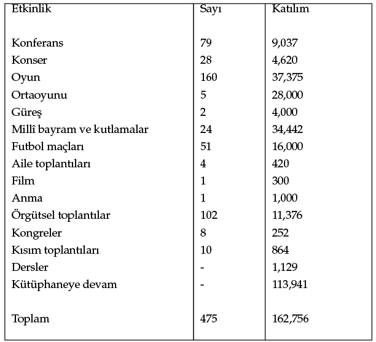
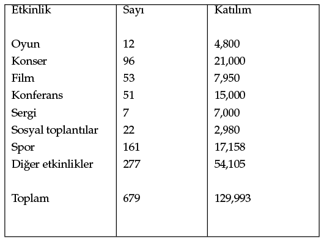
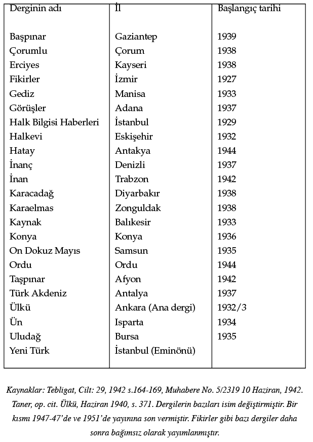
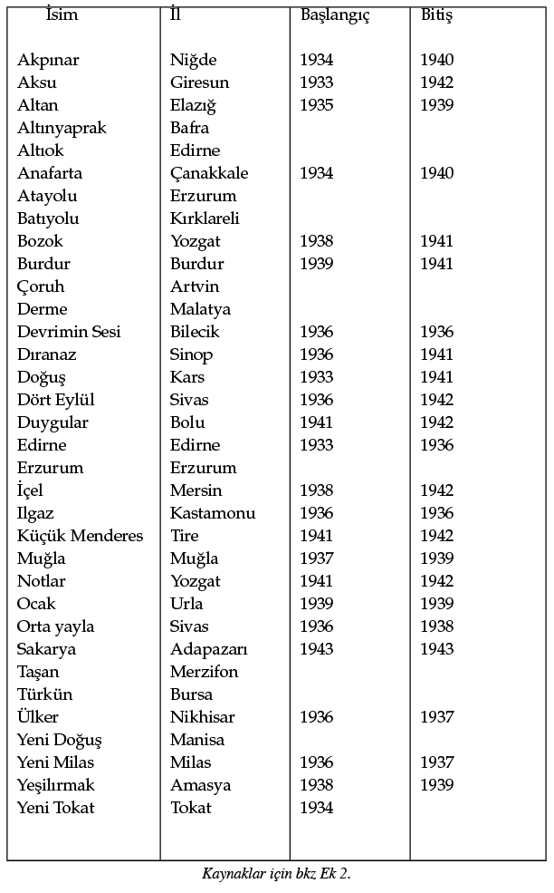

GİRİŞ: İDEOLOJİNİN SOSYAL DEĞİŞİMLE İLİŞKİSİ
Türkiye’nin ideolojik gelişiminde bir dönüm noktası olan 27 Mayıs 1960 askerî ihtilali Cumhuriyet’in ilk otuz yılında kurulan siyasal dengenin toplumsal temellerini zayıflattı ve toplumsal örgütlenme ve devlet otoritesine ilişkin geleneksel anlayışın son kalıntılarının ortadan kalkmasının yolunu açtı. Ayrıca ekonomik ve sosyal çatışmaların yüzeye çıkmasını sağladı ve bu konular hakkındaki düşüncelerin billurlaşmasına yardım etti. İhtilalin başlangıçtaki hedefi demokratik parlamenter ilkelere dayanan hukuk düzenini yeniden tesis etmek ve gerekli anayasal güvenceler aracılığıyla demokratik ilkelerin korunmasını sağlamaktı. 1961 anayasasıyla bu hedeflere biçimsel olarak ulaşıldı. İhtilalin sosyal düşünce ve hareketler yönünden uzun vadede yol açtığı sonuçlar ise muhtemelen bu kurumsal başarılardan çok daha önemli oldu.
İhtilal, Türk siyasetinde belirleyici öneme sahip iki sosyo-politik süreci hızlandırdı. Birincisi, iki orta sınıf grup arasındaki iktidar mücadelesiyle ilgiliydi. Bu gruplardan biri Cumhuriyet’in ilk yıllarının bürokratik elitiyle işbirliği hâlindeydi, yükselişteki yeni ve kalabalık ikinci grup ise ekonomik faaliyetlere ve serbest mesleklere dayanmaktaydı. İkinci sosyo-politik süreç, işçi sınıfının ortaya çıkışı ve kırsal gruplar arasındaki yapısal değişimle ve bu grupların ekonomik çıkar temelinde haklarını arayıp güç kazanmaya çalışmasıyla ilgiliydi.
1960’tan sonra Türkiye’de yaşanan ideolojik gelişmeler yukarıdaki sosyal süreçlerin bir yansıması olmanın yanı sıra belli siyasal eylemler aracılığıyla bu süreçleri yorumlayıp yönlendirme çabasının da bir ifadesidir. Sonuç olarak Türkiye’de ideolojinin kaynağı ve rolü sosyal dönüşümle yakından ilişkilidir ve bu ikisi arasında bir sebep sonuç ilişkisi vardır. Türkiye öyle bir noktaya ulaşmış durumdadır ki bizatihi modernleşme sürecinin siyasal ve ekonomik güçlerinin yarattığı veya beslediği aşağıdan gelen gruplar modernleşmenin erken dönemlerine ait yönetici gruplara başarılı bir şekilde kafa tutar hâle gelmiştir. Üst sosyal gruplar arasındaki çatışma muhafazakârlık ve modernizm arasındaki bir mücadele olarak görülebilir. Buna karşın her iki grubun benimsediği fikirler manzumesi o kadar çarpıcı bir şekilde değişmiş durumdadır ki muhafazakârlık ve modernizm eski ile yeni arasındaki bir mücadeleden ziyade yeni bir modern bağlam içinde kendisini ortaya koymaktadır. Bu olgu, hiç şüphe yok ki 1960’dan sonra Türkiye’de yaşanan ideolojik gelişmenin yeni ve alışılmadık yönüdür. Sosyal ve siyasal dönüşüm eski muhafazakârlık ve modernizm anlayışının değişmesini zorunlu kılmış ve ideoloji içeriden bir entelektüel değişimi başarmanın aracı hâline gelmiştir. Demek ki ideoloji, yeni bir ülkede, dönüşümün ilk aşamasında, geleneksel olduğu söylenen kurumlar ve yaşam tarzındaki değişimi meşrulaştırmak için kullanılabilir. İkinci aşamada da yeni bir soysal ve siyasal yaşama uyum sağlanmasına yardımcı olabilir. Böylece ikinci safhada “modern” ve “geleneksel” terimleri başlangıçtaki anlamını büyük ölçüde yitirebilir. Eskiden “modern” olduğu düşünülen bir şey “muhafazakâr” bir güce dönüşebileceği gibi, “geleneksel” olan da dinamik ve ileri görüşlü bir özellik kazanabilir.
Örneğin ulema grubu değişimin birinci safhasında muhafazakâr bir güç olabilir. Ancak siyasal hakları için baskı yapmaya başlayıp sanayileşmeyle ilgilenen bir girişimci grup hâline gelirse “modern” bir güç hâline gelmesi mümkündür. Buna karşılık meseleye devletin resmî görüşü açısından yaklaşan reformcu grup ekonomik zihniyete sahip diğer gruba karşı direnç gösterebilir ve kendisi “muhafazakâr” bir güce dönüşebilir. Bu süreç boyunca ulema dış görünüş olarak eski giyiniş tarzını, dindarlığını ve geleneksel alışkanlıklarını muhafaza edebilir ama toplum, insan ve devlet hakkındaki fikirleri, belki de o kadar çarpıcı bir şekilde değişmiştir ki biçimsel olarak sürdürdüğü geleneğe bağlılık esasen ekonomik saiklerden kaynaklanır hâle gelmiştir. Bu, kendi içinde köklü bir değişikliktir. Çünkü ekonomik motivasyon, büyük ihtimalle, sosyal gruplar arasında zincirleme bir reaksiyona yol açar ve ulemanın esasen dinî bir rol üstlendiği geçmiş zamanlardan bütünüyle farklı yeni roller üstlenmesini gerektirir. (Bu fikrin kaynağı yazarın bizzat gözlemlediği olgulardır. Öyle ki; Türkiye’deki ulema mensupları ve ahfadının çoğu son yirmi yıldır, toprak sahibi, tüccar veya esnaf olmakta veya bu tip gruplarla işbirliği yapmaktadır.)
Arap ülkelerinin şu an itibariyle birinci değişim safhasının sonuna ulaşmış olduğu görülmektedir. Türkiye ise ikinci safhaya girmiştir. Bunun bir sonucu olarak, Türk inkılabının belkemiğini oluşturan laiklik, dinî reform ve kadın özgürlüğü gibi meseleler bugün gelenekçilikle modernizm arasındaki ayrım çizgisini ifade etmekten çıkmış, modernizme kafa tutmaktan ziyade ona uyum sağlamaya yönelik şahsi görüş ve yorumlara konu olan normal meseleler hâline gelmiştir. Milliyetçilik anlayışındaki değişiklikler, milliyetçiliğin çeşitli anlamlarını koruma yönündeki çabaların zayıflaması ve (çalışmanın ilerleyen safhalarında incelenecek bir olgu olan) İslam’ın içinde aranmaya başlanan yeni “bireysel” ahlak, yukarıda bahsedilen noktaları örneklemektedir.
1960’tan sonra Türkiye’de yaşanan ideolojik gelişmeler, ancak, sosyal ve siyasal değişimlerle, özellikle de 1946-1960 arasındaki yönetici orta sınıf grupları arasındaki iktidar değişiklikleriyle ilişki içinde incelendiğinde bir anlam kazanmaktadır.
Sivil ve askerî bürokratlar ve aydınlar (resmî kurumlarda orta veya yüksek öğrenim görmüş kişiler) 1940’lara kadar Türkiye’yi yöneten orta sınıfın ana omurgasını oluşturdu. Ulusal bağımsızlığı sağlayan, Batı’nın ekonomik tahakkümüne son veren ve Osmanlı hanedanını devirip geleneksel ulema ve imparatorluk bürokrasisinden oluşan saltanat destekçilerinin siyasal iktidarını yıkarak cumhuriyet rejimini kuran bu grup, başlangıçta devrimci ve milliyetçi bir gruptu. Taşradaki tarım ve ticaretle uğraşan gruplarla işbirliği yapan veya devlet teşebbüsleri aracılığıyla zenginleştirdiği insanlarla kendi ekonomik grubunu oluşturan grup, bu yolla içerideki iktidarını sağlamlaştırdı.121
Bu bürokratik orta sınıfın sosyal ve siyasal bakış açısı, herhangi bir sosyal grupla kurduğu ilişkiden ziyade devletle ilişkisinden kaynaklanmaktaydı. Teorik olarak devlet milletin bütününü temsil ediyordu. Hâlbuki halk henüz kendi millî kimliğinin tamamen bilincinde değildi. Bilakis halk kültürüne yabancı olan laik-milliyetçi bir felsefeye dayanarak bir Türk millî kültürü (etos) yaratmaya çalışan devletin kendisiydi. Dönemin milliyetçi ideolojisi bu bakış açısına dayanmakla birlikte sosyal gerçeklerle pek de uyumlu değildi. Yönetenlerle yönetilenler arasında duygusal bir bağ kurmayı ve sosyal ve ekonomik süreci birbirine entegre etmeyi başaramayan, üstelik halkın kamusal yaşama katılımını da epey düşük bir seviyede tutan bürokratik orta sınıf kendini toplumun büyük bir kesiminden kopmuş durumda buldu. Bu sınıfın milliyetçiliği gitgide güçlü muhafazakâr eğilimler kazandı. Bu eğilimler kendisini alt sınıfların dikey sosyal hareketliliğinin engellenmesi ve sınıf farklarının ve ekonomik çıkarlara dayanan anlaşmazlıkların reddedilmesi şeklinde gösterdi. Milliyetçi grup devlet ve milletin birey karşısındaki üstünlüğünü alabildiğine vurguladı ve Türk tarihinin zaferlerinden güç aldı.
Bu yönetici grubun temel amacı modern bir siyasal yapının, yani ulus devletin kurulması ve sağlamlaştırılmasıydı. Bu tip bir devlete duyulan ihtiyaç felsefî görüşlerden ziyade uluslararası koşulların bir sonucu olan Türklerin bir etnik grup olarak kendilerini koruma ihtiyacından ve iktidardaki grubun çıkarlarından kaynaklanmaktaydı.
1920’lerin başında tamamlanan ulus devlet kurma süreci, İslam’ın evrenselci gelenekleri ve çok milletli bir Osmanlı Devleti’ne dayanan Türkiye’nin tarihsel arkaplanı düşünüldüğünde, gerçekten de büyük bir başarıydı. Ulus devlet adına kullanılan siyasal otoritenin gelecekteki sosyal gelişmeler üzerinde belirleyici bir etkisi oldu. Bu otorite, iç gelişmelerin kontrol altına alındığı ve Türkiye’nin iyi tanımlanmış ulusal sınırları içindeki sosyal grupların sorunları, çıkarları ve istekleri ışığında nihayet bir düzene bağlandığı bir modern siyasal çerçeve sağladı. Ulus devlet gitgide bir siyasal yönetim biçiminin yanı sıra bir yaşam tarzı da yarattı. Sonuç olarak, liberalleşme politikasını takiben 1945’ten sonra başlayan siyasal mücadele, cumhuriyet rejimine değil iktidarı elinde bulunduran bir elite, yani Cumhuriyet Halk Partisi’ne karşı bir hareket olarak ele alınmalıdır.122Ayrıca bu mücadele, ulus devlet sınırları içindeki sosyal grupların çıkarlarını ve iktidara tırmanma haklarını kabul ettirmek için yürüttüğü bir sosyal mücadeleydi. Cumhuriyet Halk Partisi’ne karşı muhalefet, resmen, 1945’te toprak reformu üzerine yaşanan bir tartışma sırasında kendi safları içinden doğdu. Muhalifler nihayet 1946 yılında kendi partilerini (Demokrat Parti) kurdular ve 1950’de seçimleri kazanarak iktidara geldiler.
Demokratlara göre geçmişteki güçlü yönetimin temel gerekçesi siyasal sistemle bağlantılı modern reformları koruma ihtiyacıydı. Bu reformlar artık kabul edilmişti ve halkın büyük kısmı yeni yaşam tarzına alıştığı için bu reformlara kafa tutacak örgütlü bir grup da yoktu. Dolayısıyla kendisini “reformların bekçisi” olarak ilan eden bir elitin iktidarı elinde bulundurmasının tek gerekçesi artık ortadan kalkmıştı.
Demokratların güçlü yönetime getirdikleri alternatif demokrasi idi. Demokratların demokrasiye yükledikleri anlamda Türkiye’de daha sonra yaşanacak olan ideolojik gelişmelerin ipuçlarını bulmak mümkündür. Onlara göre demokrasi şahsi siyasal haklar, özel mülkiyete saygı ve özel mülkiyetin sağlam güvencelerle devlet müdahalesinden (müsadere) korunması demekti. Demokrasi aynı zamanda serbest ekonomik teşebbüs anlamına geliyordu. Mevcut güçlü yönetime karşı isyan 1945’te, yani devletçiliğin toplumsal refah ve halkın yönetime daha geniş katılımı çerçevesinde yeniden tanımlanmasını öneren yeni fikirlerin geliştiği bir dönemde başladı.
Demokrat Parti’nin başında toprak sahibi gruplar, iş ve ticaret çevreleri ve profesyoneller vardı ve bunların demokrasi ve devletle ilgili görüşleri ekonomik statüleriyle yakından ilişkili olup özel mülkiyetin kutsallığı fikrine dayanmaktaydı. Cumhuriyet döneminde kabul edilen hukuk sistemi, özellikle de Medeni Kanun, mülkiyet ilişkilerini en ince ayrıntısına kadar düzenlemekteydi. Ne var ki hukuk, 1942’de kabul edilen Varlık Vergisi’nde de görüldüğü gibi, zaman zaman özel mülkiyeti ihlal eden hükümeti denetleyecek siyasal kurumlarla tamamlanmamıştı.
1930-1945 yılları arasında uygulanan devletçi ekonomik politikaların sonucu olarak empoze edilen çeşitli sınırlama ve denetimlerden bunalan kentli alt tabaka mensupları, işçiler ve köylüler liberalleşmiş bir ekonomik rejimi destekledi. Ayrıca ekonomik kalkınma veya faaliyeti artırma yönünde ortak bir istek söz konusuydu ve henüz bunun araçlarını tartışanların sayısı epey azdı. Sonuçta geçmişte uygulanan devletçi politikalar artan beklentilere cevap veremeyince, geleceğin en muhtemel politikası liberal bir ekonomik yaklaşım oldu. Dağınık durumdaki bir avuç sosyalizm taraftarı, özellikle Türkiye’nin kuzeyinde toprak ve Boğazlarda üs talep eden Sovyetlerle ilişkilerin bozulduğu 1946’dan sonra toplum nezdinde hiçbir kabul görmedi.
Dış politikayla ilgili ikinci belirleyici etki Batı’dan, bilhassa NATO ve dış yardım kanalıyla Amerika Birleşik Devletleri’nden geldi. Amerika özel girişimden ve girişimci grupların hızlı büyümesini sağlaması kuvvetle muhtemel olan genel bir ekonomi politikasından yanaydı. Bu politikanın 1960’tan sonra yaşanan ideolojik gelişmeler üzerinde kayda değer bir siyasal etkisi oldu. Çünkü sosyalist gruplar girişimci orta sınıfın iktidara yükselişini Türkiye’yi içeriden teslim almak isteyen Batı’nın bir oyunu olarak gördü. Demokratların 1950’de iktidara geldikten sonra benimsedikleri yeni ekonomi politikası yukarıda tarif ettiğimiz koşullar tarafından belirlenen bir istikamet izledi.123 Bu yeni ekonomi politikası sosyal hareketliliği teşvik etti ve yeni bir girişimci orta sınıfın hızla yayılmasını kolaylaştırdı. Bu sınıf profesyoneller, mevcut girişimci gruplar, köylülüğün üst tabakası, hizmet sektörü, bürokrasinin alt kesimleri ve kentlerdeki esnaf arasından doğmuştu. Bu yeni girişimci orta sınıf, zihniyet ve çalışma yöntemi açısından şahsi inisiyatife dayanıyor ve biraz gönülsüz de olsa kaynağını arz-talep kanununa göre işleyen bir ekonomiden alan rekabet ilkesini benimsiyordu. Sonuç olarak bu yeni sınıf, Cumhuriyet’in ilk yıllarında devlet desteği ve güdümlü iç piyasa sayesinde yaratılan ticaret ve sanayi gruplarına benzemiyordu ve nihayet onlara ters düştü. Devletçi politikadan faydalananlar ve toprak sahibi gruplar gitgide üst tabakayı oluşturmaya başladılar. Artık yeni düzenin “kapitalistleri” olarak adlandırılıyorlardı. Ne var ki bu liberal ekonomi politikasına karşın devletin ekonomideki rolü azalacağına daha da arttı. Devlet sadece yol ve baraj yapımı gibi kamu işlerine değil sanayiye de yoğun yatırım yaptı. Anlaşılan o ki devlet ekonomik faaliyeti teşvik ederek özel sektörde sermaye birikimini hızlandırmayı amaçlıyordu. Bu amacında başarılı da oldu. Devletin ekonomik üstünlüğüne dayanan eski yaşamın bütün ritmi değişti. Yeni ekonomi politikası ve siyasetin ekonomik çıkarlarla gitgide daha ilişkili hâle gelmesi, ekonomik çıkarlarını güvence altına almak için siyasal partilere artan bir baskı uygulayan bir dizi çıkar grubunun oluşmasını sağladı. İlk baskı grupları şehirlerde hizmet sektörü ve esnaflar arasındaki mesleki örgütlenmeler ve otobüs ve araba şoförleri, ayakkabıcılar, kasaplar, fırıncılar gibi çeşitli meslek grupları şeklinde ortaya çıktı. Bu sırada daha büyük kapitalistleri temsil eden Sanayi ve Ticaret Odaları tam anlamıyla güçlü bir çıkar grup oluşturdular.
Bu grupların 1950’den itibaren istikrarlı bir şekilde artan faaliyetleri zincirleme bir reaksiyona yol açtı. Örneğin ev sahipleri grubu, 1954 yılında, hükümete yoğun bir baskı uyguladıktan sonra kira denetimlerinin (6084 sayılı kanun) kaldırılmasını sağladı. Buna karşılık kiracılar da Türkiye Kiracılar Cemiyeti’ni kurdular ve basının moral desteğiyle kanunu kendi lehlerine revize ettirmeyi başardılar.124 Baskı grupları 1960’tan sonra daha da önem kazandı. 1961 Anayasasını kaleme alan Kurucu Meclis mesleki temsil esasına göre kurulmuştu ve bu Türkiye’nin yaşadığı iç değişimin bir sembolüydü. Ayrıca ifade etmeliyiz ki köylülük örgütlenmiş olmamasına karşın bir çıkar grubu olma bilincine erişmişti ve sandıktaki gücünü kullanarak siyasal partilerden maddi kazanç elde etmekteydi.125
Modern bir ekonomik çıkar fikri temelinde kurulmuş olan gönüllü kuruluşlar, hiç şüphe yok ki sadece Türkiye için değil bütün Müslüman dünyası için de önemli bir gelişmedir. Bu gelişme kişinin kendi ailesinden daha büyük gruplarla ilişki kurmasını sağlayan yeni kimlik ve motiflerin ortaya çıkışını göstermektedir. Ayrıca yeni bir toplum anlayışı ve yurttaş sorumluluğu da gelişme hâlindedir.
Türkiye’nin yeni ekonomik yönelimi eğitime atfedilen anlamda yavaş bir değişimi de beraberinde getirdi. Okur yazarlık ve bilgi, belli bir grubun tekelinde, statü belirten bir ayırıcı vasıf olmaktan çıktı.126 Henüz başlangıç aşamasında olan pragmatik bir eğitim yaklaşımı gözle görülür biçimde uygulanmaya başladı. Okulların amacını “üretken, dikkatli, uyumlu bireyler yetiştirmek ve öğrencilere topluma faydası dokunacak beceriler kazandırmak” olarak tanımlayan bir Millî Eğitim Komisyonu raporu bu tutumun somut bir ifadesiydi.127
Türkiye’de ekonomik güce dayanan yeni bir orta sınıfın doğuşu bu süreci en sert şekilde eleştirenlerin bile kabul ettiği bir olguydu. Bunlardan biri, Batıcılığa ve Türkiye’nin dış politikasına amansızca saldırdığı kitabında, Türkiye’de son on beş yılın en belirgin gelişmesinin yaşam standardı halk kitlelerinin epey üstünde olan bir burjuvazinin doğuşu olduğunu söylemekteydi. Yazara göre bu sınıf yabancı çıkarlara hizmet etmekte ve onların sözcülüğünü yapmaktaydı.128 Yeni orta sınıf zarafetten yoksundu, servet düşkünü bir görünümü vardı ve başlangıçta hiçbir şekilde bir sosyal bilinç ve sorumluluğa sahip değildi. Geniş bir kültürel ufka, vizyona ve ideale sahip olmayan bu grup her şeyiyle paranın satın alabileceği maddi zevklere daldı. Demek ki bir ülkenin manevi, geleneksel ve düzenleyici güçleri çözülüp yerine yenileri geliştirilemediği zaman, insanın hayvani içgüdüleri dizginlerinden boşanıyordu. Yine de zamanla bu orta sınıf, içgüdüsel olarak, bu gitgide yayılan maddiyatçılığı denetim altına alacak ahlaki kurallara ihtiyaç duydu. Bir gecede Batılı orta sınıfın değerlerini, alışkanlıklarını ve bakış açısını kazanması mümkün değildi. Yapması gereken kendi kültürel kaynaklarına dayanmaktı. Bu sınıfın kentli üyelerinin, özellikle çocuklarında belirgin bir şekilde ortaya çıkan modern bir bakış açısını benimsediği doğruydu. Ancak büyük çoğunluk, toplumun maddi beklentilerini sınırlayacak fikirler bulmak ümidiyle İslam’a döndü. Aydınlar İslam’a dönüşü laikliğe karşı bir tepki olarak değerlendirdi. Hâlbuki bu eğilim dinde yeni bir anlam ve fonksiyon arama çabasından kaynaklanıyordu. Bir avuç zayıf gerici grup dışında siyasal rejimi değiştirme arayışından söz etmek mümkün değildi, bunun yerine ahlaki, manevi ve ruhsal ihtiyaçları ikmal etmek için dinden faydalanma söz konusuydu. Ne olursa olsun, bu orta sınıfın sosyal eğitimini tamamlaması ve kültürel ve mesleki ufkunu genişletmesi hayatta kalmasının öncelikli koşuluydu.
Bu esnada enflasyon sivil ve askerî bürokrasi başta olmak üzere ücretlileri vurdu ve yaşam standartlarını düşürdü. Yeni ekonomik grupların iktidar mevkilerine tırmanması eski değerler sistemini bir hayli değiştirdi. Servet sosyal statüyü belirleyen temel faktör hâline gelmeye başladı. Böylece eski yönetici elit çektiği ekonomik zorlukların yanı sıra can sıkıcı bir sosyal düşüş yaşadı.
Sosyal içerikli veya sosyalist literatürün yükselişiyle bürokrasinin sosyal statüsünün değişmesi arasında oldukça yakın bir ilişki vardır. Gitgide doktriner bir sol eğilim kazanan yeni sosyal düşünce akımı bürokrasinin alt kademeleri, öğretmenler ve bazı marjinal gruplar tarafından desteklenmekteydi. 1950’lere kadar sosyal fikirlere kayıtsız kalan, ancak bu tarihten sonra gitgide ekonomik zorluklarla karşılaşan ve sosyal statülerini yitiren aydınlar ve bürokrasi sosyal adalet, ekonomik kalkınma ve planlı ekonomiye ilgi göstermeye başladı. Yeni ve adil bir sosyal düzen yaratma fikri sosyal düşünce akımlarının arkasındaki temel itici güçtü.
27 Mayıs 1960 İhtilali bu sosyal dönüşüm süreci içinde gerçekleşti. Ordunun harekete geçmesini hızlandıran bir olgu olarak iktidar ve muhalefet partileri arasındaki siyasal mücadeleye burada değinmeyeceğiz. Bunun yerine meselenin sosyal yönlerine ele almak niyetindeyiz.
Ordu, ihtilalin herhangi bir gruba karşı değil, demokratik düzeni sağlam temeller üzerinde yeniden tesis etmek için yapıldığını iddia etmekteydi. Siyasal açıdan bu iddia doğruydu. Ancak sosyal açıdan, ordunun attığı adımların çoğu şunu göstermekteydi ki ihtilal, Demokrat Parti döneminde ekonomik ve siyasal güç kazananlara karşı yapılmıştı.129 Bazı cunta üyeleri Demokratların “Ordunun millî kültürel hayat içindeki yerini ortadan kaldırmak için ellerinden geleni yaptıklarını”, “subaylara üvey evlattan beter davrandıklarını”130, üstüne üstlük uyguladıkları ekonomi politikaları sayesinde her mahallede milyonerler yaratmakla övündüklerini açıkça ilan ediyordu. Demokratları desteklemiş olan toprak sahiplerinin tutuklanması, servet araştırma komisyonlarının kurulması (bunlar daha sonra kaldırıldı), toprak ve gayrimenkul üzerine ağır vergiler konması gibi tedbirler hep bu yeni sınıfı hedef almaktaydı. İhtilali haklı çıkarmak için yayımlanan bir bildiride “Demokrat Parti döneminde devletin fiziksel bir baskı aygıtı hâlini aldığı ve özel çıkar gruplarının menfaatlerine hizmet etmek için kullanıldığı” vurgulanıyordu. Bu yüzden devletin gitgide ordu (devletin gerçek temeli), üniversiteler, barolar ve basın131 gibi diğer gruplara düşman olduğu iddia ediliyordu. Bu grupların hepsi aslında 1950’lere kadar Türkiye’ye hâkim olan yönetici grubu oluşturmaktaydı. Çeşitli ticari kuruluşların Demokrat Parti kasasına yaptıkları yardımlar paranın Türk siyasetinde önemli bir enstrüman hâline geldiğini ve ticari kuruluşların kazançlarını artırmak için finansal güçlerini kullanmaya başladıklarını gösteriyordu.132
İhtilalin uzun vadeli anayasal sonuçları da oldu. Ordunun zorla iktidara el koyması ve ana hatları belli sosyal motivasyonlarla silahlı kuvvetler adına ülkeyi yönetmesi tarihsel geleneğe tamamen aykırıydı. Geçmişte de iktidar sayısız defa el değiştirmiş, ancak her seferinde meşrulaştırıcı bir gerekçe olarak geleneksel otorite anlayışına başvurulmuştu.133
Atatürk bile, Kurtuluş Savaşı ve Cumhuriyet döneminde tam anlamıyla devrimci prensipleri hayata geçirirken, Saltanatın kaldırılmasıyla ilgili konuşmasının da gösterdiği gibi, bunları geleneksel argümanlarla meşrulaştırmak konusunda son derece titizlik göstermişti.134 Mustafa Kemal’in iktidara gelişi, cumhuriyetin kurulması ve hatta reformların bazıları acımasızca hayata geçirilmedi, aksine çoğu zaman geleneksel otorite anlayışına dayanan kamuoyu tarafından kabul edilebilir argümanlarla açıklandı ve meşrulaştırıldı. Bu yüzden de kitleler, liderliğin değişmesine karşın, devletle temel ilkeler arasındaki uyumun sürdüğünü düşünmeye devam ettiler.
Hâlbuki 1960’ta ihtilalci subaylar iktidar iddialarına meşruluk kazandıran bütün geleneksel kavramları yok saydı. Çünkü öncelikle bu kavramlarla yetişmemişlerdi ve anlaşmazlık geleneksel dönemde benzeri görülmeyen bir sosyal dönüşümden ve ekonomik güçlerden kaynaklanmaktaydı. Bu yüzden devlet artık tanrısal iradenin somut bir ifadesi değil dünyevi iktidarın aracı olan bir kurum olarak görülmeye başlamıştı. İhtilalden sonra geleneksel dönemden kalan birçok siyasal sembol ve mit Türkiye’nin gerçek ihtiyaçlarıyla uyumsuz oldukları gerekçesiyle terk edildi. Hatta alegori ve benzetmelerle dolu, sık sık insani durumlara başvuran ve çoğu zaman anlamsız olan eski şiirsel konuşmalar, yerini daha mantıklı, kesin ve rasyonel konuşmalara bıraktı. Bu makalenin yazarı gibi Türk siyaseti üzerine çalışan biri için 1931-1960 dönemiyle 1960 sonrası dönem nitelik ve yönelim itibariyle birbirinden epey farklı görünecektir. Bilhassa 1960’tan sonra toplum, millet ve devlet kavramları arasında diyalektik bir anlayışa dayanan rasyonel bir ilişki kurma yönünde samimi bir çaba söz konusu oldu. Hâlbuki geçmişte bu kavramlar geleneksel içerikleri nedeniyle ve buna rağmen eleştirel bir analize tabi tutulmadan olduğu gibi kabul edilmişti.
Buraya kadarki giriş ihtilalin kendine özgü bir sosyal arka plana sahip olduğunu ve bu arka planın kendisini siyaset içinde yeni fikirler, başka bir deyişle ideoloji şeklinde ortaya koyduğunu yeterince açıklığa kavuşturmaktadır. Türkiye’de 1960’tan sonra yaşanan ideolojik tartışmalar iki farklı kategoride ortaya çıkmaktadır: Birincisi önceki on yıllar boyunca revaçta olan milliyetçi kavramlardan oluşmaktadır, ikinci kategoriyse değişime uğramış bir sosyal düzenin ekonomik ve siyasal gerçeklerinden doğan sosyalist fikirleri içine alır. Önemle kaydetmek gerekir ki ihtilalden sonra ordu bile, ücretlerin ve emekli maaşlarının artması ve subaylara lojman sağlanması yönündeki çabalarının da gösterdiği gibi, gitgide bir çıkar grubuna dönüşmüştür. Ekonomik motivasyon, ister bireysel olarak ister grup temelinde olsun, ihtilalden sonra meşru ve hukuken korunmaya değer bir şey olarak kabul edildi. Bu gelişmenin işçilere toplu pazarlık ve grev hakkının verilmesi kararında önemli bir etkisi oldu. Ayrıca girişimci gruplara ekonomik faaliyetin haklı bir gerekçesi olarak kazanç dürtüsünü savunma yönünde bir başlangıç argümanı sağladı. Irkçılık gibi bazı aşırı milliyetçi kavramlar terk edildi, buna karşılık diğer milliyetçi kavramlar yeniden yorumlanarak yeni koşullara uyumlu hâle getirildi. Sosyalizm de Marksizm’den İslami sosyalizme dek uzanan geniş bir yelpaze içinde çeşitli tonlarıyla ortaya çıktı. Öte yandan, Türk siyasetinde ilk kez sağ ve sol uç akımlar bütün açıklığıyla belirdi ve bu durum 1961’den sonra yerleşik siyasal sistemin belkemiği hâline gelecek olan ılımlı bir üçüncü seçeneğin kurulmasını mümkün kıldı.135 Bu koşullar altında ortaya çıkan düşünce akımları sosyal gruplarla özdeşleşen kişiler tarafından savunuldu. İleri sürülen fikirler çoğu zaman yüzeyseldi ve tam olarak özümsenmemiş yabancı sloganlara dayanan gelip geçici bir hevesi yansıtıyordu, buna karşın olayları anlamak, açıklamak, haklı çıkarmak ve insanın kişisel yaşamı ve dünya görüşüyle uyumlu hâle getirmek yönünde derinden hissedilen bir istek söz konusuydu. Kişinin hayatına anlam kazandıracak ve yön verecek, ama aynı zamanda toplum ve devlet karşısında ona güvence sağlayacak yeni bir siyasal ve kültürel değerler ve inançlar setine ihtiyaç vardı. Aslında ideolojinin temel işlevi de buydu.
MUHAFAZAKÂRLIK VE SOSYAL DEĞİŞİM ARASINDA TÜRK MİLLİYETÇİLİĞİ
Türkiye’de milliyetçilik, sosyal değişim ve iktidar politikasıyla ilişkili olarak incelendiğinde, Türkiye’nin dar bir elitin yönetimine dayanan bir rejimden daha geniş sosyal katılıma dayanan bir rejime doğru geçirdiği evrimi aynen yansıtır.
Milliyetçilik, 1908-1918 döneminde aydınlar arasında serbest tartışma içinde gelişti ve Kurtuluş Savaşı sırasında soldan sağa bütün sosyal grupları ortak amaç uğruna seferber etmekte kullanıldı. Solculardan İslamcılara dek bütün ideolojik grupları kucakladı ve nihayet hepsini Türklere ait bir ulus devlet kurma fikri etrafında birleştirdi. Her bir ideolojik grup bu yeni devlet içinde milliyetçilik aracılığıyla kendi inancını en tepeye çıkartmayı ümit ediyordu. Cumhuriyet Halk Partisi 1931’de milliyetçiliği resmî bir ilke hâline getirmeye karar verdi ve 1937’de bu ilkeyi anayasaya sokarak onu tartışmaya meydan vermeyecek şekilde resmîleştirdi. Böylece milliyetçiliğin kapsamı modern Türkiye’nin üzerine kurulduğu laik, modernist fikirler çerçevesine alınarak dikkate değer ölçüde daraltıldı. Millet iyi tanımlanmış ülkesel sınırlar dahilinde yaşayan insan topluluğu olarak görüldü. İnsanlar arasındaki birleştirici bağ geçmiş hatıralar, geleceğe ilişkin hedefler ve halkın kendi diline ve yerel geleneklerine dayanan bir millî kültüre sahip siyasal bir devlet içinde Türk olarak yaşama arzusuydu. Milliyetçilik millî gururu İslam tarihinde değil, Türklerin millî bir grubun ayırt edici özelliklerini sergilemiş olduğu geçmiş olaylarda aramaktaydı.
Millî tarihte başarılar arama çabası tarihe ve Orta Asya mirasına yönelik alışılmışın dışında bir ilgi uyandırdı ve milliyetçiliğin çağdaş Türkiye’nin gerçekleriyle ilişkisini dikkate değer ölçüde zayıflattı. Laik bir millet anlayışını benimseyen Cumhuriyet hükümeti, esasen İslam’la ve İslam’ın evrenselci amaçlarıyla ilişkili olmasından dolayı, Osmanlı’nın kültürel mirasını görmezden geldi ve küçümsedi. Buna karşılık hükümet siyasal menfaatleri gereği Osmanlı İmparatorluğu’ndan miras kalan devlete sadakat ve otoriteye saygı geleneklerini devam ettirdi. Cumhuriyet halkın zihninde siyasal bir gerçek olarak kabul gördü, buna karşın toplumun bütün dokusunu kucaklayan Osmanlı mirası insanların kalbinde yaşamaya devam etti.
Bu esnada, çoğunlukla İmparatorluğun memurlarının devamı olan bürokrasi sayı ve güç olarak büyüdü ve gitgide Osmanlı yönetici ailelerinin çocuklarını ve muhafazakâr grupları içine çekti. Rejimin ayakta kalma ihtiyacı, laik ve ilerici bir devlete hizmet ettiği varsayılan iktidar bilincine sahip bürokrasiyle muhafazakârlar arasında oldukça paradoksal bir ittifaka yol açtı. Bunun sonucunda CHP, 1935 yılında, bütün demokrasi iddialarından vazgeçti ve devlet ve milletle eş anlamlı hâle geldi.
Devlet katı, yapay ve dogmatik bir laiklik politikasında ısrar etti ve iktidarı elinde tutan grupların eğilimlerine uyarak toplumsal açıdan aşırı tutucu hâle geldi. Bununla beraber eski sosyal muhafazakârlık anlayışı, laikliğe karşın, milliyetçilik kılığı altında büyük ölçüde devam ettirildi. Rejimin dış görünüşü modern olsa da küçük kasaba kültürü gitgide üst yapıya nüfuz etti. Böylece başlangıçta benimsenen Batı değerlerine dayalı geniş kültürel yönelim yoldan çıkarak elitlerin statü ve iktidar kaygılarına dayanan kendini beğenmiş ve sürekli kendinden bahseden dar bir millî bencillik anlayışına dönüştü. Hükümetin milliyetçiliği bir devlet ideolojisi hâline dönüştürme kararı ve onu eğitim ve kültür politikasını yöneten bazı bürokratların anlayışlarıyla uyumlu bir şekilde tanımlama çabası milliyetçiliğin içeriğini daha da yozlaştırdı. Bununla birlikte devletin ve partinin içindeki bir grup ilerici milliyetçi, milliyetçiliğin laik yönlerini koruma mücadelesi verdi. Ancak bunlar da kültürün maddi yönlerini aşırı derecede vurgulayıp geleneksel arka planın doğal etkisini büsbütün görmezden gelerek pozitivist anlayışı bir inanç düzeyine çıkardılar. Böylece milliyetçilik, içinde pozitivizm ve gelenekçilik gibi iki zıt düşünceyi barındırdı ve bunlar arasındaki çatışma çeşitli biçimlerde defalarca patlak verdi.136
1946’dan sonra uygulamaya konan liberalleşme politikası, zamanla, laik, pozitivist ve gelenekçi milliyetçilik anlayışları arasındaki çatışmaları su yüzüne çıkardı. Hâlâ devam eden bu çatışmanın en iyi ifadesi iki farklı milliyetçilik anlayışını yansıtan Halkevleri ile Türk Ocakları arasındaki ayrımdır.
1931-32’de kurulan Halkevleri çağdaş toplumun folkloru, yaşamı ve göreneklerine dayanan laik bir Türk millî kimliği yaratmayı hedeflemekteydi. Bir etnik grup olarak Türklerin göreneklerinin tarihsel köklerinin peşine düşen Halkevleri, aynı zamanda laikliğin yılmaz savunucusuydu. 1932’de kapatılan Türk Ocakları 1949’da yeniden kuruldu. 1950’den sonra devlet desteği almaya başladı ve 1951’de Halkevlerinin kapatılmasının ardından nihayet onların yerini aldı. 1911’den beri Türk milliyetçiliğini savunan Türk Ocakları, başlangıçtaki fikirlerine bağlı kalmayı sürdürdü ve Osmanlı tarihi, Cumhuriyet ve İslam arasında organik, kültürel ve duygusal bir devamlılık olduğunu savunarak bu ilişkinin reddedilmesinin devletin temellerini zayıflattığını ileri sürdü. Ziya Gökalp’in üç sloganını parola olarak benimsedi: Türk milletine, İslam ümmetine ve muasır medeniyete mensup olma. Bunlar modern Türklerin birbirine kenetlenmiş üç kimliğini ifade ediyordu. Hükümetin desteğiyle 1954’te yeniden yayımlanmaya başlayan Türk Yurdu, Türkiye’nin kültürel temellerinin tarihsel deneyiminde aranması gerektiği görüşünde ısrar etti. Remzi Oğuz Arık, Osman Turan, Mümtaz Turhan ve Cezmi Türk gibi önde gelen milliyetçi aydınlar teknolojik gelişme anlamında Türkiye’nin modernleşmesinin temel bir ihtiyaç olduğunu kabul etmekle birlikte bunun Osmanlı-İslam geçmişini reddetmeyi gerektirmediğini savunmaktaydılar. Ayrıca, İslam öncesi Türk tarihini dışlamamalarına karşın, Türklerin gerçek kimliğinin ancak İslam’ı kabul ettikten, özellikle de Selçuklu ve Osmanlı gibi kaçınılmaz olarak Türklere has kültürel özellikler taşıyan siyasal devletler kurduktan sonra ortaya çıktığı fikrinde ısrar ediyorlardı. Onlara göre Bizanslılara karşı kazanılan Malazgirt zaferinin ardından Anadolu’nun fethedilmesi Türk-İslam tarihinde yeni bir dönem başlatmış ve Türk toplumu bu dokuz yüz yıllık süreç içinde şekillenmişti. Türkleri birbirine bağlayan “tarih bilinci” vatan için ve kolektif idealler uğruna savaş meydanlarında gösterilen cesaret ve fedakârlık ve kazanılan zaferlerden oluşmaktaydı. Bu milliyetçilik anlayışına göre millet sadece sınırları belli bir ülkeden ibaret değildi, Türklere tarihsel ve kültürel yakınlık hisseden dışarıdaki grupları da içine alıyordu. Türkleri ortak bir kültür ve tarihi paylaştığı diğer Müslümanlardan ayırmak için esasen soy, daha az ölçüde dil ve folklor vurgulanmaktaydı.137
Yeni milliyetçi düşünceye göre devlet millî fikirleri temsil ediyordu, bu yüzden de milletle uyum içinde olması isteniyordu. Devlet ve millet ancak kendilerini ifade eden orijinal ruhu korudukları sürece birbiriyle uyumlu olabilirdi. Bu yüzden Cumhuriyet rejimi bu ruha uymalıydı. Türkiye’nin teknolojik modernleşmesi Batı’nın modern bilimiyle yetişmiş bir elite emanet edilmeliydi.138
Bu milliyetçilik anlayışının başında profesörlerin ve hatırı sayılır bir etkiye sahip olan yazarların bulunduğunu ifade etmek gerekir. Ayrıca Nurettin Topçu gibi tasavvufî öğretilerden etkilenmiş mistikler ve Ali Fuad Başgil gibi ırkçılığa karşı olan liberaller de bu akıma dahildi.139 Bu fikir adamlarının Türk Yurdu, Türk Kültürü ve Tohum gibi dergilerde çıkan yazıları çatısı nispeten iyi kurulmuş, mantıklı ve zaman zaman ikna edici yazılardı.
Osmanlı-İslam geçmişine yönelen milliyetçilerin militan ve gerici bir kanadı da vardı. Bu kanat esasen Rıza Nur’un (1879-1942) öğrencileri tarafından temsil edilmekteydi. Muhafazakâr Sinop şehrinde doğan Rıza Nur, başlangıçta Atatürk’ün yakın arkadaşıydı ancak daha sonra ona ters düşüp Türkiye’yi terk etti. British Museum’a bağışladığı milliyetçilik üzerine beş eseri ancak 1960’ta kamuya açıldı.140 Yine de bölük pörçük durumdaki eserleri takipçileri tarafından biliniyor ve okunuyordu. Rıza Nur milliyetçi bir parti örgütlenmesinin programını yazmıştı. Burada Cumhuriyet rejiminden yana olmakla birlikte devletin resmî dininin İslam olması gerektiğini savunuyordu. Eski alfabe yeniden yürürlüğe sokularak Latin alfabesiyle birlikte kullanılmalıydı. Tarikatlar Türkçülüğü yaymakla görevli misyoner örgütler olarak yeniden açılmalıydı. Halifelik yeniden tesis edilmeliydi. Rıza Nur toplumsal düzen üzerindeki yıkıcı etkileri nedeniyle sanayileşmeye karşıydı, ancak tarımın modernleşmesinden yanaydı. Ona göre kadınlar yeniden evlerine sokulmalıydı. İnanmış bir ırkçı olarak bütün Türklerin Anadolu Türklerinin merkezinde yer aldığı bir konfederasyon içinde birleşmesinden yanaydı. Atatürk’e şiddetle muhalif olan Rıza Nur, devlet kademelerinde Rumeli Türklerine sadece nüfuslarıyla orantılı bir yer verilmesi gerektiği önerisi üzerinde önemle duruyordu.141 Teorik olarak çok partili sisteme karşı olmamakla birlikte Cumhuriyet Halk Partisi’nin lağvedilmesinden ve yerine devlet otoritesini elinde bulunduracak faşist tipte bir milliyetçi örgütün geçirilmesinden yanaydı. Nur, milliyetçiler tarafından Anadolu Türklerinin gerçek duygularına tercüman olan kişi olarak selamlandı. Atatürk’ü suçlaması ve hatta onun heykellerinin yıkılmasını önermesi gibi radikal fikirleri bugün çeşitli militan milliyetçi akımlar için temel ilham kaynağı olmayı sürdürmektedir.
Osmanlı geçmişine yönelen milliyetçiler (onlar için ırkçılığın pek bir cazibesi yoktu) ekonomik işlerle meşgul olan üst ve orta sınıflar arasında geniş destek buldu. Bu tip bir milliyetçilik onlara öncelikle duygusal olarak cazip gelmişti, ama belki de daha önemlisi, sosyal düzenin değişmez olduğu şeklindeki geleneksel inancı desteklediği için zımni olarak onların sosyal konumlarını da güçlendirmiş oluyordu. Ne var ki bu yeni orta sınıf eski sosyal düzenin sembollerini sürdürmeye çalışırken bile pratikte onun bozulmasının temel kaynağıydı. Osmanlı tarihine ilişkin çalışmalara solcuların ilgi göstermesi yakın tarihlidir. Çünkü Osmanlı tarihi onlara göre toplumun sosyalizme evrildiğini kanıtlayan bir sosyal deneyim laboratuvarıydı.
Gelenekçi milliyetçiliğin yükselişi ve muhafazakâr yönelimine karşı ilk tepki laiklerden geldi. Bunlar Atatürkçülükte daha derin anlamlar keşfetmeye başladılar ve onu Türkiye’nin başlangıçtaki laik-milliyetçi ilkelerini yeniden yürürlüğe sokmayı amaçlayan bir harekete dönüştürdüler. Laik milliyetçiler 1950’lerin başında Türk Devrim Ocakları’nı kurdu ve Köy Enstitüsü mezunları başta olmak üzere çeşitli liberal ve sosyal fikirli grupları etkisi altına aldı. Az sayıda şehirde şube açan kuruluş üniversite öğrencileri arasında dikkate değer bir ilgiyle karşılaştı. Yeni orta sınıfların yükselişi Demokratların liberal ekonomi politikalarıyla birleşince laik milliyetçiler (kentliler ve bürokratlar) ekonomik ve sosyal problemler hakkında bir tutum belirlemek zorunda kaldı. Bu gelişmelerin ilk sonucu kendisini Varlık, Dost, Yeni Ufuklar ve Yedi Tepe gibi dergilerdeki edebiyat ürünlerinde ortaya koyan bir sosyal bilincin doğuşuydu. Bu dergiler telif eserlerin ve Türkiye’de yayınlanan kitapların önemli bir kısmını oluşturan Batı edebiyatı çevirilerinin yayımlanmasına destek oldu. Dünya ve Cumhuriyet gibi gazeteler bu grubu destekledi. Bu arada, sayısı pek artmayan Devrim Ocakları laiklik tartışmalarının gitgide ekonomik ve sosyal alanlara yöneldiği kültür kulüplerine dönüştü. Birçok üyesi CHP’nin gençlik kollarından geldiği için, Ocaklar CHP eğilimliydi.
Laik milliyetçiler arasında iki grup oluşmaya başladı. Ilımlı olan birinci grup demokratik bir yönetim altında başlangıçtaki laik milliyetçi ilkelere dönülmesini savunuyordu. Daha genç olan ikinci grup ise Atatürk’ün reformlarına sosyal bir içerik kazandırmaya çalışıyordu. Bunlara göre kültürel laik reformlar, kapsamlı sosyal değişikliklerle ve kendisini buna adamış bir siyasal rejimle desteklenmediği sürece etkisiz kalmaya mahkûmdu. Bu grup içindeki kimi aydınlar giderek sosyalizmi benimsemeye başladılar.142
1960 askerî ihtilali Türk milliyetçiliği içindeki ayrışmayı hızlandırdı ve nihayete erdirdi. İhtilal laik milliyetçiler için bir bakıma bir zaferdi. İhtilal öncesinde Demokrat Parti’ye muhalif olmaları ve subayların laik yönelimi, bilhassa reformlara karşı olduğu varsayılan Demokratların tutumu nedeniyle, onları bir araya getirmiş gibiydi. Sonuçta laik milliyetçiler kendilerini Demokrat yönetim tarafından desteklenmiş olan İslami milliyetçilerle karşı karşıya buldular.143 Böylece siyasal değişim, milliyetçilerin iki grubu arasında uzun zamandır oluşum sürecinde olan önemli bir yarılmayı hızlandırmış oldu. Laikler gitgide 27 Mayıs İhtilali ve reformlarla özdeşleşip askerî hükümeti desteklerken, diğerleri muhalefete sempati duydu ve iktidardan indirilen Demokratlarla işbirliği yaptı.
Yine de ihtilalden bir süre sonra yeni milliyetçiliğin özü hâlâ netliğe kavuşmamıştı. Cuntanın Albay Alparslan Türkeş liderliğindeki milliyetçi kanadı (laik bir bağlam içinde olsa da) Osmanlı mirasına yönelmiş gibiydi. Çünkü esasen millî birliği pekiştirmek için Osmanlı’nın tarihsel cazibesi gerekli görülmüştü. Güvenilir bir bilgiye göre muhafazakâr milliyetçi profesör Mümtaz Turhan’ın Millî Eğitim Bakanı olarak atanması ciddi bir şekilde düşünülmüştü. Turhan, muhtemelen Millî Eğitim Bakanlığı’nın yerini alması varsayılan Kültür ve Ülkü Birliği’nin başına geçirilecekti.144 Bu sırada Halkevleri Kültür Birliği adı altında yeniden açıldı, ancak 1963’te eski ismine döndü. Millî Birlik Komitesi’nin sosyal fikirli üyeleriyle yaptığım bir görüşmede iktidardayken hangi milliyetçi adımları atmayı planladıklarını sormuştum. Irkçılığa karşıydılar, ancak millî birlik duygusunu geliştirmeyi ve toplumu manevi olarak canlandırmayı amaçladıkları gerekçesiyle diğer milliyetçi adımları destekliyorlardı. (Ordunun milliyetçiliğe yönelik tutumu bu çalışmanın kapsamını aşan çeşitli tarihsel, sosyal ve eğitimsel faktörlere dayanmaktadır.)
Ne olursa olsun, ordunun milliyetçi politikaları ve basın özgürlüğü, muhafazakâr milliyetçileri yeniden örgütlenmek ve mevcut örgüt ve yayınlarından eksiksiz olarak faydalanmak konusunda cesaretlendirdi. Bu milliyetçi grubun esas örgütü 1953’te kurulan Milliyetçiler Derneği idi. Derneğin kuruluş amacı tüzüğünün ikinci maddesinde şöyle tanımlanıyordu: “Gayemiz milletimizi meydana getiren değerleri savunmak ve takviye etmek ve tarih bilinci, ilmî zihniyet, kendini feda etme ruhu, özveri, adalet ve erdemle dolu Türk milliyetçileri yetiştirmektir.”
Derneğin başlangıçta sadece birkaç şubesi vardı. Ancak 1960’tan sonra komünizmin yayılmasına karşı mücadele etmek amacıyla Türkiye’nin belli başlı şehirlerinde yeni şubeler açtı.145Dernek üyeleri avukat, doktor, öğretmen gibi bir şekilde kasaba “entelijansiyası” veya ekonomik orta sınıfla ilişkili olan çeşitli meslek sahibi gruplardan oluşmaktaydı. İlk olarak 1930’larda milliyetçi öğrenciler tarafından kurulan, bir süre sonra hükümet baskısıyla daha geniş bir öğrenci birliğinin içinde eritilen ve 1947’de buradan ayrılarak yeniden açılan Millî Türk Talebe Birliği bu akımın üniversite öğrencileri arasındaki temsilcisiydi. Bilhassa 1960’tan sonra ortanın solunu benimseyen Türkiye Millî Talebe Federasyonu yakın zamanlara kadar öğrencilerin toplandığı esas örgüt oldu. Millî Türk Talebe Birliği Nisan 1960’ta Menderes karşıtı öğrenci eylemlerine katılmakla birlikte kimi zaman şovenist eğilimler sergilemiştir. Ağustos-Eylül 1960’taki yabancı karşıtı Vatandaş Türkçe Konuş kampanyası bu tutumun örneklerinden biridir.
Bu iki kuruluşun yanı sıra, benzer milliyetçi fikirleri savunan çok sayıda başka kulüp ve grup da kuruldu. Örneğin 1963’te kurulan Türk Gençlik Derneği’nin amacı tüzüğünün ikinci maddesine göre “millî değerleri korumak, komünizm başta olmak üzere yıkıcı fikirlere karşı mücadele etmek, büyük Türk şahsiyetleri hakkında elde edilen bilgileri topluma yaymak ve gençliği hakiki milliyetçi olarak yetiştirmek” olarak tanımlanmıştı. Daha yakın zamanda kurulan ve kırktan fazla şubesi bulunan Komünizmle Mücadele Derneği bu milliyetçi grupların militan unsurlarını temsil etmektedir. Komünizmle Mücadele Derneği solculara ve bilhassa Marksist Türkiye İşçi Partisi’ne karşı şiddet içeren eylemlere aktif olarak katılmıştır.
Bu tip bir milliyetçiliğin ihtilalden sonra yeniden canlanmasının temel sebebi sosyal akımlara karşı muhalefettir. Milliyetçi akım savunmacı ve muhafazakâr niteliktedir. Bu yüzden de her tür sosyal fikre komünist ve yıkıcı olduğu gerekçesiyle karşı çıkmaya ve tarihte ve dinde bulduğu geleneksel erdemleri yüceltmeye meyillidir.146 Ekonomik alanda devlet planlamasına karşıdır. Ekonomik liberalizmi mutlak biçimi içinde savunma temayülü vardır. Parlamenter demokrasiden yanadır, çünkü ancak bu yolla kamuoyuna hâkim olabileceğine ve sosyal fikirli gruplar tarafından önerilen reformlara karşı durabileceğine inanır. Sosyal yapıyı değişime karşı korumaya meyilli olduğu için dar kasaba zihniyetini ve geleneksel aile değerlerini Türk toplumunun hakiki temelleri olarak idealize eder. Genel olarak Atatürk’ü bir kurtarıcı olarak takdir eder, ancak Anadolu kökenli insanların üstünlüğünü savunan bazı aşırı gruplar onu Anadolu toplumunun ruhsal özelliklerini yok saymakla suçlarlar. Hatta kimileri, doğru olmamakla birlikte, Türkiye topraklarının dışındaki Selanik’te doğan Atatürk’ün “hakiki” Türk olmadığını iddia edecek kadar ileri gider. Bu milliyetçi anlayışın dış politika hedefleri kimi zaman yurtdışında yaşayan Türkleri kurtarmak ve tek bir devlet altında birleştirmek amacını güden Pantürkizmden ilham alır.147 Yine de iç problemlere ve bilhassa kapsamlı sosyal ve ekonomik reformlara muhalefet etmeye gösterdikleri ilgi dış politikaya göre epey ağır basar.
Gelenekçi milliyetçiliğin bu muhafazakâr kanadı geleneksel yaşam tarzı ve değerler sisteminin çözülmesine karşı gösterilen psikolojik bir reaksiyon olarak da görülebilir.148 Sıradan insanın uyanışı, bireyin varoluş ve mesuliyet duygusunun keskinleşmesi ve aydınların kendi yarattıkları sosyal mükemmeliyet imajının ve liderlik misyonunun parçalanması gibi kaygılar söz konusudur. (Sıradan insanın yükselişinden duyulan kaygı elitlerin diğer kanadını oluşturan devletçi sosyalistler için de aynen geçerlidir. Bunlar modern bir kolektivist ideoloji aracılığıyla bireyi denetim altında tutmak niyetindedirler.)149
Militan muhafazakâr milliyetçiler kitlelerin inancına kök salmış kolektif değerlere sadakati korumak için sıradan insanın mistisizmine ve canlı İslami görev duygusuna başvururlar.150 Sonuç olarak millî kimliği korumak için İslam’a bağlılık, ecdadın hayat tarzına saygı ve geleneklere hürmet, yüksek ahlak, soy ve ırk sevgisi ve yabancılara karşı güvensizlik gibi değerleri öne çıkartırlar. 151
Daha önce de bahsedildiği gibi, 1960 İhtilali sonrasında muhafazakâr milliyetçiliği destekleyen çok sayıda yayın ve faaliyet esasen savunmacı bir karaktere sahipti.152 Bu dönemde, bu muhafazakâr milliyetçilik anlayışı Cumhuriyet tarihinde ilk kez laik milliyetçiler ve bilhassa sosyalistlerden gelen sert eleştirilere maruz kaldı. Bunlar millete ve Türk gençliğine farklı anlamlar yüklüyor ve ekonomik ve sosyal politikalar konusunda yeni fikirler ileri sürüyordu. Laik milliyetçilere göre “Türk gençliği, farklı kişilik, çıkar, beklenti ve eğilimlere sahip milyonlarca genç insandan ve şehirli, köylü, eğitimli ve eğitimsiz işçi, zengin ve fakir çiftçi, memur ve çeşitli meslek sahiplerinden” oluşmaktaydı.33153 Bunlar ayrıca muhafazakârların “kökü dışarıda akımlara karşı uyanık olma” sloganıyla da dalga geçiyorlardı. Çünkü onlara göre milliyetçiliğin kendisi de Batı’dan ithal edilmiş, İslam ise zaten Araplardan alınmıştı. Türk milliyetçiliğinin babası Ziya Gökalp bile geçerliliğini yitirmiş bir düşünür olarak reddediliyor, millet, kültür ve medeniyet gibi kavramları yanlış tanımladığı gerekçesiyle eleştiriliyordu. Bir zamanlar elitist ve aşırı milliyetçi fikirleri savunmuş olan Emin Erişirgil, 1958 gibi erken bir tarihte, Türk milliyetçiliğinin artık hümanist bir safhaya girdiğini ilan etmekteydi.34154 Türkleri öven yabancı metinler bulma çabası da eleştiri konusuydu. Çünkü bu tutum yabacıların eleştirilerini kabul etmede isteksiz davranmak ve dünyanın Türklere hayran olduğu fikrinde ısrar etmek olarak görülmekteydi.155 Rumlar ve Yahudiler gibi azınlıklar Türkiye’ye sadık topluluklar olarak tarif ediliyor ve esasen bu gerekçeyle onlara eşit ilgi ve muamele gösterilmesi savunuluyordu.156 Bu dönemde Cumhuriyet, Milliyet, Dünya ve Vatan gibi laik veya sosyal fikirli gazeteler, sürekli olarak İslamcı ırkçı milliyetçilerin fikir ve mitlerine saldırdı. Dünya gazetesini çıkaran Falih Rıfkı Atay, dinî fikirli milliyetçileri eleştirmek için çok kullanılan Kara Milliyetçilik terimini yarattı. Vatan gazetesinde yayınlanan bir dizi makale, vatan sevgisini bütün insanlığın kalbinde bulunan doğal bir duygu olarak tarif etmekteydi. Öte yandan aşırı milliyetçilik imparatorluğun çöküşü ve feodalizmin çözülmesine karşı bir tepki olarak resmedildi. Laik milliyetçilere göre bu akım mistik, ırkçı, gayri ahlaki, hoşgörüsüz, modernlik karşıtı ve yaratıcılıktan yoksundu. Zaten ne herhangi bir sanat eseri yaratabilmişti ne de gerçekten büyük bir insan.157 Laiklere göre Atatürk, milliyetçiliği ulusal sınırlar içinde modernleşmeyi gerçekleştirmenin bir aracı olarak görmekteydi. Hâlbuki şimdi milliyetçilik şovenist ve aristokrat bir şekle bürünerek Atatürk’ün tarif ettiği yoldan sapmıştı ve kendi uydurduğu geçmiş yılların ihtişamıyla beslenmekteydi.158 Gerçekte Kemalist Türkiye ilk gerçek Türk devletiydi, ancak geçmişte Türkler farklı bir kimlik altında evrensel amaçlara hizmet eden birçok devlet kurmuştu. Irkçı milliyetçilere yönelik saldırıların başında sosyalistler ve bilhassa Milliyet gazetesinde yazan (ve daha sonra Akşam’a geçen) Çetin Altan vardı. Bunlar ırkçı milliyetçileri Anadolu’nun yoksulluk çeken kitlelerini görmezden gelip Orta Asya’daki Turan hayallerine dalmakla suçlamaktaydı.159 Sosyalist romancı Yaşar Kemal’e göre “gerçek milliyetçilik toplum içinde bir azınlığın çoğunluğu sömürmesini engellemek” demekti.160
Laik ve sosyal fikirli milliyetçiler Osmanlı tarihini yeniden yorumladı. Onlara göre Osmanlı yönetici sınıfı herhangi bir sosyal grupla veya millî kültürle kendini özdeşleştirmeyen, hatta İslam’ı bile iktidarlarına meşruluk sağlayan bir araç olarak kullanan kozmopolit bir gruptu. (On dokuzuncu yüzyılın ilk milliyetçi hareketi sırasında ortaya çıkan ve gitgide sosyal bir yönelim kazanan bu teori Türklerin zihniyet yapısının oluşmasında bu makalede ele alınamayacak kadar kapsamlı bir etkide bulunmaktadır.)
Sonuç olarak ne şekil almış ve ne tür kusurlara sahip olmuş olursa olsun milliyetçiliğin bir ulus devlet ve Türk millî kimliği yaratma misyonunu başarmış olduğu söylenebilir. Ne var ki milliyetçiliğin mistik ve öznelci yanı sosyal değişimin ortaya çıkardığı sorunlara cevap veremedi ve gitgide modernleşmenin önünde bir engel hâline geldi. Çünkü gitgide daha modern ve karmaşık hâle gelen toplum yeni fikirlere ve ufuklara, insan ve topluma dair yeni bir vizyona ihtiyaç duymaktaydı ve eski tip milliyetçilik bu ihtiyaca cevap veremiyordu. Aynı şekilde laik düşünce de büyük bir revizyona ihtiyaç duyuyordu. Laikliğin İslam’ı reddetmesi, aslında bütün dinleri, insanın ruhsal ihtiyaçlarını ve manevi değerlerine inanma arzusunu inkâr etmesinin dolaysız bir sonucuydu. Laiklerin Atatürk’ü idealize etmesi önemli ölçüde bir kişilik kültü yarattı ve aslında bu, tıpkı İslamcıların modern bilimi bağnazca reddetmeleri gibi “bilimsel olmayan” bir tutumdu. Her hâlükârda, milliyetçilik hakkında çeşitli fikirlerin ortaya çıkması Türk entelektüel hayatının çoğulcu bir düşünce sistemine dayanan yeni bir safhaya adım atmaya hazır olduğunu göstermekteydi. Türkler artık eski milliyetçiliğin siyasal sloganlarından ve onları insanlık ailesine adıyla sanıyla katılmaktan alıkoyan tecrit edici mantığından tatmin olmuyorlardı.
1961 Anayasası Türkiye’de milliyetçiliğin hangi aşamaya ulaştığını açık bir şekilde göstermekteydi. Başlangıç kısmında Türk milliyetçiliğinin “(milletin) bütün fertlerini, kaderde, kıvançta ve tasada ortak, bölünmez bir bütün hâlinde, millî şuur ve ülküler etrafında toplayan ve milletimizi dünya milletleri ailesinin eşit haklara sahip şerefli bir üyesi olarak millî birlik ruhu içinde daima yüceltmeyi amaç bildiği” söyleniyordu.
Yine de devletin niteliklerini tarif eden 2. maddede Türkiye Cumhuriyeti’nin millî,161 demokratik, laik ve sosyal bir devlet olduğu ifade ediliyordu. 2. maddedeki “millî” sözcüğü uzun ve ateşli tartışmalara sebep oldu. Ordu ve Kurucu Meclis’teki bazı politikacılar devleti milliyetçi olarak tanımlamak istediler. Milliyetçiliğin misyonunu tamamlamış olduğunu düşünen laikler ve sosyalistlerse eğer bu sözcük anayasal bir ilke hâline getirilirse bu durumun kısıtlayıcılık ve bölünme yaratmaktan başka eski dar görüşlü felsefeyi de ebedîleştireceğini ileri sürerek onlara karşı çıktılar. “Millî” sözcüğü ise bütün etnik grupları kapsayacak ve başka düşünce akımlarının doğuşuna izin verecek bir formüldü. Sonuçta milliyetçiliğe başlangıç kısmında yer verilip anayasa metninden çıkartılarak bir uzlaşma sağlandı.
Sonraki gelişmeler milliyetçilik kavramındaki sentezi hızlandırdı ve havayı berraklaştırdı.162 Aşırı milliyetçiler sosyal reform karşıtlığından vazgeçmiş gibiydi. Bu dönemde sosyalizme ve komünizme karşı takındıkları tavır yeni örgütsel biçimler kazandı ve uç sosyal akımları yaratan güçleri daha gerçekçi bir şekilde anlamaya başladılar. Sulandırılmış biçimiyle toprak reformunu, ekonomik planlamayı, işçi haklarını ve çeşitli diğer sosyal adımları benimsemiş gibiydiler. Üstelik eski mistik militan yaklaşımlarından da büyük ölçüde vazgeçtiler. Aşırı milliyetçiler Adalet Partisi’ni ele geçirmeye çalıştılar, ancak başaramayınca partiyi orta sınıf kökenli ılımlı kafa yapısına sahip meslek sahiplerine bırakmak zorunda kaldılar. Bu esnada cunta içindeki milliyetçi kanadın lideri olan Albay Alparslan Türkeş yurtdışındaki görevinden döndü ve Cumhuriyetçi Köylü Millet Partisi’ne katıldı. Bu partinin başına geçen Türkeş, 10 Ekim 1965 seçimlerinde eski subay taraftarlarıyla birlikte meclise girdi. Partisi 1965-69 döneminde 450 üyeli parlamentoda ancak birkaç sandalye elde edebildi.163 Sonunda partisinin adını değiştirerek Milliyetçi Hareket Partisi’ni kurdu.
Muhafazakâr milliyetçiliği eleştirenlerin çoğu daha da sola kaydı ve Türkiye İşçi Partisi’ne katıldı. CHP her ne kadar yoğun biçimde refah sosyalizminin ılımlı bir şekline doğru eğilim gösteriyor olsa da laik milliyetçiler şu an için Cumhuriyet Halk Partisi’nde toplanmış gibi görünüyor. Milliyetçiliğin yeni ortaya çıkan diğer özellikleri dış politikada ve Batılılaşmaya karşı alınan yeni tutumda kendini belli etmektedir. Batı’nın Türkiye’nin Kıbrıs’taki pozisyonunu koşulsuz olarak desteklemekte zaaf göstermesi, Batı ittifakının ve Batı politikalarına topyekûn bağlılığın yeniden gözden geçirilmesine yol açmıştır. Sonuç olarak yeni bir bağımsız dış politikanın oluşturulması, millî çıkarların daha iyi korunması ve Türkiye’nin dâhilî hayatının yabancı önyargılardan bağımsız olarak daha iyi anlaşılması açısından hayati bir ihtiyaç olarak görülmektedir. Bu gelişme son derece önemlidir. Çünkü uzun zamandır oluşum hâlinde bulunan bir düşünce çizgisiyle, yani Türkiye’nin iç problemlerini kendi koşullarına göre değerlendirme ve buna göre hedefler oluşturma arzusuyla uyum hâlindedir. Ayrıca yabancı modellerin taklit edilmesine son verme ve Türklerin kendine has özelliklerini savunma yönünde bir istek de söz konusudur. Bu bağımsızlık fikri Türk milliyetçiliğinin yeni yüzüdür ve Türkiye’nin bir ulus devlet olarak gelişme sürecinin olgun bir aşamasına ulaşmış olduğunu simgeliyor olabilir. Bu aşamada Türkiye artık kendi modernleşmesine yeni bir eleştirel gözle bakabilir. Ancak aynı zamanda, gitgide etkili hâle gelen ve anti-kapitalizm ve anti-emperyalizm kılığı altında bu bağımsızlık duygusunu Batı’ya karşı bir harekete dönüştürmeye ve böylece Türkiye’nin dış politikasını, parlamenter demokrasiyi ve Batılı kültürel yönelimi kökten değiştirmeye çalışan sol bir girişim de söz konusudur.
SOSYALİZM: BİR KALKINMA YOLU MU YOKSA BİR İKTİDAR ARACI MI?
Türkiye’de sosyalizm, Yakındoğu’nun diğer yerlerinde olduğu gibi genel modernleşme hareketinin bir parçasıdır. Çoğu zaman milliyetçilikle ilişkili görünür ve milliyetçiliğin ekonomik ve sosyal hedeflerini ifade eder. Türkiye’de sosyal fikirler Cumhuriyet’in ilk yıllarında millî hedeflere dahil edilmişti. Ne var ki gitgide ihmal edilmeye başlanıp sonunda yerlerini halis milliyetçi fikirlere bıraktılar. Esasen siyasal meselelerle meşgul olan iktidardaki grup modernleşmenin sosyal ve ekonomik yönlerini bütün karmaşıklığıyla kavrayamamıştı. 1960 İhtilali’nden sonra sosyalizm kültürel olarak milliyetçiliğin İslamcı, ırkçı ve Osmanlıcı yönlerini reddeden kendine özgü bir ideoloji olarak ortaya çıktı. Ayrıca orta sınıfların yükselişine de karşı çıktı ve hızlı bir kalkınma yolu olarak devlet otoritesine dayanan bir merkezî planlama önerdi.
Türkiye’de modern sosyal düşüncenin başlangıcı 1860’lardaki Genç Osmanlılara kadar götürülebilir. Buradan Prens Sabahattin’in fikirlerine, oradan Sosyalist Parti’ye ve Jön Türk dönemindeki klüplere ve nihayet Cumhuriyet dönemindeki çeşitli Marksist ve sosyalist örgütlere ulaşmak mümkündür. Ne var ki sosyalizmin belli başlı düşünce akımlarından biri olarak ön plana çıkması ve nispeten geniş bir takipçi kitle bulması ancak 1960 İhtilali’nden sonra mümkün oldu. Ayrıca sosyalist siyasal kurumların ortaya çıkışı ve resmen kabul edilmeleriyle kısmen yasallık kazandı.
Türkiye’de sosyalizm ekonomik kalkınma, sosyal adalet, vergi politikası, sanayileşme, işçi hakları, eğitim ve refaha ilişkin çeşitli problemlerle ilgilenir görünmektedir. Hedeflerine bakılırsa modern bir harekettir. Buna karşın gerek Türkiye’de gerekse Yakındoğu’nun diğer ülkelerinde sosyalizmin daha yakından incelenmesi gereken iki yönü vardır. Birincisi bu sosyalizm anlayışının ahlaki ve felsefî kaynaklarıyla ilgilidir ki bunlar hareketin kendisinden ayrılamaz. Sosyalizm ilk bakışta Batılı fikirlerden kaynaklanmış gibi görünür. Ancak, bu makalenin yazarına öyle gelmektedir ki Türkiye’deki sosyalist fikirler, tıpkı daha önce Batı’dan ödünç alınan milliyetçi fikirler gibi, Batılı özünü tamamen olmasa bile büyük ölçüde kaybetmiştir. Dolayısıyla şu sonuca varmak mümkündür: Sosyalizm terim olarak Batı’dan alınmış olmasına karşın, ruhu, büyük ölçüde, İslam’ın sosyal ahlakı başta olmak üzere geleneksel kültürel kaynaklardan gelmektedir. (Mısır’da Şeyh Halid M. Halid ile “modern” bir sosyalist arasındaki ideolojik uzaklık, terminoloji bir yana bırakılıp sadece düşüncelerinin özü değerlendirildiğinde epey azalır.)
Sosyalizm’in ortaya çıkardığı bir diğer problem, onu uygulamaya koyma yöntemiyle ilgilidir. Türkiye’deki sosyalistlerin büyük çoğunluğu, tıpkı Yakındoğu’dakiler gibi devletçidirler. Başka bir deyişle devlet otoritesine dayanan otoriter bir sosyalizm şeklini savunurlar. Gelişmekte olan bölgelerdeki ekonomik ve sosyal koşullar nedeniyle, geniş kapsamlı bir kalkınma sürecinin teknik ve finansal yönleriyle baş edebilecek belli bir örgütlenme kapasitesine sahip tek kurum olan devlete önemli sorumluluklar düştüğü gayet açıktır. Buna karşın klasik Batı sosyalizmi, en uç örneklerinde bile, gönüllü kuruluşlara bir rol yüklemiş ve devleti hâkim sınıfların bir aracı olarak görmüştür. Hâlbuki Yakındoğu sosyalistleri devletin “sönüp gitmesi” teorisini ağızlarına almazlar. Bunlar sosyal isteklerini gerçekleştirecek güç olarak devlete ümit bağlamışlardır ve modern devletin rolüyle ilgili teorilerle canlarını sıkmazlar. Devletten ilk beklentileri sosyal adalettir. İlginç olan şudur ki geleneksel İslami hükümetlerin temel amacı da “adaletin” sağlanmasıdır. Modern siyasetin kavramları, aydınlara, devlete yüksek mevkiini iade ederek toplum içindeki geleneksel hâkim konumlarını pekiştirmelerini sağlayacak modernleşmeye dair pratik argümanlar sağlamaktadır.
Mısır ve Türkiye gibi sürekli bir devlet geleneğine sahip ülkelerdeki sosyalistler, farklı sebeplerle buna sahip olmayan Müslüman ülkelerdekilerden kesin olarak daha devletçidir. Bununla birlikte, üretim aygıtını modernize etme, yeni sosyal örgütlenme metotları geliştirme, yaşam standardını yükseltme ve genel maddi refahı sağlama gibi ihtiyaçlardan kaynaklanan ivedi sorunlar arka plandaki bu etkileri aşmaktadır. Dolayısıyla esas mesele geleneksel bakış açısını korumaya devam eden kurumlarla bu hedeflere ulaşmanın mümkün olup olmadığıdır. Bu durum bizzat toplumu modernize etmesi beklenen devlet için de geçerlidir.
Liderlik sorunu devletçilik ve sosyalizmle yakinen ilişkilidir. Çünkü her ikisi de elitist kavramlara dayanır. Elitist felsefe Yakındoğu’da hâlen etkilidir ve esasen devletle halk arasındaki ilişkilerde kendini ortaya koyar. Elitizm, insanların kendilerini ilgilendiren problemleri kavramaya ve başkalarıyla özgürce işbirliği yaparak kendi kendini yönetmeyi öğrenmeye doğuştan yetenekli olduğu fikrini yok sayar. Sosyalistler, mutlak devlet iktidarı fikrini destekleyen elitist iddialarına meşruluk kazandırmak için, sosyal adaleti yeterli bir ahlaki argüman olarak görürler. Bu iktidarı sınırlayabilecek hiçbir yerleşik felsefî kabul söz konusu değildir. Muğlak Batılı liberal fikirler, Batı’nın siyasal tahakkümünden kurtulduktan sonra etkisini yitirmiştir. Geçmişte zorba yönetime (zulme) karşı durmuş ve yönetenler üzerinde zaman zaman sınırlayıcı bir etkide bulunmuş olan geleneksel İslami fikirler kısmen laiklik nedeniyle, ancak bilhassa devletin sosyalist politikalarının İslami hükümlere uygun olarak tarif edilmesinden dolayı gücünü kaybetmiştir. Sonuç olarak devlet iktidarının kullanımı bu şekilde meşrulaştırıldığından ona karşı duracak bir zemin de kalmamıştır.
Buradan kaçınılmaz olarak çıkarılacak sonuç, Yakındoğu’da devlet iktidarının sınırlanmasının ancak yönetici gruba muhalefet edecek çıkar gruplarının ortaya çıkabildiği zaman mümkün olacağıdır. Öyle görünüyor ki Yakındoğu’da yaşanan belli başlı bütün siyasal değişimlerin ardından iktidar, değişim hareketine öncülük eden elitlerin eline geçmektedir. Siyasal yaşamın bir sonraki aşaması, göründüğü kadarıyla, yönetici gruba karşı yürütülen bir mücadeleden meydana gelmektedir ve gitgide halkın diğer kesimlerini de içine alır. Bu süreç devletin bütün ilişkilerinin iktidar ilişkileri biçimine büründüğü ve böylece millî devlet iktidarının nitelikleriyle uyumlu hâle geldiği bir safhaya ulaşabilir. Sosyalist bir yönetim uzun vadede resmî siyasal endoktrinasyon faaliyetlerinden başka araçlarla ve onun istekleri hilafına kendine özgü bir bilinç meydana getirebilir. Ne var ki bugün Yakındoğu sosyalizmi bu tip problemlerle ilgileniyormuş gibi görünmemektedir. Eğer devlet belli bir refah yaratmakta başarılı olursa, bürokratik elitin daimî iktidarını modernleşme adına meşrulaştırması mümkün hâle gelir.164
Türkiye ise diğer Yakındoğu ülkelerinin aksine, sosyalizmin doğuşuna, 1960’lardan sonra, yani serbest tartışmaya, grup örgütlenmesine, anlaşmazlıkların sergilenmesine ve siyasal faaliyete nispeten elverişli bir atmosfer içinde tanıklık etti. Ayrıca bu dönemde dış baskılardan da kurtulmuş durumdaydı. Bu atmosfer “sosyalist” akımın içine yeni fikirlerin akın etmesine yol açtı ve onun kapsamını genişletti. Üstelik, yeni Türk sosyalizmi, genellikle sosyalizm veya devletçilik olarak adlandırılan bir devlet kapitalizmi döneminin ardından ortaya çıktı. Bu sistemin 1930-45 yılları arasındaki maddi başarıları, sebep olduğu bedeller ve yarattığı sert halk muhalefetiyle karşılaştırıldığında silik kalıyordu. Sonuçta Türk sosyalizmi, her ne kadar totaliteryanizm yönünde kimi teorik sapmalar içinde bulunsa da, kitle desteğini sağlamak için halkın demokratik özlemlerini dikkate alması gerektiğinin farkındaydı. Dolayısıyla bireyin devletle ilişkilerinin sadece otoritenin uygulanmasından ibaret olmayıp insanların maddi ihtiyaçlarının tatmin edilmesi yönünde ortak bir çabaya dayandığı fikri gelişmeye başladı. Türkiye’de sosyalizmin ortaya çıkışıyla birlikte sosyal ve ekonomik meseleler üzerine yoğun tartışmalar baş gösterdi ve bu durum başlangıçta devletçiliğin aşırı yönleri üzerinde törpüleyici bir etkide bulundu. Örneğin hükümet beş yıllık kalkınma planının halka potansiyel faydalarını anlatan bir kampanyaya girişti ve bu kampanyanın ardından dikkate değer ölçüde bir kamuoyu desteği sağladı. Köylüler bile hükümetin bütün taleplerini karşılamaya muktedir olmayabileceğini fark etti ve yaşam standartlarını yükseltmek için kendi girişim ve imkânlarına başvurmaya başladı. En azından toplumun belli kesimleri devleti kendi rıza ve ihtiyaçlarından doğmuş bir kurum olarak görmeye başladı ve siyasal felsefelerini buna göre belirledi.
Bu çalışma boyunca Yakındoğu’da sosyalist ve milliyetçi ideolojilerin modernist amaçlara sahip olmakla birlikte kendi toplumlarının siyasal ve kültürel gelenekleriyle bağlantılı olduğunu ortaya koyduk. Bu tutum, spesifik bir rejime halkın razı olmasını sağlamak amacıyla geçmiş geleneklerle geleceğe ilişkin hedefler arasında bir köprü inşa etme ihtiyacı gibi pratik kaygılardan kaynaklanıyor olabilir. Değişimin savunucularının bir dereceye kadar tam da değiştirmeye çalıştıkları gelenek ve alışkanlıkları paylaştığı ve toplumdaki sürekliliğin değişimin kendisi kadar etkili bir güç olduğu söylenebilir. Derin psikolojik köklere sahip bir değerler sistemi olan ideoloji, bilinç altında yaşamaya devam eden eski düşünce alışkanlıkları ve inançlarla dışarıdan bilinçli olarak ödünç alınan fikirler arasındaki mücadeleyi yansıtmaya mahkûmdur. Yakındoğu insanı modernliğin ve değişimin erdemlerini yüceltirken, hemen sonra olgusal kanıtlara başvurarak milletinin geleneklerini ve parlak şahsiyetini muhafaza etme yeteneğiyle göğsünü kabartabilir. Bu tutum, dar görüşlü araştırmacıların sandığı gibi, bir tutarsızlık değil, insanın grup kimliğini ve millî şahsiyetini yok etmeden değişimi mümkün kılan temel bir toplum kanunudur.
Süreklilik ve değişim meselesi Türkiye’de sosyalizmle din arasındaki ilişkide kendini açıkça ortaya koyar. Kırk yılı aşkın bir süredir laiklik başarılı bir şekilde uygulanmıştır. Modern sosyal güçler geçmişin kalıntılarına üstün gelmiştir. Yine de Türkiye’de bile, Arap-İslam ülkelerindeki sosyalist akımlar kadar olmasa da sosyalizmle İslam’ı ilişkilendirmeye dönük ciddi entelektüel çabalar söz konusudur. Jön Türk döneminde İştirak dergisi tarafından savunulan güçlü İslami sosyalist fikirler belli ki önemli bir etki bırakmış durumdadır. Sosyalizm’i yaymaya dönük ilk örgütlü girişim olan Yön dergisi bile İslam’ı modern sosyalist doktrinlere bağlayan makaleler yayımlamıştır. Türkiye’de, dinî sosyal düşüncelere dönük bu hesaplı ilginin yanı sıra İslam’ın eşitlikçi prensiplerini ön plana çıkaran ve özel olarak Peygamber ve bilhassa Halife Ömer tarafından toprak kanunu ve vergilendirmede hayata geçirilen sosyal düzenlemeleri esas alan samimi Müslüman sosyalistler de vardır. Örneğin bunlardan biri şöyle yazmaktadır:
“Dünyayı değiştirmeye uğraşan modern siyasi kuvvetlerden biri de sosyalizmdir… bu meslek mensupları… müsavatsızlığın kaldırılmasını isterler… Kapitalistlerin bazı memleketlerde yaptıkları adaletsiz hareketler, insanları büsbütün isyana sevk etmiştir. Buna müessir bir çare bulunmadıkça nizam ve intizamın muhafazası, ihtilallerin önlenmesi kabil olmayacaktır. Herkesi hoşnut etmek, ancak, İslam dininin koyduğu makbul iştirak, adalet ve hakkaniyet kanunlarının iyi idaresi ve mukaddes bilinmesi sayesinde mümkün olacaktır… İslam’da insanların birbirlerini istismar etmesi, sermaye kuvvetiyle birinin, diğerlerini kendi lehine kullanması şiddetle men olunmuştur. Kur’an’da bütün mallar ‘Emanetullah’ olarak gösterilmiştir. Allah’ın emaneti olmak hasebiyle, bu mallarda herkesin iştirak hakkı vardır; malın işletilmesi, herkesin menfaatine yarar bir hâlde kullanılması için devletin müdahalesi esası kabul edilmektedir… Eğer bugünkü sosyalist ihtilalciler, dine karşı bir cephe almış görünüyorlarsa, bu keyfiyet, doğrudan doğruya dine değil, bilakis hâkim sınıfların dini, halk kütleleri aleyhine bir istismar vasıtası olarak kullanmış ve kullanmakta olmalarına karşıdır… Görülüyor ki İslamiyet’in güttüğü ve neticeye ulaştırmak istediği beşerî gayelerle, sosyalizmin iddiaları arasında hemen hemen tam bir benzerlik bulunmaktadır.”165
Ağırlıklı olarak Türkiye’deki çağdaş sosyalizmle ilgilenen başka bir çalışma, Halife Ömer ve Ali zamanındaki İslam’ın ilk dönemlerini üst sınıflara karşı bir sosyal mücadele olarak tarif ederek başlamaktadır.166 Yazar daha sonra bu mücadeleyi Anadolu’daki sosyal halk hareketlerine ve bunların liderlerine, bilhassa Simavnalı Şeyh Bedreddin’in sosyal-materyalist öğretisine bağlar.167
Türkiye’de sosyalizmle ilgili her çalışma, halk kültüründe ve örf ve geleneklerde varlığını sürdüren ve dolaylı olarak eşitlikçi “modern” sosyalizme zemin hazırlayan İslam’ın sosyal görüşlerine belli düzeyde bir ilgi göstermek zorundadır. Eşitlikçilik Türk sosyalizminin en güçlü unsuruymuş gibi görünmektedir.168
Türkiye’de sosyalist akımların 1960 İhtilali’nden sonraki yükselişi, edebiyatta güçlü bir toplumsal gerçekçilik akımının gelişmesinin ardından yaşanmıştır.169 Bu gelişmenin ardında yatan temel yapı ve iktidar değişiklikleri makalenin girişinde ele alınmıştır. Hakikaten Türkiye 1940’ların sonu ila 1950’lerin başında köylülerin durumuyla ilgilenen edebî metinlerde bir artışa tanık oldu. Bu durum köylülerin kaderine daha çok ilgi duyulmasını sağladı ve aydınların sosyal ufkunu genişletti.
Sosyalist fikirlere karşı amansız bir düşmanlık gösteren Demokrat Parti köy edebiyatına karşı bir hayli yumuşak bir tutum aldı. Çünkü Demokratlar her ne kadar ideolojik değil pratik sebeplerle köye yönelmiş olsalar da köy edebiyatı Demokrat Parti’nin köylülerin durumunu iyileştirmeye dönük kırsal politikalarına haklılık kazandırmaktaydı.
CHP’nin sosyal fikirler karşısındaki tutumu ise aynı edebiyatın etkisinde olmakla birlikte kısmen Demokratların ekonomi politikasına karşı bir tepki biçiminde kendini ortaya koydu. CHP’liler sosyal konulardaki sınırlı bakış açılarını gitgide genişlettiler ve 1953’te parti içinde işçilerin grev hakkını savunma noktasına kadar geldiler. (Hâlbuki aynı CHP 1936’da en katı Çalışma Kanunu’nu yürürlüğe koymuştu.) CHP hem enflasyondan ve plansız ekonomik kalkınmadan olumsuz etkilenen grupların ve maaşlı ve ücretli kesimlerin hem de köylülerin taleplerini seslendirmeye çalıştı. Ne var ki köylülerin desteğini sağlamayı başaramadı. Öyle görünüyor ki CHP’nin yeni sosyal ve ekonomik görüşleri, savunuculuğunu yapma iddiasında olduğu sosyal grupların ihtiyaçlarıyla uyumlu bir seçim politikası oluşturmaya çalıştığı 1957 seçimlerinde ortaya çıktı. Seçimlerde Demokratların seçmene, meclise hiç CHP’li sokmama çağrısı boşa çıktı ve CHP meclisteki sandalye sayısını dört katına yükseltti.170 Seçimde elde ettiği bu sonuç, CHP’yi bütün ilgisini sosyal ve ekonomik sorunlara yöneltmeye teşvik etti. Böylece, içinde bir kısmı daha sonra sosyalizmi benimseyecek olan genç araştırmacılar barındıran CHP Araştırma ve Dokümantasyon Bürosu kamu hizmeti, işçiler ve ekonomik kalkınma gibi çeşitli sosyal sorunlarla ilgili yayınlar çıkartmaya başladı.
Bu yıllarda iki ayda bir yayınlanan Forum (1955) dönemin en etkili dergilerinden biri oldu. Sosyal problemlerle ilgilenen demokrat görüşlere sahip bir dergiydi. Başında Aydın Yalçın ve Osman Okyar gibi İngiliz sosyal düşüncesine meyilli aydınlar vardı. Araştırma ve Dokümantasyon Bürosu’nun birçok mensubu Forum’a yazmaktaydı. Dergi o zamana dek Türkiye’de yayımlanmış en ciddi dergilerden biriydi. Forum, Demokrat Parti’yi eleştirmesine karşın, radikal sosyal ve ekonomik değişiklikler önermiyor, bunun yerine rasyonel bir ekonomi politikasını ve siyasal demokrasinin sosyal alana doğru genişletilmesini savunuyordu.
Bu esnada Gaziantep’in zengin eşraf ailelerinin birinden gelen ve CHP’nin etkili üyelerinden biri olan eski Ticaret Bakanı Cemil Sait Barlas, 1958-59 yılında, çıkardığı Pazar Postası isimli dergide açıkça “sosyalizm” sorununu tartışmaya başladı. Avrupa dergilerinden sosyalist makaleler çevirdi ve çeşitli sosyal içerikli mektuplar ve kısa hikâyeler yayınladı.171 Diğer edebiyat dergileri de aynısını yapıyordu. CHP’deki sosyal eğilimler o derece belirgin hâle geldi ki İsmet İnönü yirmi beş yıl kadar önce ifade edildiği şekliyle eski sosyalist-devletçi fikirlerine dönmekle suçlandı.172
Aslında gerek CHP’nin gerekse Barlas’ın sosyalizmi, devletçiliğin biraz gözden geçirilmiş ve değişikliğe uğratılmış biçimleriydi. Vurgu esasen üretim üzerindeydi. Bir dereceye kadar sosyal adaletten bahsedilmekle birlikte sosyal yapıda değişim ağza alınmıyordu. Yine de “sosyalizm” sözcüğünün, rejime sadakatinden kimsenin şüphe etmediği CHP’den gelmiş olması, etrafa yaydığı patolojik korkunun biraz olsun giderilmesine yardımcı oldu.173 Sonuç olarak 1959’a gelindiğinde laik milliyetçilerin genç kuşağı belirgin bir şekilde sosyalizme yönelmeye başladı. Ayrıca bu kesim köy kökenli aydınlara (köy enstitüsü mezunları) ve emekçi gruplara yanaştı. Aydınlar Türkiye’nin millî ve sosyal problemleriyle ilgilenip bunları teşhis ettikçe köyle şehir veya üst ve alt sınıf aydınlar arasındaki açık kapandı.
1957-1960 dönemi Türk sosyalizminin duyarlı, evrenselci ve hümanist aşaması olarak görülebilir. Bu dönemde sosyalizm yeni bir siyasal rejim önerisinden ziyade ekonomik kalkınma, refah ve ilerlemeye yönelik genel sosyal seferberliği sağlayacak bir araç arayışı olarak ortaya çıktı. Basın kuruluşlarını dolduran ve çok geçmeden etkili bir entelektüel güç hâline gelen bu genç kuşak hızla sola yöneldi. Bunlar sosyalizmi doğrudan savunan belirgin adımlar atmak yerine hikâyelerden, manşetlerden veya haberlerin duruma göre görmezden gelinmesi veya manipüle edilmesi gibi yollardan faydalandı. (Basının ve aydınların 1960’ın başında Demokrat Parti’nin diktatörcü politikalarına karşı muhalefetiyle ilgili yakın zamana ait veriler, yeni doğan sosyalist grupların hareketin içinde önder role sahip olduğunu göstermektedir.)
1960 İhtilali sosyalizm olarak tanımlanan bu düşüncenin ilk kez resmî olarak kabul edilmesine yol açtı. Bazı Millî Birlik Komitesi üyelerinin konuşmaları belirgin sosyal amaçlara sahip olduklarını göstermekteydi. Nihayet Devlet Başkanı General Cemal Gürsel, yeni kurulan küçük ve önemsiz bir sosyalist partiyle ilgili olarak şunları söylemişti: “Artık Türkiye’de bir sosyalist parti var. Bu partinin faaliyet göstermesine izin vermiş bulunuyoruz. Sosyalist bir partinin kötü niyetlere sahip olmadıkça topluma zararlı değil bilakis faydalı olacağı kanaatindeyim.”174
Basında Demokratlara karşı daha önceden kendini ortaya koymuş olan birikmiş sosyal öfke, bu ifadeden de güç alarak, toprak ağalarını ve Demokrat Parti döneminde zenginleşen grupları şiddetle eleştiren bir akım olarak ortaya çıktı. Köylülerin durumu her ne kadar dramatize edilse de kırsal kesim Menderes’e verdiği destekten dolayı eleştirildi. Bazı aydınlar köylülerin sayısal üstünlüğünü dengelemek ve siyasal hatalarını sürdürmelerini engellemek adına vatandaşların bir kısmına eğitim düzeyine göre üç veya dört oy hakkı sağlayan bir seçim sistemi bile önerdiler. Ne var ki köylüler, bir cunta üyesinin de tarif ettiği üzere, bir yandan siyasal özgürlükten faydalanıp dinî bakış açılarını korurken diğer yandan yeni “modern” maddi ihtiyaçlar ortaya koymaktaydılar. Bu cunta üyesine göre köylüler devletten dinî duygu ve geleneklerine saygı duymasını bekliyor ama aynı zamanda ekonomik ihtiyaçlarının tatmin edilmesini ve tarafsız bir bürokrasi oluşturulmasını talep ediyordu. Orhan Erkanlı fikirlerine şöyle devam ediyordu: “(Bu) Atatürk döneminin temel ölçütüydü ve o zamandan beri değişmedi. Ama şimdi, insanlar bunlara ek olarak, eğitim görmek, daha iyi sağlık hizmeti almak, hakiki ayakkabılara sahip olmak… hayvanlarıyla birlikte yaşamaktan kurtulup hakiki evlerde oturmak, radyo dinlemek, elektrikten faydalanmak, yollara, işe ve kazanca sahip olmak istiyor. Kısacası köylüler artık Avrupalı bir köylünün 150 yıl önce sahip olduğu şeyleri istiyor.”175
Öte yandan bazı subay ve aydınlar eski yönetici bürokrat grubu kastederek orta sınıfın çöküşüne ağıtlar yakarak onu yeniden canlandırmayı ve demokratik rejimin temeli hâline getirmeyi önerdiler.
Sosyal sorunlara ilişkin tartışmalar belirgin bir şekilde sosyal sınıflardan oluşan ve bilhassa sınıf mücadelesine dayanan bir toplum fikrine doğru gitmekteydi. İhtilalden sonra eksiksiz bir basın özgürlüğünün yürürlüğe konması Marksistlere fikirlerini ifade etme imkânı sağladı. Bu fikirler çoğu zaman aşırı basitleştirilmiş sosyal sloganlar biçiminde ortaya çıkmakla birlikte kesin olan bir şey vardı ki hepsi sınıf çatışmasına yönelikti. Ordunun yürürlüğe koyduğu bir basın kanunu değişikliğinin sebep olduğu anlaşmazlık bu durumu apaçık ortaya koymaktaydı.176 Kanun belirgin bir şekilde çalışanların lehineydi. Dokuz büyük gazete basın özgürlüğüne bir müdahale olarak gördüğü kanunu protesto etti ve üç gün boyunca yayınını askıya aldı.177 Bu eylem gazete sahipleriyle çalışanlar arasındaki ilk sosyal çatışmayı tetikledi. Basın çalışanları, “basın ağalarının” kendilerini acımasızca sömürmesini protesto ederek onlara karşı mitingler düzenlediler ve Basın isminde kendi yayın organlarını çıkardılar. Askerlik vazifesi sırasında köylere öğretmen olarak gönderilen çok sayıda kentli aydın kırsal kesimi keşfetti ve köylerde yaşanan sefalet, cehalet ve sömürüyle ilgili hikâyeler anlatmaya başladı. Milliyet gazetesi 1962 yılında düzenlediği bir makale yarışmasına “Türkiye’nin Gerçekleri” ismini verdi ve yarışmaya katılanların yazdıkları, bu tecrübelere dayanıyordu.
Bazı yazarlar Türkiye’nin ekonomik geri kalmışlığının sosyal sebeplerine ciddi bir şekilde kafa yordu. Aziz Nesin’e göre ekonomik istikrarsızlığın ve sosyal yapının genel olarak zayıf olmasının nedeni ülkenin modern bir mülkiyet kavramından yoksun olmasıydı. Nesin, 1961 yılında şöyle yazmaktaydı: “Yaşamdaki temel güvence mülkiyettir. Bu güvence ortadan kalktığında insanlar bunu başka yerde arar ve kapıkulu olurlar. Biz hepimiz, bütün sınıflar kapıkuluyuz. Bir köylü üzerine jandarma kıyafetini geçirdiğinde namlusunu ilk olarak kendi köylüsüne doğrultur, hem de günün birinde o namlunun ucunda kendisinin olacağını bile bile… Üniforma onu bir kapıkulu hâline getirir. Bu hâlâ toplumumuzda geçer akçadır. Basına bakın. Devlet bir karar alır almaz, hemen onu övüyorlar.”178
Aslında kapıkulu ifadesi ilk kez Ahmet Hamdi Başar tarafından ortaya atılmıştı. Ona göre Türkiye, Osmanlı zamanında da iktidarda olan ve devlete dayanarak yaşamını sürdüren bürokrat, tüccar ve mütehassıslardan oluşan aynı grup tarafından yönetilmekteydi. Kapıkulu zihniyetinin eleştirisi, söz konusu kişilerin devlet politikasının ne olduğuna bakmaksızın kendi inançlarıyla ayakları üstünde durmak için sahip olması gereken manevi cesaret ve sağlamlıktan yoksun olduğuna işaret ediyordu.179 Zengin orta sınıflar, haksız servet elde ettikleri düşünüldüğünden, gitgide saldırıların başlıca hedefi hâline geldi. Askeriye tarafından servet edinme yollarını araştırmak üzere oluşturulan araştırma komisyonları zengin orta sınıf mensuplarını o kadar korkuttu ki bazıları “servet düşmanlığından” kaçmak için ülkeyi tamamen terk etmeyi bile düşündüler.180 Zamanla ekonomik hayatın işlemez hâle gelmesi ve zenginlerin siyasal partiler aracılığıyla yeniden güç kazanmasından dolayı bu komisyonlar feshedildi. Yine de orta sınıfların, 1960’ta bir gerçeklik hâline gelmesine ramak kalan müsadere korkusu devam etti. Bu korku, daha sonra gerek solculara karşı hukuki güvence arayışlarında gerekse sola karşı mücadelede yeni ekonomik ve sosyal yöntemler peşine düşmede belirleyici bir etken olacaktı.
Toprak reformu ve okuma yazma seferberliğine başlanması ve sosyal güvenlik sisteminin genişletilmesi yönündeki talepler, onları somutlaştıracak belirgin bir program olmaksızın artmaya devam ediyordu. Çünkü parlamenter sistemin yeniden kurulması, her şeyi ihtilal arifesindeki hâline döndürmüş gibiydi. Eski bir Marksist ve devletçi Kadro (1932-34) dergisinin kurucularından biri olan Vedat Nedim Tör durumu şöyle özetlemekteydi:
“Bizim gibi yoksul ve geri kalmış bir ülkenin Avrupa demokrasisi oyununu oynamak için ne zamanı ne de enerjisi vardır. Özlem duyduğumuz rejim en kısa ve hızlı yoldan sosyal, ekonomik ve kültürel kalkınmamızı sağlayacak rejimdir.”181
Mesele ülkenin hızlı ekonomik kalkınmasına liderlik edecek bir sosyal grup bulmaktı. Beklendiği gibi bu görev yine aydınlara düştü. Sonuç olarak eski elit teorisi yeni sosyalist-devletçi fikirler ışığında yeniden şekillendirildi. Bu teoriye başlıca katkı, bir asır boyunca Türkiye’ye hükmeden bürokratik elit düzenin belkemiği olan Ankara’daki Mülkiye’den (kuruluş: 1853) geldi. Türkiye’nin geleceğini devlet işleri ve teknolojide üst düzey bilgiye sahip olan ve modern çağın değerlerini taşıyan bir beyin takımına, yani yeni bir elite emanet etmeye ihtiyacı olduğu ileri sürüldü.182 Bu fikre göre basit bürokratlar, asker ve toprak sahiplerinden (zaten bunların yerini yeni orta sınıf almıştı) oluşan eski elitin yerine bu yeni elit geçmeliydi.
Dünya gazetesini çıkartanlar, ihtilalci ekibin iktidara laik bir elit grubu getirmek yerine parlamenter rejime ilgi duyduklarını görüp hayal kırıklığına uğrayınca, Ortega y Gasset’in Kitlelerin İsyanı isimli kitabını bölümler hâlinde yayınlama ihtiyacı duydular. Burada, kitlelerin herhangi bir yaratıcı özelliğe ve liderlik yeteneğine sahip olmadığı ve bu yüzden birileri tarafından yönetilmelerinin şart olduğu savunuluyordu ve bu fikir aydınların önemli bir kısmı tarafından da paylaşılmaktaydı.183 Bu esnada sosyal fikirli genç kuşağın yönlendirdiği CHP, müstakbel Genel Sekreter İsmail Rüştü Aksal aracılığıyla partinin zaten sosyal bir zihniyete sahip olduğu için sosyal problemlerle daha yakından ilgileneceğini ilan etti. Ne var ki muhafazakârları yatıştırmak için sosyalizmi parti ideolojisi olarak kabul etmedi.184 CHP’nin bu sosyal yönelimi kısmen inançlarından kaynaklanmakla birlikte, aynı zamanda, eğer CHP iktidara gelirse sosyal özlemlerinin gerçekleşeceğini vaat ederek, aydınların ve ordunun desteğini sağlamak amacını da güdüyordu. Sosyal reform vaadi, ayrıca, bu tip reformları bir güçlü rejim aracılığıyla gerçekleştirmeyi amaçlayan cunta içindeki küçük bir grubun çabalarını zayıflatmak niyetini de taşıyordu. 13 Kasım 1960’ta cuntanın 14 üyesinin tasfiye edilmesiyle birlikte kuvvetli bir rejim tehlikesi gitgide ortadan kalktı. Bu adım ayrıca sivil idareye dönüş sürecinin de önünü açtı ki o sıralar bunun anlamı büyük ihtimalle CHP’nin iktidarda olacağı bir sivil rejime geçişti.
İşçi haklarının tanınması ve Devlet Planlama Teşkilatı’nın kurulması da Türkiye’de sosyalizmin gelişmesini etkileyen iki önemli etkenden biridir. Ordu işçileri bir sosyal grup olarak kabul etti ve örgütlenme özgürlüğü üzerindeki çeşitli sınırlamaları kaldırdı. 1964’te Türk İş Konfederasyonu’nda örgütlü sendikalı işçi sayısı 300 bine ulaştı. İşçiler refahı sağlayacak düzenlemelerin yapılmasından yanaydılar, ancak mevcut partilerle işbirliği yapmayı reddediyorlardı. (İşçilerle ilgili birçok yasanın çıkmasını sağlayan parti CHP’ydi, buna karşın işçilerin çoğunluğu eskiden Demokrat Parti’yi desteklemiş oldukları gibi şimdi de Adalet Partisi’ni destekliyorlardı. Bu tutumun açıklaması yalnız CHP dönemindeki eski devletçiliğin kötü hatıralarında değil, otoriter kafalı CHP’lilerle konuşmaya ve pazarlık yapmaya imkân olmadığı fikrinin işçiler arasında yaygın olmasında aranmalıdır.) İşçilerin bir sosyal grup olarak kabul edilmesi siyasetçiler ve sosyalistler arasında onlara karşı bir ilgi doğurdu. Siyasetçiler işçileri bir oy kaynağı olarak, sosyalistler ise devrim yoluyla iktidara gelmelerini sağlayacak potansiyel bir araç olarak görmekteydi. Buna karşın işçiler siyasete ilgi duysalar da devletçi sosyalizme sempati beslemediler. Sosyal konular hakkında bilgi ve eğitim eksikliği, baskı görme korkusu, sosyalizmin halk arasındaki kötüye çıkmış adı, daha önceki sosyalist partilerin yüzeysel karakteri ve sıradan insanların devlete karşı güvensizlikleri işçilerin sosyalizme antipatik bakmasının nedenleri olarak görülebilir.
Devlet Planlama Teşkilatı Eylül 1960’ta kuruldu. (91, 99 ve 340 sayılı kanunlar) Başlangıçtaki amacı hükümete kaynakların dağıtımında yardımcı olmak, ekonomik ve sosyal hedefleri belirlemek, ekonomik işbirliğini sağlamak ve ekonomik kalkınma planları hazırlamaktı. Entelektüel planda DPT ekonomik sorunlara rasyonel, sistematik ve bilimsel bir yaklaşım geliştirme yönünde büyük bir çabayı temsil ediyordu. Ne var ki DPT’nin Yüksek Planlama Komisyonu üyelerinden bazıları bir süre sonra kapsamlı siyasal yetkiler talep etmeye başladılar. Çoğu, akademinin alt kademelerinden gelen tanınmamış insanlar olan planlamacılar, kendi destekçileri tarafından, sihirli ekonomik bilgilerini hayata geçirmek için tam yetki verilse Türkiye’yi güllük gülistanlık bir ülke hâline getirmeye muktedir kişiler olarak tarif edildi. DPT gitgide ılımlı bir felsefe benimsedi ve bilhassa planlamanın çağın büyük bir buluşu olduğu fikrini ileri sürdükten sonra genel düşünce hayatı ve ekonomi üzerinde çok sağlıklı ve ihtiyacı hissedilen bir etkide bulundu. Başlangıçta otoriter planlamaya şüpheyle yaklaşan üretici gruplar, sonunda genel demokratik planlamayı daha objektif bir çerçevede görmeye ve benimsemeye başladılar.
Yukarıda analiz edilen 1960-61 dönemi, sosyalizmin ikinci örgütlü safhası için zemin hazırladı. 1961 yazında siyasal partilere faaliyet özgürlüğünün yeniden tanınması, güçlü rejim ümitlerini tamamen söndürdü. 15 Ekim 1961’deki seçimler CHP, AP ve YTP’yi (Yeni Türkiye Partisi) oyların çoğunluğunu kazanma sorunuyla karşı karşıya getirdi.
AP ve YTP liberal görüşleri benimsedi ve pek de iyi sonuç vermeyen askerî yönetimin sebep olduğu rahatsızlığa ve güçlü rejime dönüş korkusuna vurgu yaptı. CHP ise büyük zorluklarla karşı karşıyaydı. 1960 İhtilali’nden doğan sosyal görüşleri benimsemiş ve 1961 Anayasası’nı hazırlayan Kurucu Meclis’in seçilmesinde öncü bir rol oynamış ve rejimi “sosyal devlet” olarak tanımlamıştı. Askerlerin yerine CHP’nin geçmesi kesin gibiydi. CHP içindeki devletçi-sosyalistler, seçim zaferinin bir sosyal programı yürürlüğe koymak için meşru bir zemin sağlayacağı ümidiyle partiye sadık kaldılar.185 Bunlar arasında Bülent Ecevit, Turhan Güneş ve Turhan Feyzioğlu (1967’de partinin sosyalist tutumunu protesto ederek istifa etti ve Güven Partisi’ni kurdu) gibi isimler partinin merkez teşkilatlarında etkiliydiler. Yalnız bunlar seçmenleri ürkütmemek için daha gerçekçi ve pratik bir yaklaşım benimsiyor ve aşırı devletçi-sosyalist çizgiye karşı çıkıyorlardı.
21 Ağustos 1961’de Ankara’da gerçekleşen parti kongresinde Kasım Gülek’in temsil ettiği ikinci grup yenilgiye uğradı. Ne var ki 15 Ekim 1961 seçimlerinde CHP çoğunluğu kazanmayı başaramadı. Önce Adalet Partisi’yle daha sonra liberal görüşlere sahip küçük partilerle koalisyon hükümetleri kurmak zorunda kaldı ve sonunda tamamen hükümetin dışına düştü. Böylece CHP sosyal programını kayda değer ölçüde gözden geçirmek durumunda kaldı ve sonunda DPT’nin yetkilerini kısmayı kabul etti. Devletçi-sosyalistlerin iktidar umutları alt üst olmuştu. Bunların liderlik kademesine dahil olmayan bir kısmı istifa etti, başıboş gruplarla güçlerini birleştirdi ve sosyalist bir hareket oluşturmak üzere ihtiraslı bir projeye girişti. Bu girişimin sonucunda 20 Aralık 1961’de Yön dergisi yayımlanmaya başladı.186 Derginin amacı çeşitli sosyalist fikirleri tutarlı bir teori içinde birleştirmek ve onlara pratik bir yönelim kazandırmaktı. Derginin ilk sayısında yayımlanan ve yüzlerce aydının imzasını taşıyan Yön Bildirisi yeni devletçi-sosyalist felsefeyi tanımlamaktaydı.187 Buna göre Atatürk inkılaplarının hedefi olan demokrasi ve modernleşmeye ancak hızlı ekonomik kalkınmayla ulaşılabilirdi ve eksiksiz bir modernleşme ancak Batı’nın ekonomik gelişme düzeyine ulaşıldığı takdirde mümkündü. Demokrasinin önündeki en önemli engel yoksulluktu ve bu yüzden bütün sosyal grupların bir kalkınma felsefesi etrafında birleşmesi gerekiyordu. İktidardaki grupların bu tip bir felsefesi yoktu ve halkın acil ekonomik ihtiyaçlarına karşın ciddi sosyal reformlara girişmeyi reddediyorlardı. Kalıcı sonuçlara Devlet Planlama Teşkilatı tarafından gerçekleştirilecek topyekûn planlamayla ulaşılabilirdi. Yön’ün yanı sıra özgürlük ve demokrasiye dayanan bir ekonomik kalkınmadan yana olan ve devletçiliğe yeni bir tanım getiren başka sesler de vardı.188
Yön’ün savunduğu kalkınma felsefesi “bütün ekonomik kaynakların seferber edilmesini, yatırımların artmasını, ekonomik yaşamın bütünlüğü içinde planlanmasını, kitleler arasında sosyal adaletin sağlanmasını, sömürüye son verilmesini ve kitlelerin demokrasiye kavuşturulmasını” gerektiriyordu. Yön, karma ekonomik sistemi kabul etmekle birlikte, özel sektörün savurgan, hantal ve sosyal adaleti sağlamaktan aciz olması nedeniyle, devlet sektörüne öncelik tanınmasını savunuyordu. Yön’ün savunduğu yeni devletçilik bütün yatırımları planlayacak ve büyük üretim birimleri yaratacaktı. Ayrıca devletçilik sosyal adaletsizliği ortadan kaldırmanın ve hakiki demokrasiyi getirmenin de aracıydı.
Bildiriyi imzalayanlar yatırımcıların ve komisyoncuların yüksek devlet görevlileri ve bilim adamlarından daha fazla kazanmasına izin veren sistemi suçluyorlardı. Bu son fikir, önemsiz görünmekle birlikte, devletçi sosyalizmin ardındaki esas niyete, yani sosyal adalet ve ekonomik kalkınma adına eski yönetici grupların iktidarını ve kazancını yeniden sağlama çabasına örnek oluşturmaktaydı. Her zaman olduğu gibi ekonomik sürece halkın katılımının hangi yollar ve araçlarla sağlanacağından söz edilmiyordu. Melih Cevdet Anday, Yön’ün, 1930’ların başında yayımlanan Kadro dergisinin savunduğu bir elit tarafından yönetilen sınıfsız bir toplum fikrini devam ettirdiğini ve haddizatında bu fikrin sosyal içeriğinden yoksun olarak uygulamaya da geçirildiğini hatırlattı.189 Yön, bu hatırlatmaya karşılık olarak, kendisinin temel sosyal felsefesi itibariyle Kadro’dan farklı olduğunu ve onun düştüğü hatalara düşmeyeceğini söyledi.
Yön’ün savunduğu sosyalist doktrin Kemalizm’in üç prensibini (devrimcilik, halkçılık ve devletçilik) yeniden yorumlayarak Atatürk’ü sosyalist biri olarak tarif etmekteydi.190 Aslında Yön Atatürk ilkelerini tarihsel bağlamının dışına çıkartıyor ve 1962’nin bütünüyle farklı koşullarını dikkate almadan kendi doktrinine keyfî olarak adapte ediyordu. Yön gitgide parti sistemine dayanan parlamenter rejimi reddetti ve devletin üstünlüğüne vurgu yaptı.191 İktidara ulaşmanın yolu olarak devrimci yöntemleri benimsedi ve Türkiye’nin modernleşmesinde bir model olarak Batı’yı reddetti.
Yön’ün tirajı 30 bine kadar çıktı, sonra 5 bine düştü ve 1963’te sıkıyönetim sırasında kapatıldı. Daha sonra yeniden çıkmaya başladı ve belirgin bir radikal sol yönelimi benimsedi, ancak 1967’de okur sıkıntısı nedeniyle yayınına son verdi. Yön, ABD’ye Türkiye’yi sömüren emperyalist bir ülke olarak şiddetle saldırdı ve bir yandan Batı’yla ilişkili her şeyi suçlarken bir yandan da Doğu Avrupa’daki sosyalist rejimlerin başarılarına yer verdi. Artık nesnelliğini yitirmiş ve Türk tarihindeki diğer birçok dergi gibi faydasız hâle gelmişti. Yukarıdan dayatılan çözümlerle Türkiye’nin dertlerine çare bulmak için korkunç bir telaş içinde oldu ve bu yüzden de sosyal düşüncenin doğuşunu şekillendiren gerçek sosyal ve tarihsel güçleri yok saydı.
Yine de Yön’ün binlerce aydın, öğretmen, subay ve üniversite öğrencisi üzerindeki etkisi yadsınamaz. Yön Türk siyasal tarihinde bir dönüm noktasıydı ve bu grupların sosyal bakış açısını şekillendirdi.192 Ayrıca sosyal sorunların belirginleşmesine ve sosyal grupların kendi görüşlerini oluşturmasına yardımcı oldu.
1963’te sosyalistler aydınları ve işçileri “milliyetçi-yurtsever demokrat ve özgürlükçü fikirler” çerçevesinde sosyalist bir anlayışla eğitmek amacıyla Sosyalist Kültür Derneği’ni kurdular.193
Dernek sosyalizmi “toplumdaki sosyal ve ekonomik ilişkilerin bilimsel yönden incelenmesine ve akla uygun bir şekilde düzenlenmesine dayanan bir düşünce ve eylem metodu” olarak tanımlıyordu. Derneğe göre sosyalizm bireyin ve grup çıkarlarının üzerinde yer alan bir dünya görüşünden başlamakta ve halk için bir sosyal düzen kurmak için halka dayanmaktaydı.194
Sosyalizmin resmî olarak ortaya çıkışı muhafazakâr gruplar arasında şiddetli bir reaksiyona yol açtı. Muhafazakârlar dergilerinde sosyalistleri komünist ve yıkıcı amaçlara sahip olmakla suçladılar.195 Laikler ve sosyalistlerle, muhafazakârlar, İslamcılar ve ırkçı milliyetçiler arasındaki düşmanlık, çeşitli faaliyet alanlarındaki bütün gruplara sirayet etti.196 Türk Devrim Ocakları, Köy Enstitüsü mezunları ve Öğretmenler Federasyonu mensupları birinci grubun yanında yer aldı ve çeşitli sosyal konuları kamuoyu önünde tartışmaya girişti. Üniversite öğrencileri de kendi aralarında bölündü ve ideolojik konularda birbirleriyle kavga etmeye başladılar. Bu tartışmalardan kaygılanan devlet güvenlik teşkilatı, 1963’te, bu karmaşık ideolojik atmosferin komünizm, İslamcılık ve Kürt milliyetçiliği gibi uç akımların ekmeğine yağ sürdüğünü iddia eden bir rapor hazırladı.
Bu arada yeni orta sınıflar sosyalizme karşı örgütlü bir tepki göstermeye başladı ve bu yolda kısmen muhafazakâr milliyetçilerle işbirliği yapıp daha çok kamuoyunu ve bilhassa sosyalistlerin ihmal ettiği karmaşık üretim ve dağıtım sahalarındaki işçileri bilgilendirdi.197 Sosyalistleri etkisiz hâle getirmeye çalışan özel bankalar ve girişimciler, daha objektif ve ölçülü olduğunu iddia ettikleri bir tutumla sosyal ve ekonomik kalkınmanın sorunlarını ortaya koymak amacıyla, araştırma kurumları oluşturdu ve konferanslar düzenledi. Çok sayıda insanı ekonomik girişimlere katılmaya yönlendirmek ve artan üretimden kazanç elde etmelerini sağlamak fikri, gitgide, halkın zihninde hâkim olan eski devletçi kavramların yerini alıyor gibiydi.
Sosyalizmin gelişmesi, beklendiği gibi, siyasal partilerin ekonomik ve sosyal politikalarını belirginleştirmeye yardımcı oldu. CHP, toplumsal hareketin liderliğini ele geçirmek amacıyla gitgide sola yöneldi. Yoğun tartışmaların ardından, 1965 seçim kampanyası sırasında, ideolojik tutumunun “ortanın solu” olduğunu İsmet İnönü’nün ağzından ilan etti. Parti herhangi bir dogmatik sosyal ideolojiyi benimsemediğini ve Atatürk’ün fikirlerine bağlı kalmaya devam edeceğini üstüne basarak belirtti. CHP’nin esas muhalifi ve orta sınıfların baş temsilcisi Adalet Partisi de sosyalistlerden gelen baskı karşısında ılımlı bir sosyal görüşü benimsedi. Parti toprak reformundan ziyade tarım reformunu, ekonomik planlamayı ve refahı sağlayıcı adımlar atmayı kabul ediyor, yalnız bu reformları kapsamlı bir devlet otoritesine başvurmadan gerçekleştirmeyi savunuyordu.
Bu iki partinin sosyal ve ekonomik görüşleri, en iyi şekilde, Türkiye’nin ekonomik ve dolayısıyla sosyal politikasını belirleyen anayasal bir ilke niteliğindeki karma ekonomiye bakışlarında kendini ortaya koymaktadır. CHP kamusal refahı sağlamak için devlet sektörünün genişletilmesinden yanaydı, buna karşılık AP devleti bir kamu hizmeti aracı ve özel sektörün tamamlayıcısı ve destekçisi olarak görmekteydi.
Aslında Kasım 1964’te kabul edilen Adalet Partisi programı ve 1965’teki seçim beyannamesi, bu partinin ideolojik tutumunun partiye hâkim olan orta sınıfların sosyal felsefesi ve ekonomik özlemleriyle uyumlu olduğunu açıkça gösteriyordu. Adalet Partisi, sadece kırsal kesimden değil, küçük işletmelerin, imalatçıların, esnaf ve zanaatkârların çıkarlarının temsilcisi olarak kent ve kasabalardan da destek almaktaydı. Sonuçta hem CHP hem de AP toplumsal refahın ve ekonomik kalkınmanın sağlanmasından yanaydı, ancak devletin kapsamı ve rolü konusunda ayrılıyorlardı. İkisi de özel mülkiyet ve teşebbüsü kabul ediyor ve esasen ılımlı bir çizgide yer alıyordu.
Yukarıdaki analizde Türkiye’de sosyalizmin gelişmesi genel olarak ele alındı ve arka planda önemli bir rol oynayan Marksist gruplardan söz edilmedi. Marksist sosyalistler başlangıçta laik milliyetçilerle ve sosyal fikirli gruplarla işbirliği yaptılar, daha sonra sosyalistlerin varlığı resmen kabul edilince ise sosyalist yayın ve örgütleri desteklemeye başladılar. Bunların birçoğu CHP içinde de etkiliydi. Başlangıçta demokrat kafalı sosyal reformcular olarak ortaya çıkan Marksistler, daha sonra anayasal özgürlüklerin sağladığı güvence sayesinde ve sosyal bilincin gelişmesi nedeniyle başarı kazanacaklarını umut ederek gerçek kimliklerini açığa vurdular.
Türkiye’de Marksist düşünce, dönemsel liberalleşme adımlarından faydalanarak son elli yılda istikrarlı bir şekilde gelişti.198 Esat Adil Müstecaplıoğlu’nun Türkiye Sosyalist Partisi ile Şefik Hüsnü’nün hakiki Marksist Türkiye İşçi Çiftçi Sosyalist Fırkası (kuruluşu 1946) aynı yıl kapatıldı. 1950’lerde çok sayıda yer altı örgütü keşfedildi ve komünizm yasak olduğu için bunların lider ve üyeleri hapsedildi.199 Yine de yurtdışındaki çeşitli örgütlenmeler tarafından desteklenen yer altı faaliyetleri devam etti.
İhtilal yeni koşullar yarattı. Sınıf mücadelesini veya komünizmi desteklemek amacıyla örgüt kurmayı ve propaganda yapmayı, bir sınıfın diğer sınıf üzerindeki tahakkümünü kurmak biçiminde tarif ederek yasaklayan ceza yasasının 140-142. maddeleri, sosyal demokrasi, sosyalizm ve komünizm arasındaki zaten muğlak olan farkları daha da karmaşık hâle getiren sosyal akımların patlak vermesiyle hükümsüz hâle geldi. Dahası, solcu aydın ve bürokratların girişimci orta sınıflara ve kapitalistlere karşıtlığı sosyal gruplar arasında çıkar bilincinin yaygınlaşmasıyla birleşince Marksist düşünceyi demokratik sosyalizmden ayıran bütün kriterler ortadan kalkmış oldu. Öte yandan gelişen sosyal düşünce güçlü bir yönlendirici merkezden yoksun olduğu için, hakiki bir Marksist rejime yol açmak yerine bir orta sınıf partisinin, muhtemelen CHP’nin ideolojik tutumunu güçlendirebilir, böylece sosyal demokratik düzenin sağlamlaşmasına yardımcı olabilirdi.200
13 Şubat 1961’de Türkiye İşçi Partisi’nin (TİP) kurulmasında ve bilhassa yönelimini belirlemesinde muhtemelen bu taktik görüşler etkili olmuştu. Parti solcu sendika liderleri tarafından kuruldu, ama 1962’de yönetim Mehmet Ali Aybar’a geçti. İstanbullu zengin bir aileden gelen ve Nazım Hikmet’in akrabası olan Aybar Fransa’da eğitim görmüştü ve avukattı. Çok geçmeden solcu aydınları ve bazıları epeyce zengin olan çeşitli marjinal kentli unsurları çevresinde topladı. Yoğun çabalara karşın işçilerin ezici çoğunluğu partiyi desteklemedi. İşçi Konfederasyonu herhangi bir siyasal partiyle resmî işbirliği içinde olmayı reddetti ve bu yüzden sendika liderleri Marksist gelenek tarafından “işçi sınıfı davasına ihanet eden hainler” olarak suçlandı. Hâlbuki 7 Temmuz 1963’te kabul edilen ve işçilere geniş haklar tanıyan toplu pazarlık ve grev yasası sendika liderlerinin ilgisini ekonomik kazançlarını sağlama alma çabasına yöneltmiş ve bir çıkar grubuna dönüşme eğilimini güçlendirmişti.
İşçi Partisi programı emperyalizmi mahkûm etmekte ve partiyi emekçi sınıflara ve sanayi işçilerinin önderliğini kabul eden tarım işçileri (ırgatlar), küçük çiftçiler, ücretliler, esnaf, küçük tüccarlar, düşük gelirli meslek sahipleri, ilerici gençlik ve sosyal fikirli aydınlar gibi çeşitli gruplara ait bir örgüt olarak tanımlamaktaydı. Çalışan kitleler bütün üretimin kaynağı ve toplumsal kalkınmanın temel gücü olarak görülüyordu.201 İşçilerin haklarını eksiksiz olarak elde etmesi ve düzgün bir hayat standardına erişmesiyle Türkiye’nin tam anlamıyla modernleşmesi, birbiriyle ilişkili ve karşılıklı olarak birbirine bağımlı meseleler olarak düşünülmekteydi. Parti bu konuda toprak ağalarını, kapitalistleri ve kalkınmaya karşı olan diğer bütün grupları suçluyordu.202
Hızlı kalkınmayı sağlamanın yolu İşçi Partisi’nin bütün çalışan grupların yönetim ve üretime katılması şeklinde tanımladığı sosyalizmdi. Parti programı özel mülkiyeti açıkça reddetmemekle birlikte, bütün sanayiye devlet tarafından kademeli olarak el konmasını, özel mülkiyetin de adım adım özümsenip tasfiye edilmesini öngörüyordu. İşçi Partisi köy ile kent, kafa emeği ile kol emeği arasındaki farkları yok etmek, herkese istihdam sağlamak ve “insanın insanı sömürmesine dayanan” sisteme ilelebet son vermek istiyordu. Ayrıca Kurtuluş Savaşı ilkeleriyle uyumlu bir dış politika savunuyordu. Partiye göre bunun anlamı anti-emperyalist olmak ve Amerika’dan çok daha bağımsız bir politika takip etmekti. İşçi Partisi parlamenter sistemden yanaydı, halkın iradesiyle iktidara gelip yine halkın kararıyla iktidarı terk etmek ilkesini benimsemişti.
Parti Türkiye ve dünyadaki olayları işçi sınıfı ve halk kitleleri açısından değerlendirdi. Koalisyonları eleştirdi, Türkiye’nin Ortak Pazar üyeliğine karşı çıktı ve 141-142. maddelerin Ceza Kanunu’ndan çıkartılması için başarısızlıkla sonuçlanan bir kampanya düzenledi.203 İşçi Partisi liderleri başlangıçta CHP’li devletçi sosyalistlerle işbirliği yapmadılar. Aslına bakılırsa, aralarında karşılıklı bir güvensizlik söz konusuydu. 1962’de kendisiyle görüştüğüm Mehmet Ali Aybar, Yön hareketinin başında bulunan kişileri, tek dertleri iktidar olan ve amaçlarına ulaşmak için sosyalist yöntemleri ödünç alan iktidar heveslileri olarak suçlamıştı.
Ne var ki 1962’nin sonları ve 1963’te Yön hiçbir sosyal gruptan destek alamadığını gördü ve İşçi Partisi’ne gitgide daha fazla yakınlık göstermeye başladı. Daha sonra Yön hareketiyle ilişkili devletçi sosyalistlerin çoğu ve Sosyalist Kültür Derneği üyeleri, az sayıda parlamento üyesi, öğrenci ve profesör ile birlikte İşçi Partisi’ne katıldı. Böylece parti aydınların sosyal özlemlerinin sembolü ve potansiyel bir iktidar aracı hâline geldi. Ancak 17 Kasım 1963 yerel seçimlerinin de gösterdiği gibi, elitlere dayanması nedeniyle, halkın partiye ilgisi azaldı. Yoğun bir seçim kampanyası yürütmesine karşın, CHP ve AP’nin toplam 7.5 milyonun üzerinde oy aldığı seçimlerde sadece 34.301 oy alabildi.
İşçi Partisi’nin işçilerin ve halkın desteğini kazanmada başarısız olması taktik ve felsefesinde değişikliklere gitmesine yol açtı. Dogmatik, dar, sınıfsal bakış açısı, yerini bütün sınıflara ve “emekten yana” bütün insanlara hitap eden daha genel bir yaklaşıma bıraktı. 1964’teki yeni parti programı Türkiye’nin ekonomik geri kalmışlığını vurguluyor ve herkesin refah içinde yaşaması için kapsamlı bir bilimsel planlamaya girişilmesini ve sömürüye son verilmesini öneriyordu. Ayrıca TİP, Batı’nın Kıbrıs’taki Türk tutumunu tamamen desteklememesi nedeniyle yükselen milliyetçi duygulardan daha fazla faydalanmaya başladı. TİP’in saldırıları esasen Adalet Partisi üzerinde yoğunlaşmıştı. AP, Batı’nın piyonu ve çıkar çevrelerinin sözcüsü olarak tasvir ediliyordu. Sovyetlerle dostluk övülürken NATO’ya karşı çıkılıyordu. CHP ise İşçi Partisi propagandasının esas rakibi olan Adalet Partisi’ni yıprattığını varsaydığından, bu fikirleri görmezden geldi. Üstelik, CHP’nin kendisini ideolojik olarak “ortanın solu” olarak tanımlamış olması, TİP’le bir sosyal cephe kurdukları inancını kuvvetlendiriyordu. Sonuçta radikal ve militan bir sol parti olan TİP bu sosyal cephenin lideri olarak ortaya çıktı ve bu sayede CHP içindeki daha genç, dinamik ve sosyal fikirli unsurları etkilemeyi başardı. TİP 1965 seçimlerinde temel propaganda konusu olarak Türk dış politikası üzerinde durdu. 10 Ekim 1965’te hemen hemen bütün illerde seçime katılmasına karşın sadece iki milletvekili çıkarabildi, ancak seçim sistemi sayesinde bu rakam on beşe yükseldi. Seçimlerde TİP’in oyu 276.101 (yüzde 3.7), CHP’nin ise 2.675.785 idi. CHP için bu sonuç geçmiş seçimlerle karşılaştırıldığında büyük bir düşüşe işaret ediyordu. Komünizme karşı propaganda yapan ve özel mülkiyeti savunan Adalet Partisi oylarını 4.921.235’e yükseltti. 1961’de yüzde 34.8 olan oyları yüzde 52.9’a çıktı ve böylece tek başına hükümet kurmaya yetecek bir oy kazanmış oldu. İşçilerin ezici çoğunluğu Adalet Partisi’ni destekledi, İşçi Partisi’nin oyları ise İstanbul’da aldığı 59 bin oy bir tarafa, ülke geneline seyrek bir şekilde yayılmaktaydı. TİP’in oyları o kadar farklı kesimlerden gelmekteydi ki Türkiye’nin en az homojen partisi olduğunu söylemek mümkündü. 1967-69 arasında parti aydın ve “emekçi” kanatları arasında yaşanan iç mücadelelerle sarsıldı. (1969 seçimlerinde TİP’in toplam oyları yüzde 2.8’e düştü ve parlamentoya sadece 2 milletvekili gönderebildi.)
Yine de 1965 seçimleri mecliste önemli bir siyasal gruplaşmaya yol açtı. Seçim sonrası mecliste küçük bir radikal sol parti (TİP), küçük bir radikal sağ parti (MHP-11 milletvekili) ve çok sayıda orta sınıf grubu toplandı. (Adalet Partisi-239, Cumhuriyet Halk Partisi-134, Millet Partisi-31, Yeni Türkiye Partisi-19)
Sonuçta 1965 seçimleri yeni orta sınıfların zaferiyle sonuçlandı, siyasal partilerin tutumunu bir hayli netleştirdi ve böylece Türkiye’nin sosyal ve ideolojik gelişiminde önemli bir safhayı tamamlamış oldu. Halkın sosyal taleplerinin siyasal özgürlüğü sağlama kararlılığıyla paralel ilerlediği bir dönemde bile aşırı solu tecrit etti. Dolayısıyla Türkiye’de sosyal politikanın başarısı, demokratik ideallere sadık kalarak amaçlarına ulaşma yeteneğine bağlıdır.
SONUÇ
1960’tan beri Türkiye’de yaşanan ideolojik gelişme sosyal yapıdaki farklılaşma ve tabakalaşmayı yakından takip etti. Bu anlamda yukarıdan dayatılan bir süreç değil, toplumun içinden çıkan güçlerin doğrudan sonucuydu. Belli bir ideolojik tutuma sıkıca bağlı bir yönetimin olmayışı, kaynağını toplumsal koşullardan alan fikirlerin doğal bir şekilde gelişmesine imkân sağladı.
Milliyetçiliğin ideolojik tekeli, sosyal fikirlerin doğuşuyla birlikte ortadan kalktı. Bunu çoğulcu bir sosyal ve entelektüel düzenin ortaya çıkması takip etti. Milliyetçilik ve sosyalizmin örtüşen ve çatışan fikirleri büyük ihtimalle iyice klişeleşip kapsam olarak daralacak ve bu durum iki kategoriye de uymayan başka türde fikirlerin gelişmesinin önünü açacaktır. Siyasal ve ekonomik gelişme, artık, insan zihninin kontrolü dışındaki güçlerin bir ürünü olarak edilgen bir şekilde kabul edilmek yerine, çeşitli düşünce sistemleri aracılığıyla rasyonalize edilip açıklanmaktadır. Sosyal sebepleri siyasal sonuçlarla ilişkilendiren rasyonel ve sistematik düşünce yolları gitgide kitlelere yayılıyor. Elitler artık eğitim üzerindeki tekellerini ve dolayısıyla da liderlik pozisyonlarını haklı çıkartan temel iddiayı kaybediyorlar. Ekonomik ve sosyal güçler toplumsal hareketliliği yoğunlaştırıyor ve büyük, birbirine entegre olmuş ve kişisel olmayan örgütsel birimler etrafında toplanmış yeni bağlılıklar ve toplumsal özlemler yaratıyor. Eski organizasyon biçimleri dağılıyor ve bu yüzden insanlar toplumun ve devletin kurallarını anlamak ve bunlara uymak için yeni bir mantığa ihtiyaç duyuyor. İşte ideoloji bu yeni koşullar ve örgütlenmeler karşısında otoritenin rolü ve yerine açıklama getirmekte ve bu kurallara riayet edilmesini meşrulaştırmaya çalışmaktadır. Modernleşme açısından bu ikinci işlev, maddi kazanımları korumak ve sürdürmek için hayati öneme sahiptir. Sonuç olarak Türkiye, ideolojik gelişme sayesinde, sosyal ve ekonomik hedeflerini daha açık bir şekilde kavramış ve bu hedeflere ulaşabileceği konusunda kendisine güven duymaya başlamıştır.
Türkiye’nin ideolojik gelişmesinin nihai bir senteze vardığı söylenemez. Yine de Türkiye, elli yıl süren etkili ve güdümlü değişim sürecinde biriken sosyal fikirler, rahatsızlıklar ve umutların ifade edilmesi yönünden ilk ve en zor safhayı tamamlamış durumdadır. Şayet 1960-65 yılları arasında sıklıkla ortaya çıkan demokratik düzeni kesintiye uğratma tehdidi hayata geçirilmiş ve iktidar karşılıklı olarak birbirini dengeleyen çeşitli sosyal grupların değil de tek bir sosyal grubun eline geçmiş olsaydı, biriken toplumsal öfkenin ifadesi pekâlâ radikal bir güçlü rejimin kurulması şeklinde ortaya çıkabilirdi.
Gelecekte önemli bir rol oynaması muhtemel ideolojik gelişmelerin sağ ve sol uçlardan değil orta sınıflardan gelmesi beklenebilir. Bu, mevcut demokratik sosyal sistemi güçlendirecektir.
Bu makale 1969’da yazılıp güncellendiğinden, bu süre zarfında Türk sol hareketinde büyük değişiklikler gerçekleşti.* Bu değişiklikler kapsamlı bir değerlendirme gerektirse de biz gözlemlerimizi aktarırken birkaç genel noktadan bahsetmekle yetineceğiz. Seçim yasasında yapılan değişiklik mecliste etkili bir grubu bulunan TİP’i etkisiz hâle getirdi. (Milletvekili sayısı on beşten ikiye düştü.) Bunun yanı sıra, Sovyetlerin Çekoslovakya’ya müdahalesinin ardından Mehmet Ali Aybar’ın başlattığı tartışma Sadun Aren ve Behice Boran’ın başını çektiği Sovyet taraftarı kanatta şiddetli bir reaksiyona yol açtı.204 Sonunda Aybar partiden istifa etti ve Behice Boran Genel Başkan seçildi. Ilımlılar partinin dış politikada dogmatik Sovyet yanlısı tutumundan rahatsız oldular, radikal sol ise partiyi çok muhafazakâr bulmaya başladı. Böylece TİP popülaritesini kaybetti ve Türkiye’deki sol hareketlerin toplanma yeri ve koordinatörü olarak yerine getirdiği merkezî rol sona erdi. Sol hareketin çekim merkezi üniversitelere ve basına doğru kaydı. Siyasal Bilgiler Fakültesi, Ortadoğu Teknik Üniversitesi ve bir ölçüde Hacettepe Üniversitesi öğrenci hareketinin merkezleri hâline geldi. Türkiye’nin en modern ve sosyal yönden en bilinçli bu üç kurumu iki grubun kontrolü altındaydı: CHP’ye yakın olan Sosyal Demokrasi Derneği ile Sosyalist Fikir Kulüpleri’nin devamı olan ve ağırlıklı olarak Maocu eğilimlere sahip Devrimci Gençlik. Sağcıları temsil eden Ülkü Ocakları ise solun egemen olduğu yerlerden birer birer çıkartıldı.
Sol gruplar ve yayın organları mantar gibi çoğaldı ve öyle bir noktaya geldi ki insan bunların ideolojilerini ve birbirlerinden ayrıldıkları noktaları takip etmekte aciz kalmaya başladı. Örneğin Aydınlık, aynı ismi taşıyan ve her ikisi de diğerinden daha hakiki olduğunu iddia eden ve kendisini devrimci proleteryanın temsilcisi olarak ilan eden iki ayrı dergiye bölündü. Ayrıca Ant, Emek ve İşçi-Köylü gibi küçük grupların görüşlerini savunan ve inançlı bir izleyici topluluğuna sahip olan sol yayınlar da vardı. Bu grupların ortak özelliği bağnaz ve dışlayıcı bir tutuma sahip olmaları, işçi ve köylüler tarafından tepkiyle karşılanmaları ve aksini iddia etseler de halktan tecrit olduklarını fark edememiş olmalarıydı. Yine de bu grupların bir kısmının başında akademinin alt seviyelerinden gelen genç insanlar bulunmaktaydı ve bu sayede büyük miktarda sosyalist yayın Türkçe’ye çevrildi. Bunlar arasında Batı’da yayımlanan sosyalist kitapların yanı sıra Lenin, Stalin, Mao, Ho Chi Minh ve daha az önem taşıyan Asyalı ve Afrikalı sosyalistlerin kitapları da bulunmaktaydı.
Sağcı-dinci gruplar da Arap ülkelerindeki İslamcı ve milliyetçilerin belli başlı eserlerinin hemen hemen tamamını Türkçeye çevirdiler. Ilımlı ve demokrat kafa yapısına sahip gruplar, bir süre sosyalizmle (daha doğrusu sosyal demokrasiyle) flört ettikten sonra radikalizmden uzaklaştılar.
Fransa’da eğitim görmüş Marksist-milliyetçi Doğan Avcı-oğlu’nun çıkardığı Devrim dergisinden de özel olarak bahsetmek gerekir. Bu dergi milliyetçiliği ön plana çıkarttı ve sosyalizmle Marksizm’i ekonomik kalkınma ve tam bağımsızlık gibi milliyetçi hedeflere ulaşmanın bir aracı olarak savundu. Sert Amerikan karşıtlığı ve gençliğe ve aydınlara sürekli olarak Türkiye’yi Amerikan esaretinden kurtarma çağrısı yapması, Avcıoğlu’nu diğer sol gruplara sevdiren ve onun ideolojik olarak ortodoks Marksizm’den sapmasına karşı daha müsamahakâr davranmalarını sağlayan noktalardandı. Devrim dergisi, sosyalist devrimi gerçekleştirecek potansiyel güç olarak genç subayları görmekteydi ve bütün çabalarını onlara milliyetçilik kılığı altında sosyalist fikirleri aşılamaya yöneltmekteydi. Çünkü milliyetçilik ve vatanseverliğin sosyalizme taraftar toplamak için en uygun kanal olduğu ortaya çıkmıştı. Dergi, ayrıca öğretmenler arasında da bir hayli okuyucu buldu. Zira bu grubun millî sorunlara, kalkınma ve bağımsızlığa ve genel olarak modernleşme meselesine gösterdiği ilgi ideolojik yetişme süreçlerinin bir parçasıydı.
Genelkurmay tarafından 12 Mart 1971’de hazırlanan ve Demirel’i istifaya çağıran muhtıra, büyük ölçüde, aydınlar ve ordunun alt kademeleri arasındaki ideolojik anlaşmazlığın yarattığı huzursuzluğun bir sonucuydu. Hükümetin uğradığı prestij kaybı nedeniyle bu huzursuzluğa set çekmeyi becerememesi ordunun müdahale etmesine yol açtı. Meclis ve siyasal partilerin yasama faaliyetini sürdürmesine izin verilmekle birlikte, hükümet CHP’nin duayenlerinden emekli profesör Nihat Erim’e emanet edildi. Yeni hükümetin ilk faaliyetlerinden biri solcu yayınlara son vermek ve Doğan Avcıoğlu’nun da içinde olduğu önde gelen solcu aydınları ve yayıncıları tutuklamak oldu. Tutuklananlar halkı sınıf savaşına ve kurulu düzene isyana teşvik etme suçlamasıyla mahkeme önüne çıkartıldı. Dolayısıyla Mart 1971’de Türkiye’nin sosyal ve siyasal düşünce tarihinde önemli bir safhanın sona erdiği söylenebilir. Bu dönem, sadece Türkiye’nin en önemli sosyal ve ekonomik sorunlarını kamuoyunun gündemine getirmiş olduğu için değil, siyasal sistemin temel prensiplerine ve yönetici kadroların seçilme kriterlerine meydan okuduğu için de çok önemli bir dönemdi. Radikal sol, şiddeti ve anarşiyi benimsediği ve mevcut sistemi yıkmak için ayrım gözetmeksizin her fikre ve araca başvurduğu için bitti.
Son ideolojik gelişmelerle ilgili bu kısa değerlendirme, Türkiye’nin hâlihazırdaki düşünsel evrimini ve bunun ülkenin siyasal geleceği için yaratacağı muhtemel sonuçları hakkıyla yansıtamamış olabilir. Ancak son gelişmelerin eksiksiz ve tatmin edici analizi bu çalışmanın sınırlarını aşmaktadır ve farklı bir bağlamda başka bir yerde ele alınmalıdır.
I. GİRİŞ
Bu tebliğ, yazarın Ortadoğu’daki ideolojik gelişmelerle ilgili önceki ampirik çalışmalarının bulgularına dayanmaktadır.206 İkinci Dünya Savaşı öncesinde Balkan devletlerinin ideolojisini inceleyen bir dizi çalışmanın yanı sıra genel olarak ideoloji, özel olarak yeni devletlerdeki siyasal düşünce hakkındaki incelemeler de bu tebliğin dayanakları arasındadır.207 Tebliğ, kavramsal açıdan Robert Dahl’ın tebliğinden ve bilhassa Edward Shils tarafından bu toplantıya sunulan konsensüs konulu tebliğden faydalanmıştır. Bu tebliğde kullanılan “ideoloji” teriminin kapsamı, yeni devletlerdeki düşünce sürecini etkilemesi muhtemel siyasal inanç ve sosyal değerleri de kapsamış olması sebebiyle geniştir. Webster sözlüğündeki ideoloji maddesinden başlayarak L. H. Ganstin, Talcott Parsons ve doğal olarak Karl Mannheim’ın kapsamlı tariflerine dek çok sayıda ideoloji tanımını dikkate aldık, lakin özel olarak hiçbirisine bağlı kalmadık. Büyük ölçüde Batı’nın siyasal ve sosyal deneyimine dayanan bu tanımlar, bizce, yeni devletlerde ideolojinin doğuş sebebini ve bilhassa yerine getirdiği fonksiyonu açıklamada yetersiz kalmaktadır. Daha yakın tarihli çalışmalar ise, her ne kadar bilgi ve basiretle yüklü olsalar da çoğu zaman yazarının dış politika görüşünün veya liberal ekonomi ve demokrasinin erdemlerini yüceltme davasına eksiksiz sadakatinin gölgesinde kalmış gibi gözükmektedir. Başka bir deyişle, altında yatan motifler ne olursa olsun, bu tip ön kabuller çoğu zaman yeni devletleri inceleyenleri üçüncü dünyada ideolojiyi kendi işlevsel bağlamı içinde görmekten alıkoymaktadır. Bilhassa Ortadoğu’daki ideolojik yazılar, çoğu zaman “entelektüel olarak yetersiz” veya içerikten yoksun oldukları gerekçesiyle ciddiye alınmamaktadır. Hâlbuki bunlar bölgedeki devrimlere, rejim değişikliklerine ve radikal ekonomi politikalarına temel oluşturan ideolojilerdir.
İdeoloji hakkındaki farklı fikir ve beklentiler, bir taraftan ideolojiyi rasyonel sosyal bilim ve hatta ekonomik kalkınma önünde bir engel olarak gören bazı anlayışsız Batılı bilginler (örneğin ideolojinin sonu ekolü), diğer taraftan ideolojiye yoğun bir coşku ve taraftarlık duygusuyla yaklaşan yeni devletlerin aydın ve liderleri tarafından parlak bir şekilde dramatize edilmiştir. 1962’de Mısır Devlet Başkanı Nasır şöyle diyordu: “Bugün bizler ideolojik bir dönüşüm konusunda kararlı olmalıyız. İdeolojik dönüşüm enerjik bir birey yaratır. Herkes kendisini yaşananlardan sorumlu hissetmelidir, gerçekleştirdiğimiz umutları sağlamlaştırmalıyız… Bunun için bütün çabalar, bütün insanlar ve bütün imkanlar seferber edilmelidir.”208 Bir Filipin senatörü, Raul S. Manglapus ise şöyle yazmaktadır: “Peki ama ideolojiye ne gerek var diye sorulacaktır. Pragmatizm Amerika’nın derdine deva olmadı mı?... Pragmatik deneyimlerinden ideolojik imkânlar çıkarmak Amerikalılara kalmış bir iş ama bir Asyalı belki de umudunu ifade edecek pek az şeye sahiptir. Asyalılar kendilerine yol gösteren işaret fenerinin insanı doğal olma özgürlüğü ve ayrıcalığına sahip olma düzeyine çıkaracak sürekli bir sosyal devrimin yolunu açacağını umut etmektedir.”209 Batılıların ve bilhassa Amerikalı bilim adamlarının ideoloji konusundaki kayıtsızlıklarının akla gelen ilk açıklaması, C.B. Macpherson’un da söylediği gibi, tahakkümcü bireyciliğin etkisi altındaki bir liberalizmin abartılı bir renk verdiği görüşlere sahip olmaları ve toplumu özgür bireyler arasındaki bir dizi piyasa ilişkisi olarak görmeleri olabilir. Bu sistemde özgürlüğün temeli kişisel çıkara dayanan sözleşme ilişkileri dışında hiçbir şeye sınırlama getirilmemesidir.210
Sonuç olarak yeni devletlerdeki ideolojik yükselişin sebeplerini daha iyi kavramak için Batı’daki konsensüs problemini ve bilgi teorisini kısaca ele almayı gerekli bulduk. Öyle görünmektedir ki yeni devletlerdeki bu ideolojik yükselişin temelinde siyasal sebepler vardır. Başka bir deyişle bu ülkelerde ideolojinin işlevi modern bir siyasal sistemin kuruluş sürecinin ihtiyaçlarına cevap vermektir. Dolayısıyla yeni devletlerde ideolojiyi geçici olarak şu şekilde tanımlayabiliriz: Toplumu seferber edip bir devlet şeklinde yeniden örgütlemekte ve modern bir siyasal kültürü yaymakta kullanılan, yeni ülkelerin özel koşullarından doğmuş bir fikirler manzumesi.
II. YENİ ÜLKELERDE İDEOLOJİ VE KONSENSÜS
Yeni devletlerde ideoloji iki ucunda anlaşma ve uyuşmazlığın yer aldığı daha geniş bir bütünün parçasıdır. Konsensüs kavramı, (Edward Shils tarafından gerek bu toplantıya sunduğu tebliğde gerekse Sosyal Bilimler Ansiklopedisi için kaleme aldığı “ideoloji” maddesinde) şu şekilde tanımlanmıştır: Toplumun yetişkin üyelerinin ve bilhassa karar alma mercilerini etkileme pozisyonunda olanların büyük bir kısmı arasında, çatışma konusu olabilecek otorite, statü, hak, zenginlik ve kazanç gibi önemli ve kıt değerlerin paylaştırılmasına ilişkin olarak varılan bir anlaşma durumudur. Birbirleriyle yakın ilişki içinde olan bu üyeler bu konular hakkındaki kararı ve anlaşmazlıklar yelpazesini kabul ederler. Yukarıdaki görüşler, gerek talep ve fonksiyonların gerekse karar alma sürecinin gelişmiş bir farklılaşma derecesine ulaşmış olduğunu varsayar. Bunun başka bir ön koşulu da, uzlaşma ve uyuşmazlığı, gelişmiş siyasal sistemlerde olduğu gibi, aynı şekilde tahayyül edecek ölçüde entelektüel kapasiteye sahip bireylerin ve buna uygun bir siyasal kültürün varlığıdır.
Shils’in toplumun üyeleri arasında aradığı yakınlık koşulu en azından belli bir dereceye kadar siyasal bir yakınlık olmak zorundadır. Çünkü iktidar aygıtını siyasal kararlar almaya yönelten anlaşmazlıklarla karşılaşıldığında sadece dinsel ve etnik bir yakınlık yeterli düzeyde bir konsensüs sağlamaya yetmez. Gelişmekte olan ülkelerin çoğunda ideal bir uzlaşma ve uyuşmazlık sürecinin koşulları ya başlangıç aşamasındadır ya da henüz söz konusu bile değildir. Yine de yeni devletlerdeki siyasal devlet kurumlarının içinde ve etrafında rasyonel, seküler ve siyasal yönelimli bir alan, yani “modern” tipte bir konsensüs yaratılmakta olduğu söylenebilir. Bizce yeni devletlerde uzlaşma ve uyuşmazlık iki düzeyde işleyen bir süreç olarak değerlendirilirse daha iyi anlaşılabilir. Kolaylık olsun diye “geleneksel” olarak adlandıracağımız ilk düzey, ulusal değil yerel ve bölgesel gruplar temelinde işler ve büyük ölçüde apolitiktir. Farklılaşmanın gerçekleşmediği buyurgan nitelikteki bu düzeyde karar alma konumunda bulunanlar, önceden belirlenmiş hedeflere ulaşmak için siyasal araçlardan faydalanma konusunda sınırlı bilgi ve yeteneğe sahiptir. Eski imparatorluk sistemleri, her ne kadar birkaç alanda (bürokratik örgütlenme) siyasal isteklere sahip olmuş olsa da kendi toplumunu yeniden örgütlemek ve köklü bir şekilde değişime uğratmak için iktidardan yararlanma yeteneğinden yoksundu.211 Evrensel dinî temellere sahip imparatorluklar bile siyasal olarak farklılaşmış alanlarda geniş bir konsensüs sağlamaya yetecek kurumlardan yoksundu. Örneğin İslam’ın hilafet teorisi yüzyıllar boyunca halifenin otoritesiyle ilgili belli bir konsensüs sağlamayı başarmakla beraber, aynı otoriteye ilişkin anlaşmazlıkları düzenlemeyi başaramadı. Dolayısıyla halifenin otoritesine uyma konusundaki konsensüs Kur’an ve Sünnet’e dayanarak sağlama alınsa da bu otoriteye ilişkin anlaşmazlıkların nasıl düzenleneceğini belirleyen hiçbir kurum (anlaşma) ortaya çıkmadı. Bu yüzden eski İslam sayısız devrime ve kargaşaya maruz kaldı. Son tahlilde, görünüş itibariyle bazı dinî hükümlerin yorumlanması konusunda bir anlaşmazlık olarak görülen bu devrimler, aslında sistemin iç değişim ve uyumu sağlamak için siyasal iktidardan faydalanmayı başaramadığını gösteriyordu. Uyuşmazlığı düzenleyememe konusundaki bu başarısızlık, yerleşik dinsel-siyasal sisteme yönelik her tür muhalefetin Allah’ın iradesine ters düşme anlamına geldiği inancından kaynaklanıyordu.
İnanç meselelerinde konsensüs, cemaatin ortak fikri anlamına gelen icma yoluyla sağlanıyordu. Bu ortak fikir bir bütün olarak cemaat tarafından değil, genellikle ulema mensubu olup bilgisi sebebiyle inanç meselelerinde hüküm verme hakkına sahip olan müçtehit tarafından ifade edilmekteydi. Onların vardığı hükmün bütün cemaatin ortak görüşünü temsil ettiği kabul edilirdi. İcma biçimsel olarak dinî öğretiyle sınırlı olsa da daha geniş amaçlarla da kullanılabiliyordu. Ama her zaman dine dayanan meşruiyet esastı. Dolayısıyla eski Müslüman toplumunda dine dayanan bu konsensüs sisteminin değişen bir toplumun ihtiyaçlarından kaynaklanan otoritenin paylaştırılmasına ilişkin problemlerle baş etmesi mümkün değildi. Yine de son yüzyılda yaşanan siyasal ve sosyal değişimlere karşın, diğer bütün gelişmekte olan ülkeler gibi, Ortadoğu toplumları da “geleneksel” konsensüs sağlama sürecini çeşitli derecelerde korumuş bulunuyor.
Bugünkü durum çok basit pratik bir soruyla ifade edilebilir: Modern bir lider konsensüse temel oluşturan fikirleri dinsel normlara dayanan bir grubun siyasal rızasını nasıl kazanabilir? Eğitimin yaygınlaşması ve sanayileşme uzun vadede bu gruplar arasında bir görüş birliği sağlayabilir, ancak bir anda yeni bir mutabakat sistemi sağlaması pek mümkün değildir.
Yeni devletlerdeki ikinci uzlaşma (ve uyuşmazlık) düzeyi veya alanı modern devletin kuruluş ve fonksiyonlarıyla ilişkili kurum ve süreçler etrafında gelişir. Bu esasen siyasal bir süreçtir ve ortaya çıkan bütün ilişkilere ve dolayısıyla uzlaşma (konsensüs) ve uyuşmazlığa kendi siyasal ruhunun damgasını vurmaya yatkındır. Bizce siyasal kurumlar, özellikle de siyasal partiler, siyasal temellere dayanan yeni bir uzlaşma ve uyuşmazlık sistemini şekillendiren temel organlardır. Yeni devletlerde partilerin oluşmasını sağlayan ideolojiyse modern devlet etrafındaki bu yeni siyasal mutabakat alanının kurulmasında hayati önemde bir rol oynar. Tek parti döneminde CHP Genel Sekreteri olan Recep Peker bu tip bir mutabakat ihtiyacına gönderme yaparak siyasal partiyi şöyle tanımlamaktaydı: “Devlet idaresi hakkında benzer fikirlere sahip olan ve devlet politikasıyla ilgili fikirlerini hayata geçirmek için birbirlerine güvenmek ve inanmak zorunda olan insanlar topluluğu.”
Aydınlar, ordu ve bürokrasi, sahip oldukları özel felsefe, eğitim ve bilhassa modern devletle yaptıkları işbirliği sebebiyle bu yeni konsensüs alanının oluşturulmasında temel bir rol oynamıştır. Aksi takdirde yeni devletlerdeki en muhafazakâr ve hatta gerici bireylerin bile en az iktidardaki “ilericiler” kadar iyi bir modern eğitim almış oldukları olgusu nasıl açıklanabilir? Aydınlar arasında ideolojik farklılıklardan bağımsız olarak geçerli olan ortak bakış açısı siyasal eylemin etki ve faydasına duyulan inançtır. Siyasal modernite insanın bütün faaliyet alanlarının “siyasallaştırılmasını” gerektirir ve bu da modern bir siyasal sistemin varlığına ve bir toplum içinde bulunması muhtemel diğer sistemlerin sahip olacakları yer ve işleve karar verecek modern devletin oluşmasına bağlıdır.212 Yeni devletlerde küçük bir karar alıcılar grubu, vatandaşların geri kalanının uyacağı beklentisiyle, kendi aralarında mutabakatı ve nadiren görüş ayrılıklarını düzenleyen kuralları oluşturur. Karar alma sürecine katılımın kapsamı soyut bireysel irade kavramına değil, vatandaşların modern devleti ve onun temsil ettiği bütün değerleri benimseme isteği ve kabiliyetine dayanır. Şayet bu konuda mutabakat sağlanırsa, entegrasyonun yeterli düzeye ulaşması ve yeni siyasal (ulusal) kimliğin ortaya çıkmış olması şartıyla, katılımın koşulları da liberalleştirilebilir. Otorite, zenginlik ve gelirin nasıl paylaştırılacağı sorunu, devletin ilk oluşum aşamasında, daha temel bir ihtiyaç niteliğindeki, sistemin varlığını sürdürmesi için gerekli olan ekonomik, sosyal ve kültürel temelleri yaratma ihtiyacına tabidir. Bu temeller de “modern” bir konsensüs sisteminin alanını genişletir ve sağlamlaştırır. Bütün bunlar iktidarın ustaca kullanılmasıyla elde edilir. Temel problem (ki sosyal bilimciler bunu çok ilginç bulurlar) modern uzlaşma ve uyuşmazlık kavramlarının “geleneksel” olanlarının yerini nasıl aldığı ve bunları ne şekilde içerdiğidir. “Geleneksel” ve “modern” mutabakat sahalarının ve bilhassa her iki sahada mutabakat sağlamak ve görüş ayrılıklarını düzenlemekte kullanılan metotların sürekli olarak birbiriyle çatışacağı inancında değilim. Bu sorunu çözmek, büyük ölçüde siyasal aktörlerin çeşitli hedefleri ve bunları gerçekleştirmekte kendilerinin oynadığı rolü meşrulaştırmak için bu ikisi arasında ortak noktalar bulma yeteneğine bağlıdır. Örneğin modern Ortadoğu’da icma veya İslam’ın mutabakat oluşturucu kurumları ilk bakışta göze çarpmayan incelikli bir dönüşüm geçirmiştir. Burada aydınlar eski ulemanın mutabakat oluşturucu rolünü kendi üzerlerine almakla birlikte, görüşlerinin cemaatin veya modern milletin ortak fikrini yansıttığı şeklindeki düşünceyi büyük ölçüde korumuşlardır. Atatürk hayata geçirdiği reformların milletin istekleri uyarınca adım adım uygulandığını iddia etmiştir. Atatürk’e göre modern reformlar kolektif bir iradeyi temsil ediyordu. Mısır Devlet Başkanı Nasır aydınların görevinin “halkın umut ve özlemlerini kavrayarak ülkeyi belli bir hedefe yöneltmek ve güçlü bir yapıya kavuşturmak” olduğunu açıkça ifade etmekteydi.213 Ne var ki aydınların gücünün modern devletin laik ve modernist hedefleri temelinde meşrulaştırılması sadece vatandaşlar arasında değil bizzat aydınlar arasında da pek kabul görmedi. Bu başarısızlığın sebebi, halkın modern siyasal sisteme karşı doğuştan beslediği bir karşıtlıktan ziyade halkın psikolojisi ve kültürüne kök salmış sembol ve anlayışları modern sistemle ilişkilendirme kabiliyetinin gösterilememesiydi. İdeoloji yerli toplumun kültürel sembol ve değerleriyle devlette somutlaşan özlemler arasında uyumlu ve fonksiyonel bir ilişki kurulması konusunda benzersiz bir rol üstlenir. Yeni devletlerde en yüksek karar mercii olan siyasal sistem, kendi gelişimini devam ettirmek uğruna, diğer grupları ve değerleri kademeli olarak dönüşüme uğratabilir, ikna edebilir, özümseyebilir veya anlaşma sağlanamıyorsa tasfiye edebilir. Böylece siyasal sistem yeni mutabakat sahasını sürekli genişletir ve sonunda görüş ayrılıklarını düzenleyen kurallar da oluşturabilir. Kendi kimliğinin bilincinde olan (ve devlet tarafından yaratılan) tam bütünleşmiş bir ulusun ortaya çıkması, tam anlamıyla modern bir mutabakat ve uyuşmazlık sisteminin üzerinde yükselebileceği temel dayanaktır. En geniş anlamıyla ideoloji, millî devletin sembolize ettiği modern siyasal sistemin kurulmasında, bu sistemin siyasal kültürü ve değerlerinin yaratılmasında ve ne şekilde olursa olsun “eski” ile “yeni” arasında bir uzlaşma sağlanmasında hayati bir rol oynar, ulus oluşum sürecinin her aşamasında seferber edici bir araç olarak bulunur. İdeoloji, David Apter’in deyişiyle yeni devletlerde “siyasal dinin”214 kurucu bloğudur ve siyasal sistemin üstünlüğünü ve temsil ettiği siyasal mutabakatı destekleyen meşrulaştırıcı argümanları sağlar.
III. BİLGİ TEORİSİ VE YENİ DEVLETLERDE İDEOLOJİ
Yeni devletlerde ideolojinin ani yükselişini daha iyi anlaya-bilmek için ideolojiyi bilgi teorisiyle ve onun içeriği ve fonksiyonuyla ilişkili olarak değerlendirebiliriz.
Bizce Max Weber ve bilhassa Karl Mannheim fikirlerin sosyal kökenini ve ideolojilerin rolünü büyük ölçüde Batı’nın siyasal deneyimi bağlamında açıkladılar ve şu koşulların varlığını şart koştular: a) seküler bir bilimsel düşünce biçimi, b) gelişmiş ve tamamen entegre hâle gelmiş modern bir siyasal sistem (millî devlet) ve c) çıkarlarının bilincine varmış sosyal sınıflardan oluşmuş bir toplum. Gerek Max Weber’in diğer toplumlar (örneğin Çinli aydınlar) hakkındaki incelemeleriyle sosyal sınıfların kökenleriyle ilgili çalışmalarının gerekse Mannheim’ın kiliazm analizinin genel olarak siyasete ve düşünce süreçlerine ilişkin bazen muhteşem nitelikte yeni kavrayışlar sağladığı doğrudur. Ne var ki bu düşünürlerin ideoloji hakkındaki görüşleri, bilhassa Mannheim’ın ideolojiyi gerçekliğe aykırı nitelikte ve fiilen başarılı olamayan sitüasyonel aşkın fikirler içeren bir kavram olarak değerlendiren görüşü215 yeni devletlerde ideolojinin oynadığı kurucu rolle çelişmektedir. Yukarıdaki (a), (b) ve (c) şıklarının kısaca analiz edilmesi ideolojinin yeni devletlerdeki doğuş sebepleri ve işlevlerine açıklık getirebilir.
Reinhard Bendiz, haklı olarak, Batı’da İdeoloji Çağı’nın, insanın kendi eyleminin sonuçlarını mantık süzgecinden geçirme, tanımlama ve bunların bilincine varma yeteneğiyle ilgili eleştirel sorular ortaya çıktığında başladığını söylemiştir.216 Francis Bacon’ın Novum Organum adlı eseri skolastisizmi zayıflatarak özgür gözlemin ve rasyonel bir toplum biliminin yolunu açtı. Gelişmekte olan ülkelerin çoğunda şu an yürürlükte olan bu aydınlanma devrimi ve siyasal, sosyal ve ekonomik değişim, büyük ölçüde siyasal sistem tarafından başlatılıp desteklenen bir süreçtir. İdeoloji hem siyasetin tetiklediği bu aydınlanma devriminin bir sonucudur hem de insanın kendi eyleminin sonuçlarını ve benimseyeceği toplum örgütlenmesi biçimini belirleme ve hayata geçirme yeteneğine sahip olduğu fikrini yaygınlaştırmaya yarayan bir araçtır. Max Weber (ve Mannheim) aynı problemden “bilinç felsefesini” ve bilen akla referansla var olan bir dünyayı Batı’da ideolojinin gelişmesine yol açan tarihsel adımlar olarak yorumlarken bahseder. Weber’e göre “bilinç” kapsam olarak genişleyerek “halk ruhunu” içine almıştı. Bu halk ruhu ulusal ve daha sonra da sosyal olarak farklılaşmış ve böylece “halk”ın yerine “sınıf”, “ruh”un yerine de ideoloji geçmişti.
Mannheim sosyal sınıfların doğuşunu sosyal farklılaşmanın kaçınılmaz sonucu olarak görüyordu. Hâlbuki gelişmekte olan ülkelerin, daha sonra da bahsedileceği üzere, sınıfsız bir toplumu hedefledikleri görülmektedir. Her hâlükârda, yeni devletlerde ideoloji, sınıf bilincinin değil insanın kendi kaderinin efendisi hâline gelerek fiziksel çevreye egemen olma inancına kavuşmasının bir ürünüdür.
Gayet iyi bilindiği gibi Avrupa’daki ulus ve devletler, aşamalı bir sosyal, ekonomik ve kültürel gelişim ve karşılıklı etkileşim aracılığıyla gelişti. Avrupa ulusları G. Balandier tarafından “sömürge durumu” olarak tanımlanan karmaşık sürecin etkilerini hiç yaşamadılar. Hâlbuki bugünün yeni devletlerinin çoğu bu sürecin ürünüdür. Yeni ulusların çoğu, bağımsızlıklarını ülke içinde millî kurtuluş hareketinin yükselmesini kolaylaştıran dünya çapındaki ideolojik güçlerin uluslararası desteği ve eylemleri sayesinde elde etti. Ortada bir ulus, ulusal kültür ve kimlik yokken bağımsızlık kazanıldı ve devlet kuruldu. Bu doğuş koşulları, yeni devletlerin ağırlıklı olarak dünya kamuoyuna dayanma ve uluslararası organlarda faal olacak şekilde örgütlenme eğiliminde kendisini ortaya koymaktaydı. Yeni devletler gerek kendi aralarında ortak bir eylem hattı oluşturmak gerekse savundukları fikirleri dünyanın başka bölgelerine yaymak için ideolojiden faydalandılar.
Yeni kurulan bir devlet, içerideki gücünü sağlamlaştırmak için egemenliği ve uluslararası toplum tarafından tanınmayı kullanır. Afrika’dakiler başta olmak üzere, yeni devletler, daha kendi vatandaşlarının yeni siyasal kimliklerinin bilincine varmasını sağlayamadan, dışarıda daha iyi tanınır duruma geldiler. Uluslararası toplum tarafından tanınma, devletin halkı sisteme entegre etmesini, ulusal birliği sağlamasını ve ulusal bir kimlik ve siyasal bir kültür yaratmasını kolaylaştırır. Ayrıca devlet ekonomik alanda büyük sorumluluklar üstlenir. Dolayısıyla, gerek sömürge geçmişi ve uluslararası toplumun rolü gerekse hızla modern bir siyasal sistem yaratma görevi yeni uluslarda devleti Batı’dakilerden daha farklı bir konuma yerleştirir.
İdeolojinin yeni devletlerde farklı bir işleve sahip olacağı açıktır. Yeni devletlerde ideoloji, Max Weber ve Karl Mannheim’ın yaşadığı dönemde olduğu gibi bir sınıf mücadelesi silahı olmaktan ziyade modern devletin kurucu unsurudur.
Mannheim’ın kuramının temel dayanağı, siyasal bilince ve sağlam bir konuma sahip olan ve çıkarlarını esas alarak hareket eden sosyal sınıfların kabulüdür. (“İdeolojinin sonu” ekolü bir adım daha ileri gider ve “sınıflı toplum”un yerini “kitle toplumu”nun aldığını ve ABD’nin hiçbir zaman Avrupa’dakine benzer bir sınıf yapısı tanımadığını iddia eder.) Yeni uluslarda genellikle farklılaşmasını tamamlamış sınıflara rastlanmaz. Bir sınai ve ekonomik altyapı, liberal bir felsefe, özel mülkiyetin kutsallığına ve özel girişimin yaratıcı dehasına duyulan inanç gibi özellikler bu uluslarda bulunmaz. Hâlbuki bunların hepsi Batı’dakine benzer bir sınıflı toplumun oluşmasını kolaylaştıran koşullardır. Gelişmekte olan ülkelerin çoğunun liderleri kapitalizmi eleştirerek sınıflardan oluşan bir toplum fikrini reddettiler ve ideolojik argümanlara dayanarak kapitalist grupları yok etmekten çekinmediler. Senegal Devlet Başkanı L.S. Senghor gibi bazı liderler grup faaliyetine dayanan bir “cemaat toplumu”ndan söz ettiler. Araplar kooperatif sosyalizm fikrini ileri sürdüler. Birleşik Arap Cumhuriyeti’nin (Mısır) sözcüsü olan el-Ahram gazetesi, “toplum, her bir üyesinin içinde sınıfsal engellerle karşılaşmaksızın çalışmasıyla orantılı bir yer elde ettiği tek bir sınıf hâline dönüşürken… Araplar açısından ulusal birlik çerçevesinde sınıflar arasındaki çelişkileri ortadan kaldırmak gibi bir sorunun” söz konusu olduğunu söylemekteydi.217 Bazı yeni uluslar için sınıflı toplum aşamasından geçmeden, cemaat tipi örgütlenmeden bir kitle toplumuna geçmek mümkün olabilir. Dolayısıyla Mannheim ve birçok çağdaş takipçisi tarafından ileri sürülen, ideolojinin toplumun sınıf yapısıyla ve bundan kaynaklanan ekonomik çatışmalarla yakından ilişkili olduğu şeklindeki fikrin yeni uluslarda hiçbir karşılığı yoktur. Avrupa’nın geçmişinde görülenlere benzer ekonomik, kültürel ve siyasal faktörlerin ideal koşullarda Batı’dakine benzer bir sınıflı topluma yol açması elbette ki ihtimal dahilindedir. Ne var ki şu an için yeni devletlerin kendilerine has bir gelişme ve ulus oluşumu kalıbını takip ettikleri görülmektedir.
Mannheim’ın ve onun ekolünün (buna bazı “ideolojinin sonu” ekolü savunucuları da dahildir) görüşlerinin temelinde yer alan bu çıkar temelli (indirgemeci) bilgi teorisi, yukarıda söylenenler açısından yeni devletlere pek uymamaktadır. Bence, yeni devletlerde kalkınmayla ilgili bir bağlam içinde ideolojinin şekillendirici siyasal fonksiyonunun farkına varılamaması, birçok “ideolojinin sonu” savunucusunu ve bilhassa sosyologları oldukça izlenimci sonuçlara götürmüştür. Örneğin “Avrupa sosyolojisinden tutun da Amerikan yaşamının çok farklı tecrübelerine dek, etrafı saran fikirlerin eleştirel olmayan bir şekilde uygulamaya geçirilmesinden” esefle bahseden Daniel Bell, “Asya ve Afrika’da ortaya çıkan devletlerin kendi halkları açısından farklı bir çekiciliğe sahip yeni ideolojiler geliştiriyor”218 olmalarını hayretle karşılamakla birlikte bu durumun nedenini açıklayamamaktadır. Bizce Daniel Bell ve “ideolojinin sonu” ekolünün diğer savunucuları görüşlerini çıkar teorisinin sınırları içinde formüle etmişlerdir. Bunlar sosyal gerilimleri karşılanmayan beklentilerin ifadesi olarak gördüler. Onlara göre sosyal düzenin daha yüksek yaşam standartları ve sosyal hareketlilik taleplerini karşılama kapasitesi arttıkça siyasal fikirler de gücünü yitirecekti. Bu tip faktörlerin yeni uluslardaki ideolojik heyecanın nedenini açıklamakta pek de faydalı olmadığı açıktır. Durkheim’in sosyal ve kültürel kargaşadan kaynaklanan anomi fikrine dayanan gerginlik teorisi (strains theory) kısmen yeni uluslarda ideolojinin doğuşunu açıklamak için de kullanılabilir. Ortadoğu’da Ziya Gökalp, Muhammet Abduh, Ali Abd Razing gibi erken dönem sosyal ve siyasal düşünürlerinin kendi toplumlarının kültürel değerler karmaşasına açıklamalar getirip çözümler önerirken büyük ölçüde Durkheim’e dayanmış olmaları da ilginçtir.
Gerginlik teorisi kargaşanın motiflerine ve psikolojik etkilerine işaret etmekle birlikte ideolojinin yapmış olduğu gibi bir eylem planı sunmaz. Hakikaten, gerginlik teorisinden çıkarılacak mantıksal sonuç sosyal dengenin yenilenmesidir. Dolayısıyla bu görüş, Gökalp ve Abduh’da olduğu gibi siyasal muhafazakârlıkla sonuçlanır. Aslında, gerilim teorisinin gerilimi boşaltan bir emniyet sübabı niteliğindeki katartik bir ahlak ve dayanışma oluşturma ve savunma (gerilimi halka ilan ederek ifade etme) fonksiyonları, C. Geertz tarafından ileri sürülen “sembolik formülasyon” fikriyle genişletildiğinde bile, yeni devletlerde ideolojinin gerek doğuşunu gerekse oynadığı dinamik ve baskın siyasal rolü tam olarak açıklayamaz. (Yine de Geertz ideolojinin insanların duygularını canlandırma ve takipçilerini harekete geçirme gücüne dair muhteşem açıklamalar getirmektedir.)219
Dolayısıyla bilgi teorisinin iki ana kolu da yeni devletlerde ideolojinin doğuş koşulları ve işlevlerini tatmin edici bir şekilde açıklamayı başaramamıştır. Bunların takipçileri sosyolojik ve felsefî varsayımlara dayanarak siyasal sistemi türev olarak görmekte ve dolayısıyla siyasetin kurucu ve yaratıcı gücünü fark edememektedir. Elbette ki “ideolojinin sonu” düşüncesinin ve bu düşüncenin zımni olarak dayandığı teorinin eleştirisi esasen siyaset bilimcilerden gelmiştir. G. Sartori, C. B. Macpherson ve Joseph La Palombara, geniş bir işlevsel referans çerçevesi içinde değerlendirildiğinde Batı’da bile ideolojinin önemli bir rol oynamaya devam ettiğini kanıtlamışlardır. Bilhassa yeni devletlerde, değişim ve modernleşmenin sırrı “dünyayı açıklayan, eylemi meşrulaştıran, siyaset tercihlerini sınırlayan ve sosyal dayanışma yaratan eylem odaklı bir inanç sistemi”220 olarak ideolojide somutlaşmaktadır. Bu nedenle ideolojinin yeni devletlerin siyasal sistemi içindeki yapılandırıcı fonksiyonunu kabul ederek bilgi teorisini genişletmek gerekmektedir. Bu ideoloji esasen yeni uluslara özgü siyasal koşullardan doğmuştur ve onların ihtiyaçlarına cevap vermektedir.
YENİ DEVLETLERDE İDEOLOJİNİN İÇERİĞİ VE İŞLEVİ
İdeolojinin kurucu veya oluşturucu siyasal bakış açısı fonksiyonu ön plana çıkartır. Yeni devletlerde ideolojinin temel kolları olan milliyetçilik ve sosyalizm, Avrupa’daki muadilleriyle mukayese edilerek değil, toplumun seferber edilmesinde, modern bir bağımsız devletin kurulması ve sağlamlaştırılmasında ve siyasal kimliğin ve vatandaşlık eğitiminin oluşturulmasında oynadıkları rol analiz edilerek anlaşılabilir.
İyi tanımlanmış sınırlara sahip bir ülke içinde millî bağımsızlık, bu ülke ve devletle özdeşleşme ve kaynağını tarih, kültür ve dilin mümkün olduğunca yakın olmasından almış ortak duygulara dayanan bir millî siyasal kimlik, milliyetçiliğin belkemiğini oluşturan niteliklerdir. Bu milliyetçilik çoğu zaman etnik, sosyal veya dinsel bir grubun ideolojik çıkış noktası olmaktan ziyade, iktidarı elinde bulunduran elitin manipülatif bir fikirsel aracıdır ve bireysel özlemlere değil modern siyasal sistemin kuruluş sürecinin ihtiyaçlarına cevap verir. Bağımsızlık, milliyet ve kalkınma adına otoriteye büyük ölçüde yeni bir mantık ve meşruiyet sağlar. Böylece milliyetçilik bütün grupları milletin içine entegre etmeye ve bir kimlik duygusu yaratmaya çalışır. Şüphesiz, Afrika, Arap ve Asya milliyetçiliklerinin içeriği arasında büyük farklılıklar vardır. Yine de şu an için ortak noktaları milliyetçiliği devlete tabi kılmalarıdır. Milliyetçiliği kendisini destekleyen gruplarla ilişkilendirmek de mümkündür. Bizce ordu, aydınlar ve bürokrasi, büyük ölçüde devlet kurumlarının oluşturulması ve devlet otoritesinin uygulanmasındaki rolleri nedeniyle modernleşmenin etkili aktörleri konumundadır. Milliyetçilik yeni devletlerde bu elitler tarafından desteklenmekte, onların devletle kurdukları ilişkiye bağlı olarak belirlenmektedir.
Yeni uluslarda sosyalizm esasen milliyetçiliğin sosyal ve ekonomik sahalara uzanmasıdır. Sınıf çatışmalarından değil devletin bir kalkınma ideolojisi arayışından doğmuştur. Devlet sosyal ve ekonomik hedeflerini sosyalizm aracılığıyla tanımlar. Yeni bir iş bölümü, rol ve sorumlulukların buna uygun olarak dağıtılması, kendi kendine yeterliliğin sağlanması ve nihayet katılımcı bir toplum, sosyalizmin temel hedefleri arasındadır. Bu sosyalizm, doktrinin mantığı bunu gerektirdiği için değil, sömürgeciliğe ve emperyalizme karşı millî mücadelenin bir sonucu olarak kapitalizme ve sınıf farklarına karşı çıkar, sosyal adaleti ve reformları savunur. Başka bir deyişle bu uluslarda sosyalizm esasen siyasal bir duruma cevap olarak ortaya çıkmıştır. Dolayısıyla sosyalist söylemde belirtilenden daha az “devrimci” görünür.221 Yine de yeni boyutlar kazanmıştır ve kalkınma politikalarını başlatmada ve hayata geçirmede belli bir orijinalliğe sahiptir. Bu bakımdan sosyalizm devlet planlaması aracılığıyla yeni bir üretim sistemi kurmak ve cehaletle mücadele etmek gibi tedbirlere başvurarak hızlı kalkınma önündeki engelleri ortadan kaldırmaya çalışabilir.
Sonuç olarak “milliyetçilik” ve “sosyalizm”in yeni devletlerde yanlış adlandırmalar olduğu söylenebilir. Bu iki ideoloji orijinal hâlleriyle Avrupa’nın siyasal ve sosyal deneyiminin çeşitli aşamalarını temsil eder. Devletçilik Asya ve Afrika’da gelişmekte olan ülkelerin tek temel ideolojisidir. Milliyetçilik ve sosyalizm ise aynı ideolojinin siyasal ve ekonomik yüzleridir. Bunu en iyi sembolize eden olgu elitlerin çoğu zaman aynı anda hem milliyetçi hem sosyalist olmalarıdır. Bu devletçi ideolojinin işlevleri siyasal ve ekonomik açıdan şu noktalar altında toplanabilir:
A- SEFERBERLİK
Yeni devletlerde modern siyasal sistem (ki aslında devletin ta kendisidir) bütün faaliyet alanlarında halkın tamamını seferber edebilme yeteneğine bağlıdır. Sunduğum bu tebliğde ideoloji hakkında söylenmiş olan her şey genel seferberlik sürecinin bir parçasıdır. Bağımsızlık mücadelesi ve ulus inşa etme ve ekonomik kalkınma süreci vb. sosyal ve siyasal seferberliğe dayanmaktadır. İdeoloji, seferberliğin temel kültürel vasıtasıdır ve modern devletin siyasal amentüsünü ifade eder. Seferberlik tekniği bütün iletişim araçlarının resmî ideolojiyi aşılamak ve eğitim, planlama, örgütlenme ve devlet hizmetine çağırmak gibi işlevleri yerine getirmek için kullanılmasını içerir.222
B- OTORİTENİN MEŞRULAŞTIRILMASI VE SİYASAL SOSYALİZASYON
İdeoloji, seküler ve rasyonel bir toplum ve iktidar görüşüne dayanan devletin siyasal otoritesinin oluşturulmasında kurucu bir rol üstlenir. Bu otorite hem kurumları hem de toplum düzeyindeki konsensüsü kapsar ki bunlar yeni uzlaşma ve uyuşmazlık alanının üzerinde yükseldiği temellerdir.223 Yeni devletlerin liderleri bağımsızlık mücadelesine, gerek sömürgeci güçlere gerek yabancılarla işbirliği yaparak iktidara yükselen veya güçlü bir konum elde eden kendi cemaat ve grup liderlerine karşı meydan okuyarak başladılar. Sömürgecilerin ve yerel cemaat liderlerinin otoritesinin reddedilmesi geleneksel otoritenin kabul edilmesini kolaylaştıran eski bağlılıkları dikkate değer ölçüde zayıflattı ve bunun sonucunda ortaya çıkan rasyonel ve seküler bir otorite oluşturma ihtiyacı bizzat geleneksel şefler tarafından kolaylaştırıldı. Örneğin Ortadoğu’daki monarşilerin milliyetçilerle birlikte hareket etmemesi çoğu zaman hanedanların lağvedilmesine yol açtı. Altı yüz yıllık derin köklere sahip olan Osmanlı hanedanı, işgalci güçlerin yumuşak başlı bir aleti hâline dönüşüp milliyetçiliğe karşı dini bir tuzak olarak kullanma hatasına düştüğünden 1922’de milliyetçiler tarafından kolaylıkla lağvedildi. Libya ve Fas monarşileriyse, nihai akıbetleri henüz tam olarak belli olmasa da esasen kurtuluş mücadelesine liderlik ettikleri için hayatta kalabildiler. Yeni bir otorite sisteminin oluşturulması ve meşrulaştırılması hem ivedi bir pratik sorundur hem de geniş kapsamlı bir siyasal sosyalizasyon sürecidir. Başka bir deyişle bu “bireylere siyasal bir sisteme katılmak için gereken dürtü, alışkanlık ve değerleri kazandıracak araçları” oluşturma çabasıdır.224
Siyasal sosyalizasyon için gereken kurumlardan ve siyasal geleneklerden yoksun olan yeni devletler bunu sağlamak için yoğun olarak ideolojiye başvururlar. Ayrıca ideoloji otoritenin meşrulaştırılmasını sağlayan bir araç vazifesi görür. Bu otorite toplumun ruhuna ve isteklerine uygun olarak kullanılan ve bir bütün olarak ulusun çıkarlarına hizmet eden bir araç olarak tarif edilir. Rejim, otoritenin kullanılmasında izlenen resmî kural ve süreçlerden ziyade, ruhu ve hedefleri yönünden demokratik bir sistem olarak tanımlanır. Son olarak bu otoritenin meşrulaştırılması başarı odaklıdır. Başka bir deyişle modern devlet otoritesinin kabul edilmesi yönündeki talep, zımni olarak maddi ve manevi yönden daha iyi yaşam koşulları vaadini de içinde taşır. Bütün bunları gerçekleştirecek olan devlet ve liderlerdir.
C. ENTEGRASYON, KİMLİK, BİRLİK OLUŞTURMA VE KENDİNİ İFADE ETME
İdeoloji “ezelî duygulara” seslenir ve bu duyguları gerek modern sistemin işlevsel ihtiyaçlarına uygun farklılaşmış bir şekilde kullanarak gerekse ulus olmanın gerektirdiği daha büyük idealler içinde eriterek yeniden şekillendirir. Diğer bütün kimlik ve sadakat biçimlerinin yerine geçen siyasal (millî) kimlik ve sadakat, ille de toplumun diğer bağlılıklarıyla çelişmek zorunda değildir. Daha önce defalarca ifade edildiği gibi bu siyasal kimlik çeşitli ezelî unsurlardan oluşmuş olmasına karşın son tahlilde yeni bir şeydir ve kendisini oluşturan bileşenlerden ayrıdır. Bazı yeni devletlerin hızla bir millî kimlik duygusu oluşturmada gösterdiği nispi başarı, liderlerin “yerel” ve “ezelî” olanla “genel” ve “ideal” olanı kaynaştırma yeteneğiyle açıklanabilir. Bu sayede vatandaşlar bir parçası oldukları yeni sistemde kendi kültürlerine aşina bazı unsurları görebilmişlerdir.
İdeolojinin fonksiyonları olarak ifade edilen entegrasyon, kimlik, birlik oluşturma ve kendini ifade etme birbirleriyle yakından ilişkilidir. Entegrasyon olmadan birlik (dayanışma), kimlik olmadan kendini ifade etmek (veya tersi) mümkün değildir. Bu açıdan, tarihin (aslında tarihin ideolojik amaçlarla yeniden yorumlanmış hâlinin) yeni ulusa dair olumlu bir imaj oluşturmada önemli bir rol oynaması manidardır. Tarih, ulusal mirastan gurur duyulmasını sağlamak ve bir gruba aidiyet duygusu aşılamak için kullanılır. Hâlbuki bu iddiayı destekleyen tarihsel kanıtlar çok zayıf olabilir. İdeoloji, ulusun müstakbel üyelerini, geçmişte aynı ulusun bir parçası olduklarının farkına varmadan, kabilesel, dinsel veya cemaat tipi gruplar içinde yaşadıklarına ikna edecek argümanlar toplamak için tarihten faydalanır. İdeolojiye göre milliyetçilik ve modernleşmenin özü “her zaman var olmuş olan” ulusal kimliğin bilincine varmak ve ulus devletin üyesi olmayı tarihsel bir zorunluluk olarak kabul etmektir. Dolayısıyla ideoloji, hem ulusun köklerinin toplumun geçmiş deneyiminde olduğunu ileri sürerek hem de onun en gelişmiş siyasal örgütlenme biçimi olduğunu iddia ederek daha geniş bir kimlik bilinci yaratmaya çalışır. Tarihi yeniden yapılandırarak insanlarda tarih boyunca atalarının anavatanı olmuş bir ülkeye aidiyet duygusunu geliştirmek için kişinin bir ulusun parçası hâline gelmesi gerekir. L.S. Senghor şöyle der: “Vatan atalarımızın bize emanet ettiği bir mirastır. Bir toprak, bir kan, bir dil veya en azından bir lehçe, gelenek, görenek, folklor, sanat, kısacası bir yerli toprağa kök salmış ve bir ırk tarafından ifade edilen bir kültürdür vatan… Ulus bu vatanları bir araya getirir ki onları aşabilsin. Yukarıda sayılanların aksine, ulus doğal bir oluşum, dolayısıyla da ortamın bir ifadesi değil, inşa ve imar etmeye dönük bilinçli bir iradedir. Nesnel olarak ulus, kendisine örnek oluşturan bir model veya prototipin sınırları içerisinde gerçekleşen bir yeniden yapılanmadır. Ancak hedeflerine ulaşmak için bütün üyelerine vatanların ötesinde bir milliyet inancı aşılamak zorundadır…Ulus vatanın gerçeklerini hiçbir zaman reddetmeden onlara yaslanacaktır. Daha açık ifade etmek gerekirse ulus vatanın erdemlerine, dolaysız gerçekliklerine ve duyguları harekete geçirme gücüne yaslanacaktır. Şayet ulus yeniden yapılanma yönünde bilinçli bir kararsa devlet onun temel aracıdır.”225
İdeoloji tarafından beslenen güçlü bir ulusal kimlik bilinci ve içeride sağlanan birlik hem devletin ayakta kalmasının koşullarını oluşturur hem de ulusu başarıya yönelten dinamik güçlerdir. Başka bir deyişle, kendi milletinden gurur duyan ve milletinin geçmişte ataları tarafından kanıtlanan benzersiz yaratıcı kabiliyetlerinin farkına varan insanların çağdaş medeniyet ruhu adına büyük işler başarması ümit edilmektedir. Bütün bu hedefler ideoloji tarafından desteklenmektedir. Dolayısıyla ideolojinin yerine getirdiği biçimlendirici dünyevi işlevlerin nesnellik açısından sahip olduğu kusurları telafi ettiği söylenebilir.
D- KÜLTÜREL YENİLENME, AKTİVİZM VE İLETİŞİM
İdeoloji, modern iletişim araçlarından yoğun olarak faydalanarak ve dolayısıyla bunların kullanımını yaygınlaştırarak aklın üstünlüğünü ve bilimin erdemlerini yüceltir. Dinselliğe benzer öznel yaklaşımlar kullanan ideoloji genellikle modern yaşam tarzı olarak adlandırılan organize bir siyasal varoluş biçimini kabul ettirmeye çalışır. Elbette ki her ne kadar öznel olsa da “dinselliğin siyasal alanda kullanılması teokratik değil seküler amaçlardan ve etkili araçlardan oluşan bir sistem yaratma çabasından kaynaklanır.”226
İdeoloji aracılığıyla savunulan aklın üstünlüğü anlayışı eğitimi yüksek bir konuma yerleştirir ve aydınların toplum içinde daha yüksek bir konum elde etmelerine yol açar. Ancak ulus devletin siyasal kültürünü yaygınlaştırmada geniş etkileri olanlar genellikle ideolog ve siyasetçilerin yerini alan şair ve yazarlardır. Çünkü yeni siyasal değerler sistemine dönük bir kabul ve coşku sağlamak için kendi toplumunun ve kültürünün sembollerini ve ifade biçimlerini, çoğu zaman farkında bile olmadan, ancak şair ve yazarlar kullanabilir.
Ulusların yaşamında edebiyat, ideoloji ve siyaset arasında yakın bir ilişki vardır. Afrika düşüncesiyle ilgili muhteşem çalışmasında C. Wauthier “tarih boyunca ulusal bağımsızlık isteğiyle kültürel canlanma el ele gitmiştir” dedikten sonra kültürel rönesansın siyasal mücadeleye tevessül ettiğini, edebiyatçıların ve yazarların çoğu zaman belli bir siyasal görüşe bağlı olduklarını ve bu bağlılıktan dolayı önemli eserler ürettiklerini vurgular.227 Ortadoğu’daki durumun buna benzer olduğunu söyleyebilirim.228
SONUÇ
Özel doğuş koşulları ve modern devletin ve onun siyasal kültürünün oluşturulmasında yerine getirdiği hayati fonksiyonlar yeni devletlerin yaşamında ideolojiye benzersiz bir yer kazandırır. Hakikaten ideoloji ulusun kurucu bir unsurudur. Dolayısıyla yeni uluslarda ideolojinin gelişmesinin başlangıç aşamasında olduğu ve önümüzdeki on yıllarda halkı seferber eden bir araç olarak kullanılacağı sonucuna varmak mantıklı olur.
Modernleşme sürecine girdiğinden beri Türkiye, Kasım 2002’de ilk kez ideolojiyi bir yana bırakan bir iktidara sahip olmuştur. Gerçekten yüz elli yıldan beri ilk defa meydana gelen bu önemli olayın nedenlerini ele almazdan evvel, Türkiye’nin ideoloji tarihine kısaca göz atmak yerinde olur. İdeolojinin birçok fonksiyonu arasında sosyo-kültürel ve siyasal değişmeyi gerçekleştirmek veya mevcut sosyal-politik düzeni muhafaza etmek vardır. Aslında modern ideolojiler, geleceği geçmişle bağdaştırmayı hedef almakla beraber, geleceğe daha fazla önem vererek sosyo-politik değişmeyi ön plana koyarlar. Modern ideolojiler, ütopiye daha fazla ağırlık vermekle beraber geçmişi de yani tarihi de subjektif bir şekilde yorumlayarak onu parlak ütopik geleceğe destek olarak kullanırlar.
Türkiye tarihinde “ideolojiler”, devleti, daha doğrusu idare sistemini ıslah etmek, yani daha rasyonel ve verimli şekle sokmak arayışlarından doğmuştur. Bu arayışların –ki bunlar III. Selim, II. Mahmut ve Tanzimat devirlerini kapsar– ana özellikleri gerçek ideolojik temellerden mahrum oluşlarıdır. Hürriyet, eşitlik, kardeşlik gibi sağlam temelleri olan bir ideolojiye dayanan 1789 Fransız Devrimi’nin amacı, millet (nation) ile devleti (état) birleştiren millî devleti yaratmaktı. Fransız Devrimi yeni bir sosyal olayı, yani modern milleti (nation) siyasi bakımdan yeni bir tanımlamaya tabi tutmakla kalmamış, onu devletin sahibi yapmıştır. Devrim aynı zamanda devlete milletin dil ve kültür özelliklerini nakşederek onları siyasi bilincin temeli kılmıştır.
Amerika’nın 1776 anti-kolonyalist devrimi de devlet kurmak değil (İngiliz müstemleke kanunları, idaresi eğilimi vs. bir süre devam etmiştir) kurulmuş on üç koloniden meydana gelen “milleti” yani bugünkü ABD çekirdeğini oluşturan topluluğu, kendi mukadderatını tayinde söz sahibi etmektir. Amerikan Hürriyet Beyannamesi “we’re the people” terimiyle devletten değil, kişilerden oluşturduğu (milletten) halktan söz etmektedir. Fransa’da kişi devletin aracı iken; ABD’de ise amacıdır.
Türkiye’nin ilk ideolojisi de bir Osmanlı milleti yaratmak amacını güden Osmanlılıktır. Modern siyasi anlamda bir millet yaratmak ve devleti bir insan kitlesi üzerine oturtmak, Osmanlılığın ana amacıydı. Osmanlılık, milleti devleti ile kaynaştırmak gayesini arka planda bırakmıştır. Dinî anlam taşıyan millet –daha doğrusu Müslümanlar– “devletlerine” 1860’lardan sonra sahip çıkmak için çaba göstermişlerse de bunu ideolojik bir plan çerçevesi içinde yapmamışlardır. Daha doğrusu bu çaba, Hristiyanların Osmanlı Devleti’ne sahip çıkmak veya onu paylaşma isteklerine karşı Müslümanların bir tepkisi şeklinde meydana gelmiştir.
Osmanlılık; teorik olarak; din, dil, ırk, etnik köken farkı gözetmeksizin herkesin ortak kimliğini oluşturacak vatandaşlık kavramı üzerine kurulmuştur. Osmanlılık, büyük bir devrimdi. Osmanlılık ferdi devletin temel taşı olarak gördüğü için zamanına göre çok yeni ve “ileri” bir kavramdı. Klasik Osmanlı Devleti, cemaat-din ilkesi üzerine kurulmuş olduğu için, Osmanlılık eski toplum ve devlet yapısına tamamen ters düşmüş ve sonunda bu temellerin zayıflamasında ve yok olmasında Osmanlılığın büyük rolü olmuştur. Bunun için de devletçiliği kendi hâkimiyetlerini kurmak için kullanan elitler, Osmanlılığı mahkûm etmişlerdir.
Kişiler arasında eşitlik fikrini daha 1840’larda İngiliz Sefiri Canning, Sultan Abdülmecit’e kabul ettirmeye çabalamışsa da bu amacına 1856 Islahat Fermanı’yla ulaşmıştır. Islahat Fermanı aslında bir reform anlaşması değil, Osmanlı devlet ve toplumunu kökünden değiştiren ve zorla Sultan Abdülmecit’e kabul ettirilen ideolojik bir beyannamedir. Yukarıda söz ettiğimiz Müslümanların kendi devletlerine sahip çıkma çabası 1856’dan sonra olmuştur.
Gerçi Islahat Fermanı’nın kabulü ile Osmanlı Devleti Avrupa camiasına dahil edilerek “medeni” ülkelerde, yani Batı Avrupa ülkelerinde uygulanan uluslararası hukuk hükümlerinden istifade etme hakkını kazanmışsa da bu olay birçok kimse tarafından “devletin özüne halel getiren” bir gelişme olarak görülmüştür.
Bazı Osmanlı elitleri tarafından büyük sevinçle karşılanan, Avrupa’nın bir parçası olma hareketi, Osmanlı’nın, Rusya’nın 1877-8 saldırısına maruz kalmasına engel olamamıştır. Hatta daha kötüsü, 1856’dan sonra Avrupa (İngiltere ve Fransa) Osmanlı’yı fanatiklikten kurtulamayan, medeniyeti benimseyemeyen bir varlık olarak görmüş ve Osmanlı’nın yok edilmesini savunmuştur. Bunların arasında İngiliz dışişleri bakanı ve başbakan olan Salisbury ve onun grubu başta gelir. Her ne kadar 1860’tan sonra Genç Osmanlılar hürriyet adına liberalizmi bir çeşit ideoloji olarak benimsemişlerse de bu ideoloji iç kaynaklardan beslenmediği gibi halk arasında da kök salamamıştır. Ama bu ideoloji, halk arasında İngiltere’ye ve kısmen Fransa’ya karşı kuşku yaratmış ve zamanla anti-kolonyalist bir renk almıştır.
İdeolojilerin yaşayabilmeleri için dayanak olacak ve destek verecek bir kitleye sahip olmaları gerekir. Bu kitlenin, bazı elit gruplar tarafından üstlenilen bir orta sınıfa dayanması gerekmektedir ki böyle bir grubun gücünü Millî Mücadele çok iyi göstermiştir.
Osmanlı Devleti’nde gerçek manada bir ideoloji, II. Abdülhamit döneminde 1881’de Fransa’nın Tunus’u ve bilhassa 1882’de İngiltere’nin Mısır’ı işgal etmelerinden sonra doğmuştur (17. yüzyılda Kadızâdelerin ideolojik bir yönü olup olmadığını burada tartışmayacağız).
Abdülhamit’in İslamcılık olarak tanınan bu ideolojisi, Müslümanlara yönelikti. Ülkeyi Avrupa’ya karşı savunmayı hedefleyen bu ideolojinin ana gayesi halkı seferber etmekti. İslamcılık, toplumun İslamî kimliğine ve değerlerine hitap ettiği gibi onun tarihini de göz önüne getirerek, İslam medeniyetinin ve İslam dininin geçmişteki yüceliğinden söz ederek Müslümanlara gurur; kendilerine hürmet ve güven vermek istiyordu. Ayrıca bu İslamcılık, Müslüman halkın dil ve etnik köken farklarının üstünde ortak kültür ve değerlerine önem vererek, Müslüman kitleleri dinî-siyasi nitelikte yeni tipte bir millet kimliği etrafından birleştirmek amacını gütmüştür. Bu olay ise cemaatin millet şekline bürünmesidir.
Tevhit (birlik), tesanüt (dayanışma) ve kardeşliği vurgulayan ve dil, etnik vs. farklılıkları hoşgören bu yeni İslamcılık aslında dini, siyasi kültür hâline dönüştüren ve bir dereceye kadar lâikleştiren bir milliyetçilik çeşididir ki buna Osmanlı milliyetçiliği demek daha doğrudur. Cumhuriyet bu yoldan giderek Türk milliyetçiliğine bunu temel yapmıştır. Basının ve okulların gelişmesi ile bu Osmanlı milliyetçiliği, birçok gazete ve Namık Kemal gibi yazarlar tarafından benimsenmiş ve yaygınlaştırılmıştır. Bu Osmanlı milliyetçiliği, ortak topraklar üzerinde yaşayan veya yaşayacak olan milletin maddi boyutunu ifade eden vatan kavramını ilk kez ortaya atmıştır. Bundan sonra “vatan imanın bir parçasıdır” hadisi yaygınlaşmıştır. İşaret ettiğimiz gibi İslamcılık, ileriye dönük bir ideoloji değildir. Tam tersine, II. Abdülhamit’in İslamcılığı, ideolojilere dinamiklik veren ileriye dönük ütopik boyuttan, yani bir “kızıl elma”dan mahrumdur. Sultan Abdülhamit, aşağı yukarı hemen hemen her sahaya büyük yenilikler getirmiş ve toplumun modernleşmesini çok hızlandırmıştır. Fakat onun ileriye dönük bir yenileştirme (cedidcilik) yanı ve yeni bir çağın müjdesini veren bir ideolojisi yoktur. Bu yüzden de Abdülhamit yaptıkları ile değil onun hasımları tarafından yaratılan “gerici”, “medeniyet düşmanı”, “müstebit” ideolojik imajlarla tarihe geçmiştir.
Osmanlı Devleti’nde halk arasından çıkan elitlerin özlemini duydukları ideoloji, halkçılıktır. Bu da kişinin devlet bürokrasisi karşısında eşitlik, güven ve saygı görmek arzusu şeklinde ifade edilmiştir ki burada Osmanlılığın ferdiyetçiliğinin izlerini bulmak mümkündür. Halkçılık ve milliyetçilik 1870’lerden sonra yeni okullarda yetişen ve devletin alt kademelerinde bulunan Osmanlı-Müslüman elitlerin ideolojisi olmuştur. Halkçılık, onların sözde saltanat tahtı etrafında toplanan bürokrat aristokrasiye karşı cephe almalarını meşrulaştırdığı gibi aynı zamanda onları “kurtarıcı” rolüne sokmaktadır (Osmanlı’da soy ve maddi varlık üzerine kurulmuş bir aristokrasi yoktu. Tanzimat’tan sonra hem büyük mülk sahibi olan hem devlet gücüne sahip gerçek manada modern bir aristokrat Osmanlı bürokrasisi doğmuştur ki bu konu incelenmemiştir. İttihat ve Terakki 1908-13 arası bu aristokrasiyle iş birliği yapmıştır).
Halkçılık-Milliyetçilik bu alt kademe bürokratlara yeni bir kimlik yaratmış ve ileriye dönük bekleyişlerle dolu bir heyecan vermiştir. Bu elitler içinde şüphesiz ordu mensupları, hem eğitimin yüksek kalitesi, teknolojiye yakınlığı hem de sosyal köken ve maaş bakımından özel bir kategori oluşturmaktadır. Binbaşılıktan sonra üst ve alt kademeler arasındaki çok büyük maaş farkları, ordu içinde de büyük hoşnutsuzluk doğurmaktaydı.
İttihat ve Terakki, taşra halkına ve ordu ile bürokrasinin alt kademelerine dayanan bir iktidar kurarak fiiliyatta bir çeşit “halkçılık” gerçekleştirmiştir. Gittikçe kendini âdeta “milletin” saltanat karşısında sözcüsü olarak gören İttihat ve Terakki, bu şekilde kendini halkçılık ve milliyetçiliğin temsilcisi durumuna sokmuştur. Fakat bu durumu ideolojik bir formül ile ifade etmeden kendini hâlen “hürriyet” getiren ve onu savunan kahraman olarak görmüştür. Aynı zamanda modernizm, yani yenileşerek çağdaş medeniyet düşüncesi ve ona kavuşmak çabası, okumuşlar arasında ideolojik bir anlam kazanmaya başlamıştır.
İttihat ve Terakki döneminde daha 1839-56’dan beri “millet” üzerine oturmuş bir devlet kurma arayışı, gittikçe yeni boyutlar kazanmıştır. İşte 1908’den sonra din birliği üzerine kurulmuş millet anlamı, dili, geleneği, ırkı ve bir dereceye kadar tarihi de kapsayacak şekilde genişlemeye yüz tutmuştur. Başka bir deyimle tamamen manevi bir unsur olarak görünen din birliği üzerine kurulmuş milletin, maddi-kültürel boyutlara da sahip olduğu veya olabileceği meydana çıkmıştır. Nitekim 1908’den sonra milletin dinden başka dayanağı olmayacağını savunan din milliyetçileriyle milletin dil, etnik köken üzerine de kurulabileceğini savunan Türk milliyetçileri arasında sert tartışmalar başlamıştır. Bu tartışma kaçınılmaz bir şekilde dinin laikleşmesi yani maddi-dünyevi boyutlu bir millet anlayışı ile nasıl bağdaşacağı veya bağdaşamayacağı konusuna saplanmıştır. Ziya Gökalp olsun Yusuf Akçura olsun ve hatta onlardan çok sonra bu konuda yazılar yazmış fakat nedense çok ihmale uğramış İ. Hakkı Baltacıoğlu olsun din-millet konusunda çok yazmışlardır. İşin ilginç tarafı milletin, yani halkın devletle olan ilişkileri konusunda çok az fikir beyan edilmiş olmasıdır. Çünkü eski devlet, değişikliklere rağmen bir devamdır.
Böylece İttihat ve Terakki döneminde devlet müdahalesi olmadan Milliyetçilik, geleceğe yönelik bekleyişlerini ifade eden bir ideoloji şeklini almıştır. Kısaca diyebiliriz ki milliyetçilik kesin şekil almayarak İttihat ve Terakki devri süresince baş tartışma konusu olmuştur. Turancılık kısa bir süre bu milliyetçiliğin çerçevesi içinde tartışılmışsa da sanıldığı gibi onun ayrılmaz bir parçası olmamıştır.
Tüm bu tartışmalara katılanlar, dinin varlığını kabul ederek kültür, gelenek vs. şekillerde millet tarifinin kaçınılmaz bir parçası olduğunu kabul etmişlerdir. İşte bu tartışmalar içinde pozitivistler bir kısmı kesin bir şekilde pozitif ilimlerin üstünlüğünü kabul ederek, dinin modern bir toplum içinde yeri olmadığını açık veya gizli ifade etmişlerdir. Pozitivizmin etkisi sanıldığından fazla olmuştur; çünkü pozitivizm, Auguste Comte gibi filozoflar tarafından savunulduğu kadar Karl Marx gibi yeni bir sosyal-politik adil dünyayı özleyenler tarafından da değişik şekilde benimsenmiştir. Eğer Türkiye’nin düşünce tarihi, sosyalizmin etkileri de hesaba katılarak incelenirse yurdun ideolojik serüveni çok daha iyi anlaşılır.
Bu ideolojik gelişmelerin çok boyutlu ve kapsamlısı, hem İslamcıları, hem milliyetçileri (her ikisi de birçok gruplara ayrılır) köklü şekilde etkileyen cedidcilik, yani yenileşme manasına gelen modernist akımın etkisi altında oluşmuştur. Ziya Gökalp bunların hepsini ciddi olarak görmüştür. Böylece İslamcı, Osmanlıcı, milliyetçi vs. gruplar çok kez farkına varmadan eski fikirlerini akılcılığa dayanan modern bir çerçevede ileri sürmüşlerdir. Türkiye’de gerek İslamcılık gerek milliyetçilik daha 1880’lerde toplumun kendi özüne, tarihî tecrübesine ve kimlik bilinçlenmesine uygun olarak diğer İslam ülkelerinden farklı şekiller almaya başlamıştır. Arap ülkelerinde modernizm “İslam reformu” olarak tanıtılmıştır ki bu vahi dinlerin özü ile taban tabana zıttır. Eğer insanlar dini, reforma tabi tutabilirlerse, yani vahyi değiştirebilirlerse o zaman vahi kalmaz. Osmanlı’da reform, devleti ve sonra toplumu değiştirmek anlamına gelir ve burada din Sultan II. Mahmut’un hadisleri kullandığı gibi değişmenin aracı olarak kullanılabilir. Bu ise dinin özüne halel getirmez. Modernizm ise dinin daha akılcı bir şekilde anlaşılmasını sağlar.
Araplar, Müslüman olarak her zaman Arap olmak bilincindeydiler. Aynı şeyi, Şiilik adına millî-Fars kimliğini ve dilini yayan İran hakkında da söylemek mümkündür. İslam, temelde hiçbir zaman siyasi olmadıkça etnik kimliği inkâr etmemiştir. Osmanlı bir süre farklı etnik grupları tedirgin etmemek için Türk terimini kullanmamıştır. Ancak bu şekilde çeşitli etnik grupları –elitlerden başlayarak– ortak İslam kimliği sayesinde Osmanlılaştırmıştır ki bu Türkleşmenin bir başka ismidir. Ne olursa olsun bir yerde Osmanlı dönemini göz önünde bulundurmadan Türkiye’nin modernleşmesini, kimlik oluşumlarını anlatmak ve anlamak mümkün değildir. Türklük adına Osmanlı’yı inkâr etmek Cumhuriyet döneminde olmuştur ki bunun ana nedenleri siyasi olmakla beraber bu, “millet” tarifine din ve tarih dışında etnik-ırki ve ona göre algılanan tarihî çerçeve içinde yeni bir anlam vermek içindir. Bu gelişmeler millî mücadelenin ve saltanatın kaldırılmasından sonra olmuştur. Üzerinde uzun uzadıya durulması gereken bu can alıcı konu bugün de önemini korumaktadır.
Bizim bu yazıda amacımız, Türkiye’nin ideolojik tarihini anlatmak değil, tarihî metodu kullanarak düşünce akımlarının hangi koşullar içinde nasıl gelişerek kendine has “millî” özellikler aldığını belirtmektir. Birinci özellik, Türkiye’de düşünce akımlarının yeni bir kimlik yaratmak etrafında dönüşmesidir. Bu kimliği toplumun kendine has bir medeniyet anlayışından, kendi kültürünü yaratan Osmanlı tarihinden ve buna bağlı birçok gelişmeden ayırarak ele almak imkânsızdır. Türkiye’nin düşünce ve ideolojik akımlarının ikinci temel özelliği, sosyal yapı ve kimlik değiştirmek ve yenileşme yoluyla toplumun varlığını ve kültürünü korumak ve devam ettirmek çabasıdır. Tüm bu yenileşme yoluyla eski varlığını devam ettirmek çabası, modernleşme gibi ideolojik –hem sağın hem solun kabul ettiği– çok geniş bir çerçevede olmuştur. Üçüncü özellik, yeni kolektif bir kimlik, yani “millî kimlik” aramak çabasıdır ki inanç sistemi yani din anlayışı ile paralel yürümüştür. Yaklaşımlar ve yorumlar arasında farklar olmakla beraber milliyetçiler, köktenci İslamcılar, pozitivistler 1925’e kadar devlet müdahalesi olmadan tartışmışlardır. İktidar şu veya bu ideolojiye karşı yakınlık göstermişse de devlet bir örgüt olarak ideolojilerin dışında kalmıştır. II. Abdülhamit, Müslümanlara her bakımdan destek olmuşsa da hiçbir zaman İslamcılığı yayacak bir örgüt kurmamıştır. Durum 1925-30’da köklü bir değişim geçirmiştir.
Devlet 1930’dan sonra açıkça bir ideoloji yaratmak çabasına girişmiştir. İlk başta altı ok şeklinde pratik amaçları içeren bu ideoloji, 1931 CHP programına girmiş sonra 1938’de anayasanın bir parçası olmuştur. Tekrar edelim Abdülhamit bile İslami ortak bilinci yaymak istemesine ve İttihad-ı İslam adına yazılmış birçok makale ve kitap yayımlamış olmasına rağmen İslamcılığı devlet eliyle uygulanan bir ideoloji hâline getirmemiştir.
Türkiye’de ideolojik gelişmelerin beşinci ve bu yazı açısından belki en önemli özelliği, 1908’den 1920’lere kadar sağdan sola kadar tüm düşünce akımlarının ve ideolojilerin (Abdülhamit dönemi kısmen böyleydi) serbest olarak ortaya çıkması ve yayımlanmasıdır.
Bu durum ise hâlen temel bir kimlik ve sosyo-politik yol tayin edememiş toplum içinde kararsızlık ve kimlik bunalımı yaratmaktaydı. İttihat ve Terakki döneminde saltanat ve halifelik makamının gücü ve etkisi alabildiğine zayıflamıştır ve ikiye bölünmüştür. Şeyhülislam 1916’da kabinenin dışına çıkarılmıştı; fakat din adamı bir grubun İttihat ve Terakki’nin siyasetini açıkça desteklemesine karşılık Beyan-ul Hak gibi dergiler ulemayı dinin koruyucusu ilan etmiş ve açıkça halktan destek istemiştir. Siyasi güçten ve etkiden mahrum kalan saltanat ise sultanın halifelik sıfatına ümit bağlayarak beklemeye geçmiştir. Daha doğrusu bekleyiş, devleti dinin koruyucusu yapmak isteyen ulema grubunda kümelenmiştir.
Aslında sultan, İttihatçıların çok sıkı denetimi altında tutulduğu için –ayrıca geleneksel olarak saltanat dinin işlerine pek karışmadığı için– bu gelişmelerden ya habersizdi veya uzak durmayı tercih etti. Saltanat ve halifeye dayanarak din adına ve din yoluyla siyasi güç elde etmek isteyenler, entelektüeller ve ulemanın bir kısmıydı. Böylece İttihat ve Terakki devrinde devlet dışında modernist-dinci şeklinde bir bölünme meydana gelmiştir. Bölünmeyi meydana çıkarıp siyasileştiren ve bu arada saltanat makamını tam kontrol altına alma fırsatını İttihatçılara veren, 31 Mart Olayı olmuştur. 31 Mart olayının patlamasında II. Abdülhamit’in rolü olmamışsa da İttihatçılar bu durumdan istifade edip sultanı tahttan indirerek devlet gücüne tam manasıyla hâkim olmuşlardır.
Bu gelişmeler daha 1900’lerde duyulmaya başlayan zihnî bunalımları arttırıyor, hem de kesin karar ve ideolojik yön ihtiyacını bir kez daha vurguluyordu. Birinci Dünya Savaşı, bu ideolojik gelişmelerin tümünü zorunlu olarak askıya almıştır. Hatta bir adım daha ileri giderek diyebiliriz ki İttihat ve Terakki iktidarını temsil eden dört kişinin, başta Enver Paşa olmak üzere, Almanya yanında bir an evvel savaşa girmeye karar vermeleri, biraz da ülke içindeki ideolojik kaynaşmaları durdurmayı hedeflemiştir.
Millî mücadele yıllarının (1918-1922) sosyal, siyasal, psikolojik ve ideolojik yönlerini tümüyle bu kısa yazıda ele almaya imkân yoktur. Ancak bizim analizimize yardım edecek birkaç noktayı işaret etmekle yetineceğiz. Millî mücadele bir bakıma, Müslüman orta sınıfların, sivil ve askerî bürokratların üst bürokrasiye ve saltanata karşı olduğu kadar Avrupa emperyalizmine karşı bir millî direniş cephesidir.
Saltanat makamının, bilhassa Damat Ferit Paşa kabinesinin işbirlikçi tutumu, Anadolu hareketinin halkçı, reformist ve millî şekiller almasını kolaylaştırmıştır. Misak-ı Millî ve TBMM’nin Ankara’da toplanması, Sakarya zaferinden sonra Mustafa Kemal Paşa’nın kurtuluş hareketinin tam olarak başına geçmesi, millî mücadelenin ideolojik temellerini oluşturmaktaydı. Eski kurumların –bu arada saltanat ve halifeliğin– etkisi alabildiğine kırılmış ve ilk kez, belirli ideolojik eğilimi olan, yani millî ya da pozitivist, toprakla özdeşleşen devlet (nation state) anlayışına sahip yeni bir elit iş başına geçmiştir. –Halk Partisi’nin 1923’te kurulması ve yeni seçimle, yeni bir kadroyla TBMM’ye gelmesi ve 1924 Anayasası bu yeni elitin iş başına geldiğinin açık işaretleridir. Türkiye 1918-23 arası gerçek manada bir devrim geçirmiştir ki bunu Mustafa Kemal Paşa “Türk milleti kendi adını taşıyan bir devlet kurmaya karar vermiştir” sözüyle en iyi şekilde ifade etmiştir. Böylece kültür-dil kimliği binlerce sene şekilsiz var olduktan sonra siyasi kimlik şeklinde bilinçlenmiştir.
1923’te iktidara hâkim olan bu elitin her şeyden evvel somut bir programa temel olacak bir ideolojiye sahip olması lüzumu kadar, fiiliyatta bu ideoloji doğrultusunda gözle görülen, elle tutulan eserler yaratması gerekmekteydi. Yüz yıl kadar devlet dışında gelişen ve teorik tartışmaların ötesine gidemeyen ideolojik gelişmeler, nihayet 1923-25 arasında kesin olarak pratik bir program şeklini almaya başlamıştır. Bu gelişmeyi Ziya Gökalp’in 1923’te yayımlanan Türkçülüğün Esasları kitabı çok iyi göstermektedir. Bu kitap, her şeyden evvel devlet için ideolojik bir hareket planıdır ve Ziya Gökalp’in 1908’den beri yazdığı birçok makalenin, günün ideolojik ve politik ihtiyaçlarına göre seçilmiş, düzeltilmiş ve değiştirilmiş yazılarından oluşur. Bu kitap aynı zamanda Gökalp’in din konusunda yazdığı çok önemli bazı makalelerini de bir yana bırakmıştır. 1924’ten sonra Türkiye, tarihinde ilk kez (1913-18 İttihat ve Terakki kısmen müstesna) belirli bir ideolojiye sahip olmak isteyen ve belirli siyasi modernist bir eğilim etrafında birleşen, daha doğrusu birleştirilen siyasi küçük bir elit tarafından idare edilmiştir.
Cumhuriyet’in kurucuları milliyeti –daha doğrusu millîliğin içeriğini– tayin etmekte büyük güçlükler çekmişlerdir. Milliyet, millî mücadelenin ilk yıllarında dinin, yani İslam’ın “millî” bir parçası olarak görülmüş 1930’dan sonra din “millîliğin” dışında bırakılmıştır. Böylece Türkiye’de ilk kez 1923-30 arası ideoloji çağının temelleri atılmıştır.
Gerçekten 1880’den sonra modernist bir çerçeve içinde gelişen İslamcılık, milliyetçilik vs. akımlar, ideolojik görüntülerine rağmen gerçek bir ideolojide aranan vasıflara tam olarak sahip değillerdi. İdeolojinin bir yerde evrensel bir boyuta ihtiyacı vardır ki bu boyut ideolojinin uygulandığı toplumun özelliklerini de kapsadığı nispetle kök salabilir. Türk devrimi, Sovyet sisteminden parti teşkilatı ve ekonomi alanında ve hatta sonradan İtalyan sisteminden bazı hususları almışsa da bunların hiçbirini tam manasıyla benimseyememiştir; çünkü Türk toplumunun gelişmesi ve değişim metodu bunlardan çok farklıydı. Türkiye’de ideolojinin toplumun yapısına, kültürüne ve ileriye dönük isteklerine göre şekillendiği ölçüde kök salabileceği aşikârdır. Kültür (din buraya dahildir) ve tarih hakkında yanlış yaklaşım ve değerlendirmeleri Cumhuriyet ideolojisinin en büyük eksikleridir. Osmanlı toplumunun altı yüz yıllık bir medeniyeti olduğu gibi güçlü bir din kültürü ve tarih tecrübesi vardır ki bunlar Türk halkına özel bir nitelik verir. Din, geleneksel kültürün temelidir ve zamanla bu kültür laik bir şekil almakla beraber, yine meşruiyetini, çeşitli nedenlerle şeklen dinde arar. Osmanlı’da, ilk üç yüz yıl uygulanan din ve devlet ayrılığının, her ikisine de otonom bir alan ayırmak şeklinde gelişmesi, modernitenin temel taşı olan lâikliğin ta kendisidir. Bu tarihî geleneksel din-devlet ayrılığı toplumun düşüncesinde, kültüründe devamlı kök salmıştır. 17. yüzyıldan sonra devletin dine hâkim olması ve ulemayı kendi hizmetinde kullanması bu din-devlet ayrılığını zedelemişse de halk kültüründe bu ayrılık algılayışı yaşamaya devam etmiştir. Daha evvel işaret ettiğimiz gibi, Sultan II. Abdülhamit’in İslamcılığı dahi bu geleneksel ikili din-devlet anlayışını ortadan kaldırmamıştır. Hatta dünya ve ahireti birbirinden ayırmayan ve her yerde, her zaman, her işte, her şeyin niteliğine bakmadan dine uygun olmasını savunan cahil vâizandan tedirgin olan sultan, vâizanın mahallî otoriteler tarafından imtihana tabi tutulmasını emretmiştir. Gerçekten medreselerde doğru dürüst eğitim göremeyen vâizan (imam-hatipler) her şeyi dine bağlamaya ve her şeyin son hâkiminin kendileri olduğunu ileri sürmeye başlamışlardır. Ulemanın en alt kademesini oluşturan vâizandan, itfayı temsil eden din düşünürleri de çok şikayetçiydiler.
Modernist dincilerin ve ilericilerin amaçlarından biri, sultanın din okullarını modern okula dönüştürmek olduğu kadar, halk kitlelerini cahil vâizanın elinden kurtarmaktı. Bunun için de 1924 Tevhid-i Tedrisat kanununa yeni bir gözle bakarak, o zamanların gerçeklerini yansıttığını kabul etmek gerekir. Fakat devletin din ve kültürün ne olduğunu tayin ve tarif etmesi şüphesiz kabul edilemez. Netice olarak diyebilirim ki kültürün dinle olan ilişkisinin doğru dürüst tayin edilmemesi, bu alanda toplumun kültürü hâline gelmiş din-devlet ayrılığının tam muhafaza edilememesi ve açıkça anlatılamaması, hazin neticeler doğurmuştur. Ziya Gökalp’in kültürün “millî”; medeniyetin evrensel oluşunu savunmasını aslında, bu din-kültür sorununa cevap arama çabaları arasında saymak mümkündür (Tabii her ilahi dinin evrensel boyutları yanında yerel, millî-etnik boyutları olduğuna işaret etmek gerek).
Türkiye’de ideolojinin temeline uygun bir şekilde gelişmemesinin ikinci ana nedeni, tarih kültürünün gelişmemiş olmasıdır. Osmanlı’da tarihçilik dar çerçeveli bir elitin elindeydi. Ama bunun yanında tarihin tecrübelerini geçirmiş ve ona kendi kültüründe yer vermiş bir toplum vardır. Osmanlı döneminde de halkın tarih tecrübesini ve duygusunu kaleme alarak yayacak, yani tarihi popülarize edecek tarihçiler uzun zaman medyana çıkmamışlardır. Buna rağmen 19. yüzyılda kitapların modern baskıyla çok sayıda basılması ve ucuzlaması, halk arasında yarı tarih, yarı masal, yarı efsane şeklinde kitapların yayılmasına neden olmuştur. Kahvelerde (kıraathanelerde) okunmaya başlayan bu kitaplar, halk arasında bir tarih geleneğinin mevcut olduğunu gösterir (İstanbul’da kahvehanede aynı kitabın okunduğunu üzerinde yazılı 45-50 yer ve tarih göstermektedir). Eminim ki benim anladığım şekilde tarihi algılayanlar, yazılı tarihle ağızdan ağıza (oral history ki birçok eski tarih bu şekilde yaşamıştır) geçen tarihi, tarih olarak kabul edenler, Osmanlı halkı arasında sağlam bir tarih geleneğinin yaşadığını kabul edeceklerdir. İşte Osmanlı halk kültüründe derin kökleri bulunan böyle bir tarihe önem vermeyen, yani bir insanın köklerinin ne olduğunu bilmeden sağlam bir kimlik anlayışına ve psikolojik güvene sahip olmayacağını düşünemeyenler, tarihi inkâr etmek yolunu tutmuşlardır. Cumhuriyet rejimi kendi görüşüne uygun resmî bir tarih yazmaya karar verince, tarihi değiştirme yolunu tutmuştur. Kaldı ki cumhuriyetin kuruluşunu ve reformların birçoğunu modern Türk anlayışına sahip bir kimse çok daha inandırıcı şekilde anlatabilir. Ziya Gökalp, tarihin ilim olarak yok olup gideceğini, onun yerini sosyolojinin alacağını iddia etmiştir. 1960 sonrası Batı’nın sosyologları, antropologları vs. aynı şeyi iddia etmişlerse de şimdi dört elle tarihe sarılarak tarihe başvurmadan bir toplumu incelemenin imkânsız olduğunu göstermişlerdir.1 Yeni bir toplum, yeni bir devlet, yeni bir hayat, görünüşte her şeyi yeni olan yeni bir adam yetiştirmek, yani tarihinden ve kültüründen arınmış “yeni” bir insan yetiştirmek düşüncesi, CHP elitleri arasında daha 1924’lerde görünmeye başlamıştır (Bu elitler arasında yer alan ve Yeni Adam dergisini çıkaran ve “yeni”den ne anladığını çok iyi açıklayan İ. H. Baltacıoğlu’nun düşünceleri etkisiz kalmıştır). Sonuçta, 1925 Terakkiperver ve bilhassa 1930’da Serbest Fırka’nın büyük halk desteğine sahip olmasını CHP liderleri “gericilerin” yani “şeriatçıların” ve eski rejim taraftarlarının ayaklanması şeklinde görerek, bunların eğilimlerini besleyen eski kültüre, yani dine ve tarihe yeni şekil verilmesini önermişlerdir. CHP, İsmet Paşa’nın ağzından Atatürk’e, parti dışında kalamayacağını açıkça söyleyerek Serbest Fırka’nın kapatılmasını sağlamıştır. Tek parti rejimine götürecek birçok gelişme daha 1925’ten sonra oluşmaya başlamışsa da ana dönüm noktası 1930’da Serbest Fırka’nın kapanması olmuştur. Zamanla CHP ve devlet aynı varlık olarak görülmüştür.
Türkiye 1930-33’te devlet eliyle CHP içinde oluşturulan bir ideolojiyle evvelden rastlanmayan ideolojik bir rejim altında yaşamaya başlamıştır. Altı ok şeklinde parti programına giren bu sözde ideoloji, 1938’de anayasanın bir parçası olmuştur. Aslında altı ok ideolojiden ziyade bir hükümet programıdır. Türkiye’nin 1931’den sonra resmî ideolojisi olan altı okun üzerinde durmak istemiyoruz. Ancak daha Tanzimat devrinde başlayan ve alanı genişleyen laikleşme 1931’den sonra laisizm şeklini alıp, devletin ana ideolojisi hâline gelerek gittikçe pozitif bir nitelik kazanmaya başlamıştır.
Atatürk’ün ölümünden sonra rejime karşı herhangi bir eleştiri, laisizme karşı bir hareket sayılarak tek parti rejiminin birinci derecede savunma silahı hâline gelmiştir. Buna karşılık olarak, devleti ve rejimi İslam ve din düşmanı gösteren yeni bir İslamcı grup türemeye yüz tutmuştur. Halk arasında olduğu kadar bazı entelektüeller arasında da faaliyet gösteren bu grup aslında 1931’de başlayan ideolojik rejime bir tepkidir. Bu arada laikliğe “millet”e ve “milliyetçilik”e yeni anlamlar verilmeye başlanmıştır. Misak-ı Millî, Türk halkının din-kültür birliğini esas alan bir “millet” tarifi yapmıştır ki bu Türkiye halkının ve tarihinin gerçeklerine uygundur. 1931’den sonra “Millet” hukuki bir şekilde tarif edilerek vatandaşlığa ve kişinin ifadesine, yani kişinin kendini Türk saymasına bağlanmıştır. Fakat bu arada laikliğe verilen değişik tariflere rağmen ve devletin dine tümüyle hâkim olmasına ve pozitivist tutumuna rağmen din hürriyetini tanımış, ibadete engel olmamıştır. Kumanda ile insan değişmez.
Fiiliyatta “Türk” terimi tüm Anadolu ve Rumeli’de yaşayan Müslümanları kapsamaktaydı. Irk esasına dayanan “Türkçülük” bile “Osmanlı Türklüğünü” inkâr etmemiştir, edememiştir. Böylece ayrı ırklara mensup Müslüman Slavlar veya Kafkas Gürcüleri, Çerkezler vs. “Türk” sayılarak Türkiye’ye göç etmişlerdir. Buna karşılık eskiden Osmanlı tebaası olmuş Hristiyanlar serbestçe Türkiye’ye göçemezlerdi. Ne yaparsa yapsın “yeni” Türk, ne dininden ne kültüründen ne de tarihinden vazgeçebiliyordu. Mesele, bu eski kimliklerini Cumhuriyet’in ve modernitenin getirdiği yeni kimlikler ve değerlerle bağdaştırmaktı.
Halkevleri, 1932’de “hars” (kültür) birliği üzerine kurulan Türk Ocakları’nın yerine; yeni bir kimlik ve kültür, yani devletin model olarak çizdiği yeni bir Türk yaratmak için kurulmuştur.2 Halkevlerinin akıbeti (1951’de DP tarafından kapatılmış, 1960’ta tekrar açılmış ve uzun süre sessiz kalmış, şimdi ise bazı cereyanların merkezi olmuştur) Türkiye’de devlet eliyle zorla kabul ettirilmek istenen, –yani demokrasi dışı, halkın kültürüne ve tarihine uymayan– ideolojilerin başarı sağlayamayacağının en güzel örneğidir. Aslında gerek Halkevleri gerek Halk Odaları ideolojik amaçlardan uzak kaldığı sürece çok faydalı kurumlar olabilirlerdi. Her aşırılığa rağmen Türk devriminin yapıcı ve insani yönleri vardır ve bunları doğru değerlendirmek gerekir. Tek parti rejimi zamanında bile devlet elitlerinin dışında kalan alanlarda –ki bu halkın ezici çoğunluğunu kapsamaktaydı– insanlar doğal geleneksel hayatını yaşamaya devam etmişlerdir. İşte bunun için de integral ideolojiler üzerine kurulmuş faşizm, nazizm ve bolşevizm yok olmasına karşın Türk devrimi yaşamaya devam etmiştir. Türk devriminin ayakta kalmasının ana nedenleri, bu devrimin temelinde yatan ve 1918-22 arasında belirlenen ilkelerin sağlıklı olması ve canlılığıdır. Ama bütün bunların ötesinde bir başka köklü neden vardır ki o da Türk toplumunun temelde demokratik –kendi ölçüleri ve idare şekilleri içinde– bir anlayışa ve şuura sahip olmasıdır. Gerçekten bir bakıma Türkiye’nin ideoloji üretememesi ve ideolojik destanlarla idare edilememesinin ana nedeni, toplumun temelde demokratik bir ruha sahip olmasından ileri gelmektedir. Bu bakımdan Türkiye Anglo-Saksonlara çok benzer.
Türkiye’nin 1950’den 2002’ye kadarki elli yıllık demokrasi tarihi, ideoloji açısından bakıldığı zaman, 1922-30 arasında oluşan ve 1930-1950 arasında uygulanan devlet ideolojisini kısıtlamak ve toplumun öz kimliği ve kültürüyle bağdaşır hâle getirmek mücadelesi olarak görülür. Aslında DP zamanından, yani 1946’dan 2002’ye kadar geçen zaman, bir yandan partiler ve halk arasında, diğer yandan iktidar ve muhalefet arasında geçen bir mücadeleden ibarettir. Halk kitleleri kendi dünyevi ihtiyaçlarıyla kültürel ve tarihsel kimliğini temsil ederek ona hürmet gösterecek liderler aramıştır. Parti liderleri, bir-ikisi istisna edilirse, idareci elitin bir parçası olarak halktan ziyade, geldikleri gruplara daha fazla yakınlık göstermişlerdir. Halkın isteklerine olumlu bakmaları, kısmen demokratik eğilimlerden çok daha fazla oy almak ve iktidar olmak arzusundan doğmaktaydı. Aynı zamanda halk, liderlerin uzlaştırıcı kabiliyetlerine, tecrübelerine ve bilhassa kendi kültürel kimliğine ve varlığına olan inancına önem vermekteydi. Bir lidere bu seçimde gönül vermesi, diğer seçimde ona arkasını dönmesi âdeta bir kapris gibi görünse de aslında halk, oy verdiği partinin ve liderin seçimden evvelki ve sonraki icraatını ve tutumunu göz önünde bulundurarak hareket etmiştir. Tüm söylediklerimizi gerçeklere dayanarak ispat etmek mümkündür. Temelde halk, gerçek anlamda bitaraf ve hizmet veren bir devletle devleti bu şekilde yönlendirecek liderler aramaktadır.
Kısacası 2002’ye kadar Türkiye’nin geçirdiği siyasi tecrübe yavaş yavaş demokrasinin yerleşme sürecidir ki bu da aynı zamanda ideolojiden arınmaya tekabül eder. Biz burada da cumhuriyet rejiminin laiklik, milliyetçilik gibi temel ilkelerinden söz etmiyoruz. Biz bu ideolojik kisveler altında toplumdan kopuk bazı grupların topluma zorla kabul ettirmek istedikleri köksüz bazı ideolojik kararlarından söz ediyoruz. Şüphesiz, her zaman her devlette düşünülmüş, akla dayanarak otorite ile uygulanan zoraki kararlar vardır ve olmalıdır. Ama bu kararlar, toplumun kültürünü, kimliğini ve tarihî kişiliğini zedelemeden uygulanmalıdır.
Türkiye’de yarım yüzyıllık demokrasi tecrübesinde ya askerî müdahaleler ya da sözde ideolojik partiler zaman zaman ideolojiyi ön plana çıkartmışlarsa da bunun gibi ideolojik çıkışlar uzun ömürlü olmamıştır. Şahsi görüşüme göre, Türkiye’nin bu sonu gelmez, sağlam temelleri olmayan kördövüşü ideolojik çalkantılardan sıyrılması, bilhassa laiklik gibi her manaya gelen temel bir ilkenin doğal mecrasını bulması için büyük bir ideolojik bunalıma ihtiyacı vardır. Bu bunalım ise Refah-Doğruyol koalisyonu ile 1996’da başlamıştır. Bu koalisyonu oluşturan ana partinin, yani Refah Partisi’nin kökenleri Millî Görüş ideolojisindedir. Bilindiği gibi millî-dinî bir esastan kaynaklandığı kadar Millî Görüş’ün teknolojiye yatkın sosyal-ekonomik de bir yönü vardır. Aynı zamanda partinin açıkça bir İslamcı hareket planı vardır ve partiyi destekleyen genç kuşaklar –Türkiye’de olsun, Avrupa’da olsun– devlet eliyle gerçekleştirilecek bir İslamî rejimi samimiyetle arzu etmektedirler. Her zaman olduğu gibi, devlet gücü ön planda yer almaktadır. Demokrasi ise bu İslamî rejimi gerçekleştirecek geçici basit bir araçtır. Böyle bir görüş ise faşizmin ta kendisidir. Millî Görüşçüler ve onların görüşlerini benimseyen İslamî partilerin de demokrasi ve iktidar anlayışları militan totaliter İslamî rejimcilerinden farklı değildir. Refah-Yol koalisyonunda yer alan DYP, başlangıçta Refah Partisi aleyhine çok sert eleştirilerde bulunduktan sonra, sırf iktidar hırsı ve meclis soruşturma korkusuyla hükümete girmeyi kabul etmiştir. Bu hareket, halkın parti liderlerine karşı olan tedirginliğini son noktaya getirmiştir. Başka bir sözle, halkın parti liderlerine karşı öteden beri gelişen itimatsızlığı 1996-97’de DYP’de odaklanmıştır. Türkiye’de demokratik merkezi temsil eden ANAP ve DYP’nin gerçeklerden uzak, suni, popülist, demagojik tutumları, hem liderleri hem partilerini halktan uzaklaştırmıştır. Esasen bu iki parti, tek parti rejiminin aşırı ideolojik ve anti-demokratik varlığına karşı gelmek için kurulmuş DP’nin mirasçılarıydı. Gerçekten Türkiye siyasetinin 1945-46’dan sonra, yani çok partili rejime geçtikten sonra, demokrasi adına yürütülen mücadelesinin ideolojik temeli, gerçek bir demokrasiyi yerleştirmekten çok, tek parti rejiminin aşırılıklarını gidermek çabasıdır. Şurası da bir gerçektir ki Türkiye’nin siyasetini ülkenin ihtiyaçlarına ve fikrî gelişmesine uygun bir mecraya sokması için mutlaka tek parti ve CHP aleyhtarı sendromundan vazgeçmesi gerekmekteydi. Bu arzu edilen gelişmenin gerçekleşmesi için CHP’nin de köklü bir değişim geçirerek gerçek anlamda merkezî, demokratik bir parti hâline gelmesi gerekliydi ki bu da ancak Millî Mücadele’nin ve Cumhuriyet’in kuruluş amaçlarını –bu arada kültür-din ve tarih anlayışını– gerçekçi bir yoruma tabi tutmakla mümkün olabilirdi. CHP, böyle içten gelen bir hareketle kendini yeniden canlandırabilseydi, tarihî kökenleri sağlam bir parti olarak hayatta kalıp Türkiye demokrasisinin tarihî kökenleri sağlam, devamlı bir direği olmaya devam edebilirdi. CHP, 1960’larda kendine çekidüzen vermek için teşebbüslerde bulunmuşsa da (altı oku bir yana bırakmak, laikliğe yeni bir tanım vermek vs. gibi) bunlar ne inandırıcı ne de yeterli olmuştur. Parti, 1980 askerî müdahalesine kadar devlete ve bugün “derin” devlet olarak yanlış adlandırılan güçlere dayanmakla devam etmiştir. Diğer yandan CHP dışarıdan alınmış çeşitli ideolojik kutuplara bürünmesi ve bölünmesine ve 1974 ve 1977’de iktidarı ele almasına rağmen hem pratik hem fikrî bakımdan büyük varlık gösterememiştir. Ecevit’in iyi niyet ve dürüstlüğü, partisinin siyasi vizyon ve Türkiye gerçeklerini anlamaktaki yetersizliğini giderememiştir. Turgut Özal’ın geliştirdiği ANAP, aslında ideolojik bir koalisyon niteliğini taşımaktaydı ve doğru idare edilseydi çok sağlam bir fikrî yapısı olan bir parti hâline gelebilirdi (MHP’yi ele almıyorum çünkü özellikleri ayrıdır). Yukarıda, bilinen olayları anımsamamızın ana amacı, AK Parti’yi yaratan ideolojik ve siyasi koşulların nasıl oluştuğunu belirterek AKP iktidarının neden ve nasıl Türk siyasetinde bir dönüm noktasını oluşturduğuna ve ileriye dönük yeni bir dönemin başlangıcı olabileceğine işaret etmektir. Şimdi kısaca Cumhuriyet’in kuruluşundan beri durmadan şekil değiştirerek muhalif bir güç olarak görünen siyasi İslam’ın “siyasiliğinin” nasıl iflas ettiğini kısaca gözden geçirmek gerekir. RP bilindiği gibi 1995 seçimlerinde halkoyunun % 24’ünü alarak Türkiye’nin en güçlü partisi olmuştur. RP, MSP olarak faaliyet gösterdiği ve İslamî siyasi ideolojiye bağlı kaldığı sürece, oyların ancak % 7-11’ini alabilmiştir ki Türkiye’de siyasal İslam’ın azamî gücü de budur. Ancak parti merkeze doğru kayarak halkın ekonomik, sosyal vs. pratik ihtiyaçlarıyla meşgul olmaya başladıktan sonra, oylarını üç misli artırmıştır. Eskiden oylarını merkez partilere veren vatandaşların, 1995’te ve daha evvelki seçimde RP’yi tercih etmelerinin nedeni, bu partiyi hem pratik sorunlarını çözecek hem de kültürel, dinsel inançlarını koruyacak bir iktidar olarak görmelerindendir. Fakat RP’ye oy veren vatandaş, hiçbir zaman onun iktidarından İslami bir program uygulamasını beklememiştir.
Halk ekonomik ve diğer pratik alanlarda aktif devlet taraftarı olduğu kadar, din, kültür ve inanç meselelerinde pasif devleti tercih etmektedir. Devleti ne din yasaklayıcısı, ne de din uygulayıcısı olarak görmek istemektedir. Bu tutum, lâikliğin bizzat kendisidir. RP liderleri, iktidarı ellerine aldıktan sonra dış işlerinden başlayarak on bir ay, yani 28 Şubat 1997’ye kadar uzun vadeli İslamcı bir siyaset gütmeye başlamışlardır. Ekonomik alanda da Refah-Yol iktidarı bazı girişimlerde bulunmuşsa da ana gücünü siyasi İslam’ı yerleştirmeye vermiştir. RP, halkın tüm sorunların cevabını dinî-siyasi çözümlerde aramaya koyulmuştur ki buna ilk tepkiler partinin kademelerinden gelmiştir. Bazı liderler, başbakanın “fantazi” fikirlerinden, ani kararlarından şikayet etmeye başlamışlardır. 28 Şubat 1997 muhtırası, bu gelişmeleri durdurmuştur. Daha önemlisi muhtıranın parti içinde yarattığı bunalım, RP liderlerinin Türkiye gerçeklerine aykırı güttüğü siyaseti eleştiren genç kuşak liderlerin ortaya çıkmasına imkân vermiştir. RP’nin kapatılması, Necmettin Erbakan’ın mahkûmiyeti gibi gelişmeler, siyasi İslam’ın önünü kestiği gibi R. Tayyip Erdoğan grubunun ön sıraya geçerek inisiyatifi ellerine almalarını sağlamıştır. Bu grup liderleri, kişisel alanda dinin icaplarını benimsemişlerdir. Fakat kamu alanında, devlet gücünü kullanarak ideolojik nitelik taşıyan dinî veya kültürel bir siyaset yürütemeyeceklerini anlamışlardır. Kişisel ve kamu alanlarının birbirinden ayrılmalarının devlet zoru ile değil bir iç evrim sonucunda ortaya çıkması ve bu olayın din kökenli bir parti içinde oluşması büyük bir siyasi-entelektüel devrimdir. AKP’nin kuruluşu ve bilhassa 3 Kasım 2002 seçimlerine katılışı, bu anlayış ve felsefe çerçevesinde olmuştur. Lider olan R. Tayyip Erdoğan’ın hapisten seçim kampanyasını idare edebilmesi, sonra ayrı seçimle milletvekili seçilip birçok engele rağmen başbakan olması, büyük bir halk desteği ve baskısı sayesinde olmuştur. Bu, modern Türkiye’nin tarihinde halkın gerçekleştirdiği çok büyük ve derin anlamı olan bir olaydır. Bir yerde 2002’de seçmenler, yapmacık ideolojilere, iş görmeyen iktidarlara, demagojik liderlere “artık yeter” diyerek gerçek bir hükümet, gerçek demokrasi ve huzur içinde yaşamak istediklerini belirtmişlerdir. “Artık yeter” sloganı 1950 seçimlerinde tek parti iktidarının sonucunu isteyen bir slogandır. 2002’de açıkça söylenmemesine rağmen halkın kalbinde yatan “artık yeter” haykırışı, gerçek bir demokrasi isteğidir. Böylece AK Parti’yi kuranlar, siyasi serüvenlerine İslami ideolojiyle başlayarak ve bir hayli yol aldıktan sonra, savundukları siyasi İslam’ın halkın istediği İslam’la, yani din ve vicdan hürriyetiyle bağdaşmadığını anlamışlardır. Yine çok iyi anladıkları bir husus, Türkiye’nin modernist, cumhuriyetçi, Atatürkçü, laik (gerçek din-devlet ayrılığına sahip) olarak yaşamak kararıdır. AKP böylece ideolojiyi bir yana bırakarak gücünü pratik alanlara vermiştir. Ve bu sayede şimdiye kadar bir hayli başarı sağlamıştır. Şüphesiz ki AKP’nin AB’ye girmek için kabul ettiği kararlar ve geçirdiği kanunlar partinin ideolojiden daha iyi arınmasına ve demokrasinin yerleşmesine ve dolayısıyla partinin daha da güçlenmesine yardım etmiştir. Siyasi ve militan İslamcılar ve Müslüman-Müslümanlık terimlerini politik amaçlar uğruna kullananlar, hatta çok etkili siyasi mevkileri elde tutan birçok kimse, bugünkü durumdan memnun değillerdir. Bunu normal karşılamak gerek; çünkü demokrasi sağ ve sol uçlar arasında yaşayan merkeze dayanan bir rejimdir. Türkiye yarım yüzyıldan sonra nihayet ideolojiyi bir yana bırakan bir iktidara sahip olmuştur. Bu sayede hükümet dinin ve dinden kaynaklanan ideolojinin temsilcisi ve uygulayıcısı olmaktan kurtularak, tüm vatandaşların hükümeti olabilmiştir. Bundan sonra iş başına gelecek iktidarlar da aynı yolu izlerlerse Türkiye gerçekten siyasi modernleşmeyi elde etmiş olacaktır.
AKP’nin, nasıl iktidara geldiğinin ve Türkiye’nin çok karmaşık ideolojik gelişmesinde nasıl bir “ideolojinin sonu”nu temsil ettiğinin bilincinde olup olmadığını bilmiyorum. Tüm gayretlerime rağmen parti liderleriyle şahsen görüşemedim. Kanımca AK Parti’nin, bütün gücünü kullanarak herkesi, yani ona karşı gelenlerle onu destekleyenleri, ideolojik amaçlar gütmediğine ikna etmesi gerek. Bunun için ağırlığını pratik programlara, ekonomik gelişmeye, ekonomik ve siyasi istikrara ve bürokrasiyi fonksiyonel bir hizmet gücü hâline getirmeye vermelidir. Türban, İmam Hatip liseleri ve son patlak veren zina ile ilgili teklifler, AKP iktidarının hâlen dinî esaslardan kaynaklanan din ve kültür alanlarını devlet eliyle düzenlemeye kalkmaktan vazgeçemediği intibaını uyandırmaktadır (Bu konuların yanlış-doğru yanlarını tartışmak istemiyorum). AKP’nin kendini destekleyen şu veya bu seçmen grubunu memnun etmek yerine, Türkiye’nin geçirdiği tecrübeleri göz önünde tutarak gelecek için yeni bir kültürel-siyasi vizyon ortaya atması gerekmektedir. AKP iktidarının kısmî başarılarına ve bu başarının doğurduğu methiyelere kapılarak ondan bekleneni, yani yeni bir Türkiye vizyonunu ortaya koyamazsa, tarihe, kaçırılmış büyük bir fırsat olarak geçecektir.
Halkevleri, cumhuriyet rejiminin milliyetçi, laik ve halkçı görüşlerini kitlelere aşılamak için oluşturulmuş kültürel ve siyasal merkezler olarak 1931/32 yılında kuruldu. Halkevlerine, özel olarak Türk folkloruna dayanan bir ulusal kültür kurmak, halka cumhuriyet prensiplerini öğretmek, cehaleti ortadan kaldırmak ve insanların hayat standartlarını yükseltecek araçlar geliştirmek gibi görevler yüklendi. Bu yüzden halkevlerinin amacı, kültürel ve siyasal olmak üzere iki kategoride değerlendirilebilir. Kültürel amaç, yani folklora ve otantik Türk hayat tarzına dayanan bir ulusal kültürün yaratılması, etnik Türk kültürünün bozulmadan korunmuş olduğu varsayılan köylerde yoğun bir sosyolojik ve folklorik araştırmayı gerektiriyordu.231 Halkevlerinin görevi, otantik Türk kültürünü keşfetmek, halk masallarını, hikâyelerini ve şiirlerini toplamak, ileri teknikle bunları rafine hâle getirdikten sonra bütün ülkenin kullanımına sunmaktı.
Halkevlerinin siyasal amacı ise kırsal kesimde, mümkün olduğu kadar çok insanı, yeni dinlerinin Türk milliyetçiliği, modern siyasal kimliklerinin de cumhuriyetçilik olduğuna ikna etmekti. Türkiye’nin ayakta kalması, gitgide modernleşmeyle eş anlamlı olarak görülmeye başlanan bu siyasal ilkelerin kitlesel olarak kabul edilmesine bağlıydı. Bu nedenle, Halkevlerinin, temel amaçlarına ulaşması için, öncelikle, mümkün olduğunca çok sayıda insana ulaşmasını ve onlara yeni ilkeleri aşılamasını, sonra ulusal bir kültür inşa etmek için gereken folklorik verileri toplamanın metot ve tekniklerini geliştirmesini ve son olarak bu hammaddeyi rafine hâle getirerek daha kültürlü kesimlerin de kabul edebileceği bir düzeye getirmesini sağlayacak iletişim araçlarına sahip olması şarttı.
Sonuçta, halkevleri, daha en baştan amaçlarına hizmet edecek bir iletişim sistemi geliştirmek ihtiyacıyla karşı karşıya kaldı. Halkevleri gerçekten de bu tip bir sistem geliştirdi. Ne var ki bu amaçla geliştirdiği iletişim sisteminin başlı başına bir modernleşme girişimi olduğunun farkında değildi. Bu sistem tarafından yaratılan iletişim araçları, meslekler ve alışkanlıklar, Halkevlerinin kapatıldığı 1951 yılından uzun süre sonra bile devam etti ve Türkiye’deki gündelik yaşamın bir parçası oldu.
Halkevleri tarafından geliştirilen iletişim araçları, her biri aynı zamanda birer eğitim kaynağı olan, dergi ve kitap yayımlama, kütüphane kurma ve kent ve kasabalarda konferanslar düzenleme gibi üç temel faaliyet alanında yoğunlaşmıştı. Dergi ve kitap yayınının yazarlık, muhabirlik ve gazetecilik gibi mesleklere büyük bir ilgi uyandırdığı söylenebilir. Bu faaliyetler, ayrıca kütüphanelerin gelişmesini teşvik etti, Türkiye’de kitap yayıncılığı ve matbaacılığı özendiren ekonomik dürtüler sağladı. Halkevlerinin kendi baskı tesislerini kurmasının yasaklanmasından sonra232, dergi ve kitap yayınını özel kuruluşlar üstlenmeye başladı. Resmî muameleler dışında, bütün devlet ve parti destekli kurumları kapsayacak şekilde genişletilmek suretiyle güçlendirilen bu uygulama, kağıt talebini artırdı, yeni matbaa kuruluşlarının gelişmesini teşvik etti ve profesyonel bir matbaacı grubun oluşmasını sağladı. Matbaalar baskıda Latin harflerini kullanıyor, böylece 1928’de kabul edilen yeni alfabenin yaygınlaştırılmasının aracı oluyorlardı. Bu uygulamaların sonucunda, taşrada yayımlanan, yerel dergi, gazete ve kitapların sayısı istikrarlı bir şekilde artmaya başladı. Mahallî basın, kasaba düzeyinde kamuoyu oluşturmaya yarıyor, cumhuriyet rejimini destekleyen üst sosyal grup ve aydınların genç kuşak üzerine kendi ideolojik damgalarını vurmalarına yardım ediyordu. 1930’larda kurulan mahallî basın, Türkiye’nin çok partili sisteme geçtiği 1940’larda, yeni ortaya çıkan liderlerin, taşra halkını siyasal eyleme yöneltmesinde son derece etkili oldu. 233
Halkevleri çok sayıda dergi çıkardı. (Bkz. Ek 2 ve 3) İl merkezlerindeki halkevleri, il sınırları içinde kurulmuş diğer halkevlerinin sözcüsü olarak kendi dergisini çıkartmakla yükümlüydü. Her halkevinin dil ve edebiyat koluna, ayda bir kez, kalitesine en yüksek özeni göstererek dergi yayınlama görevi verilmişti.234 Dergiler, devlet bütçesinden illerdeki halkevlerine ayrılan fonlarla finanse edilmekteydi. Diğer halkevleriyle takas edilenler dışındaki dergiler, kazanç elde etmek amacıyla halka satılıyordu.235 Halkevlerinin bastığı diğer bütün yayınlar ücretsiz olarak dağıtılıyordu.
En önemli dergi, Ankara Halkevi tarafından 1932/33’te yayımlanmaya başlanan Ülkü idi. Ankara Halkevi, Cumhuriyet Halk Partisi Genel Sekreterliği’nin denetimi altındaydı. Ülkü, yönetimdeki Cumhuriyet Halk Partisi’nin içindeki hâkim fikirler doğrultusunda halkevlerinin genel siyasetini tanımlıyordu. Bununla birlikte, pratikte, Ülkü’nün benimsediği siyaset, editörün sahip olduğu görüşler ve siyasal eğilimlere bağlı olarak değişiklik gösteriyordu. 1936’ya kadar dergiyi Cumhuriyet Halk Partisi Genel Sekreteri Recep Peker yönetti. Bu dönemde dergi, Peker’in, halkın gelenek ve hislerine pek önem vermeden zorla hayata geçirilen bir dönüşüm aracılığıyla hızlı bir modernleşmenin sağlanmasını savunan radikal fikirlerini dile getirdi.236 1936’dan 1941’e kadar derginin başında Fuat Köprülü vardı ve onun yönetiminde dergi didaktik ve tarihsel bir yaklaşım kazandı. Köprülü, derginin bilimsel düzeyinin yüksek olmasına özel bir önem verdi, buna karşılık okuyucuların beğeni ve isteklerine veya derginin tirajının yükseltilmesine o kadar ilgi göstermedi. Nihayet 1941’den sonra derginin başına şair ve yazar Ahmet Kutsi Tecer geçti ve Ülkü sanatın belli başlı dallarını, edebiyatı ve pratik uğraşları içerecek şekilde kapsamını genişletti.
Ülkü’nün yayın hayatına başlaması bütün ülkeye adamakıllı duyuruldu. Cumhuriyet Halk Partisi Genel Sekreterliğinin yayınladığı genelgeyle bütün parti örgütlerine ve Halkevlerine, yayınlanacak derginin Türkiye’nin “en bilimsel, en faydalı ve en halkçı” dergisi olacağı söylendi ve onlardan “dergiyi mümkün olan bütün yollarla desteklemeleri” istendi.237 Genelgeye göre, Ülkü’nün temel görevi, cumhuriyetin ilke ve düşüncelerini bilimsel ve ikna edici bir tarzda dile getirmekti. Genelgede, Halkevleri yöneticilerine, halkı cumhuriyetin kültürel hedefleri konusunda bilgilendirecek ve gerek ulusal kültür gerekse dünyadaki bilimsel gelişmelerle uyumlu olarak Türk gençliğinin entelektüel standardını yükseltecek en yetenekli yazarlarla çalışması tavsiye ediliyordu.238 Parti, Cumhuriyet ilkelerinin yanlış ifade edilmesinin önüne geçmek için, dergi çıkartan bütün Halkevlerine, Ülkü ve Yeni Türk dergilerindeki fikirleri esas almalarını tavsiye etti.239 İstanbul’daki Halkevlerinin yayın organı olan Yeni Türk dergisi, siyasal yazıların yanı sıra çeşitli edebiyat ve felsefe konularına da yer veriyordu. Parti, bütün Halkevi dergilerinin editörlerine, içinde bulundukları sosyal çevreyle bütünleşmelerini, köylülerin ilgisini çekecek konuları seçmelerini ve kültürel reformları kitlelere aşılamalarını öğütlüyordu. Ayrıca Halkevi yöneticilerinden, muhitlerindeki gençleri, ilhamını mahallî olaylardan, köy ve kasaba yaşamından alan hikâye ve denemeler yazmaya ve yaşadıkları yerlerin doğal güzelliklerini tasvir etmeye teşvik etmeleri isteniyordu. 240
Bu genelgelerin ardından birçok Halkevi kendi dergisini yayımlamaya başladı. Bunlardan bazıları daha Halkevleri kurulmadan önce çıkmaya başlamıştı. Bir kısmı, parti genelgelerine uygun olacak şekilde isimlerini ve görünümlerini değiştirip Halkevinin yayın organı olmayı kabul etti.241 Diğer dergiler, CHP’nin basın üzerindeki denetimini protesto etmek için yayın hayatlarına son verdiler. Bazı dergilerse o kadar niteliksizdi ki Halkevleri bunları yayın organını dönüştürmeyi reddetti.
Basın üzerindeki bu sıkı disiplin, dergilerin baskı kalitesini artırdı, ancak resmî görüşlere uygun olmalarını talep ederek ve dergideki görüşler üzerinde denetim kurarak yazarların özgürlüğünü kısıtladı.
Bugüne kadar, 1933-1950 yılları arasında Halkevleri tarafından yayımlanan elli dört adet dergi saptayabildim.242 Ancak bunların sadece on beşi düzenli denebilecek bir periyotta yayınlanıyordu. Bunlar da özellikle İstanbul, Konya, Ankara, Sivas, Balıkesir gibi büyük şehirlerde çıkan dergilerdi. Bu Halkevleri tarafından yayımlanan kimi dergilerin faaliyeti yıllarca sürdü ve hacimli bir koleksiyon oluşturdu. Öte yandan küçük kasabalarda çıkan kimi dergiler ise kendilerini üst düzey devlet görevlilerini ve bölgelerindeki parti örgütünün başında bulunan yerel eşrafı ölçüsüz bir şekilde övmeye kaptırdı. Yerel yöneticiler, bu dergileri kendi başarılarını duyurmak ve böylece parti içindeki konumlarını güçlendirmek için kullandılar. Halkevleri dergilerinin toplam tirajlarını gösteren hiçbir geçerli istatistiğe sahip değiliz.243 Bununla birlikte, çoğunun birkaç binden fazla satmadığından emin olabiliriz. Dergilerin baskı kalitesi kadar, içerikleri de istenilen düzeyin epey altındaydı. Ayrıca, parti talimatlarına harfiyen uyma zorunluluğu, resmî bir dil kullanma ve halkın gerçek duygu ve düşüncelerini ifade edememe gibi temel zaaflar da söz konusuydu. Bu arada, 1926-1936 yılları arasında, resmî olmayan çeşitli siyasal ve edebî eğilimleri dile getiren dergilerin sayısı 130’dan 330’a yükselmişti. Belli bir entelektüel rahatsızlığı yansıtan bu durum, Halkevlerinin mevcut düşünceleri layıkıyla ifade edemediğini gösteriyordu.244 Parti fonlarını kurutan çok sayıda niteliksiz dergiyle karşı karşıya kalan Parti Genel Sekreterliği 1942’de bir genelge yayımlayarak dergi yayınını, başlangıçta planlandığı gibi, sadece il merkezleriyle sınırlamak zorunda kaldı.245 (Bu genelgeden önce, kaza ve semtlerdeki küçük halkevleri bile kendi dergilerini çıkarmaya çalışıyorlardı.) Sonuçta Halkevleri tarafından yayımlanan dergilerin sayısı yirmiye düşürüldü ve bunların da birçoğu, muhalefet partilerinin kurulup nispi bir özgürlüğün ortaya çıktığı 1945-46’dan sonra gözden kaybolarak yerini özgür ve bağımsız yayınlara bıraktı. 1933-1946 dönemi boyunca özel kişiler tarafından çok sayıda edebiyat ve siyaset dergisinin yayımladığını ve bunların Türk düşüncesindeki gerçek eğilimleri yeterince ifade ettiğini belirtmeden geçemeyiz. Buna karşın Halkevlerinin çıkardığı dergilerin önemi de azımsanmamalıdır. Her ne kadar kalitede bir istikrar tutturamamış olsalar da Halkevi dergileri antropoloji, folklor, sosyoloji, edebiyat ve eğitim alanlarında orijinal malzemeler yayımladı ve çeşitli sosyal gruplar ve köy ve kasaba yaşamı hakkında faydalı bilgiler sağladı.246 Bu malzeme o kadar büyük bir çeşitliliğe ve orijinalliğe sahiptir ki folklor araştırmacıları, sosyologlar ve antropologlar bunları görmezden gelemez. Halkevi dergilerinin sırf küçük yerleşim bölgelerinde, köy ve kasabalarındaki yaşam koşullarından haberdar olan, sıradan insanlarla yakın temas hâlindeki editörler tarafından çıkarılmış olması bile, onlara genel basında bulunması mümkün olmayan bir canlılık, pratiklik ve gerçeklik duygusu kazandırmıştır.
Halkevi dergileri, yazarlarını, basit bir dil ve doğrudan ifadeler kullanmaya teşvik etti. Gerçekten de bu, Türk entelektüel yaşamının, hayatla ve gerçeklikle bağlantılı somut imajlara yönelmesini sağlayan bir dönüm noktası oldu. Düşünce ve duygular, artık, eskiden olduğu gibi önceden belirlenmiş form ve imajlar içine hapsedilmeden, doğal bir yolla ifade edilmeye başlandı. Dergiler her ne kadar siyaset ve ideoloji alanında CHP’nin talimatlarına uygun hareket etse de247 edebiyat ve tasvir yazılarında divan edebiyatının yavan biçimciliğinden kurtulmalarını sağlayacak bir ifade özgürlüğünden faydalandı. Dergiler folklora ilişkin yayın yaptı ve köy ve kentteki alt sınıftan insanlarla aydınların yaşamı hakkında çeşitli görüşler dile getirerek onlar arasında birer iletişim kanalı işlevi gördü.
1929’da yayımlanan bir folklor dergisi olan Halk Bilgisi Haberleri, Halkevlerine yazı yazan gençlerin çoğu tarafından benimsenen doğrudan ifade tarzı ve gerçekçi yaklaşıma model oluşturdu.248 Dergi, folklorik malzemeyi derlemek ve bir ulusal kültür yaratmak üzere değerlendirmek üzere 1927’de Ankara’da kurulmuş olan Halk Bilgisi Derneği’ne bağlıydı.249 Derginin başında ilk olarak Fuat Köprülü vardı. Ancak ona entelektüel ağırlığın yanı sıra sonraki yıllarda Türkiye’deki bütün halkbilim araştırmalarına damgasını vuracak bir toplumsal amaç kazandıran kişi, iyi yetişmiş bir halkbilimci olan Pertev Naili Boratav oldu. Dergi tarafından geliştirilen halkbilim araştırma metotları Milli Eğitim Bakanlığı tarafından onaylanarak bütün Halkevlerine tavsiye edildi. Bunun sonucunda hükümet tarafından özel bir halkbilim araştırmaları el kitabı basıldı ve dağıtıldı.250 Halk Bilgisi Haberleri, toplumsal gruplar, zanaatkârlar, dinî cemaatler, göçebe aşiretler ve gelenekleri, zirai yöntemler ve mahallî sanatlarla ilgili incelemeler yayımladı ve kırsal kesimin problemleriyle çözüm odaklı ve pratik bir anlayışla yoğun olarak ilgilendi. Halk Bilgisi Haberleri’ne öykünen diğer dergiler ise folklorik malzeme yayımladılar ve kendi bölgeleriyle ilgili tarihsel ve toplumsal çalışmalar yapmaya gayret ettiler. Bu çalışmaların bir kısmının niteliği tartışma götürür ama yine de aralarında köy ve kasabalardaki toplumsal yaşam hakkında faydalı bilgiler içeren araştırmalar da vardır. Kimi yazarlar mahallî kütüphanelerde bulunan tarihsel belgeleri kullandı ve yöre halkıyla yaptıkları görüşmeleri yayınladı.251 Bunun yanı sıra, dergiler, ilgili bölgelerde en sık rastlanan hastalıklar ve bunlarla mücadele yollarından yeni tarımsal yöntemlere kadar kimi pratik bilgilerin yayılmasını sağladı. Bütün bu yayın faaliyeti gençlikte bir yazma zevki yarattı ve hatırı sayılır ölçüde entelektüelin edebiyat kariyerlerine başlamasına vesile oldu. Bugün (1974) kırklı ve ellili yaşlarında olan çağdaş Türk yazarlarının çoğu, ilk kez bu dergilerde yazmaya başladılar. Örneğin meşhur Türk romancısı Yaşar Kemal kariyerine Adana Halkevi’nde başlamıştı. Üstelik bu dergiler, basılı materyalleri kitlelere tanıtarak, bunlara yönelik bir ilginin doğmasını sağladı ve böylece ulusal gazetelerin tirajını artırarak taşrada ve kırsal kesimde siyasal eğitim sürecini hızlandırdı. Son olarak bu dergiler, aynı zamanda, 1945-46’dan sonra meşhur olan bazı politikacı ve gazeteciler için birer çıraklık okulu oldu.252 Birçoğu yazma becerilerini buralarda geliştirdiler ve halkın yazılanlara vereceği potansiyel tepkileri buralarda öğrendiler.
Halkevlerinin faydalandığı ikinci büyük kitle iletişim aracı kitap ve broşür yayınıydı. Bu yayınlarda dilbilim, halkbilim ve tarih alanında yürütülen araştırmaların sonuçları yayımlanıyor ve halka her çeşit pratik sorun hakkında faydalı bilgiler iletiliyordu. Kitap yayını her Halkevinin yayın kolunun sorumluluğundaydı. Buranın görevi, entelektüel ve yaratıcı çalışmaların sonuçlarını halka ulaştırmaktı.253 Aynı bölüm kütüphaneler kurmak ve yönetmekle de görevliydi. Yayımlanmak üzere Halkevine teslim edilen el yazmaları Halkevi Yönetim Kurulu tarafından onaylanmak zorundaydı. Bundan sonraki aşama kitabın matbaaya gönderilerek basılması ve kopyalarının CHP Genel Sekreterliği’ne, bütün Halkevi ve Halk Odalarına (bunlar köylerde kurulmuşlardı) ve Halkevleri tarafından çıkartılan dergilere gönderilmesiydi. Kitapların dağıtılması Halkevleri tüzüğünün getirdiği bir zorunluluktu. Bundan dolayı her kitap veya broşür Halkevi, Halk Odaları ve dergilerin toplam sayısına bağlı olarak dört ila beş bin basılmak zorundaydı.254 Bütün kitaplar, daha önce de bahsedildiği gibi, özel matbaalarda basıldı ve maliyetler Halkevlerinin genel bütçesinden sağlandığı için ücretsiz olarak dağıtıldı.
Halkevleri tarafından yürütülen yayın faaliyetleri sosyal ve pratik meselelerle ilgili çok çeşitli kitap ve broşürlerin yayımlanmasını sağladı. 1944’e gelindiğinde dört yüz beş halkevinden seksen üçü 4923 kitap ve broşür yayımlamıştı.255 Gerçekte bu rakam daha da yüksek olabilir. CHP’nin Halkevlerinden sorumlu bürosu, aynı dönemde, bu kitapların yanı sıra, çeşitli konularda 246 eser yayımladı. İlk bakışta bu yayınların toplam sayısı azmış gibi gözükebilir. Ne var ki bunların önemi, tıpkı dergilerdeki malzemeler gibi, Türk toplumunun gündelik yaşamına ilişkin ampirik gözlem ve görüşler içermesindeydi.256 Henüz, Halkevlerinin bütün yayınlarını içeren bir bibliyografyaya sahip değiliz. Mevcut bibliyografyalar, esasen 1944’e kadar olan çalışmaları kapsıyor, bu yüzden kalan altı buçuk yılda çıkan yayınları dışarıda bırakıyor.
Halkevleri tarafından yayımlanan kitap ve broşürler kabaca dört kategoriye ayrılabilir. Birinci kategori, Cumhuriyet Halk Partisi’nin siyasal ideolojisini yaymak için tasarlanmış kitap ve broşürlerden oluşur. Bu kategoride genellikle çeşitli konuşmalar ile anma toplantılarının ve diğer siyasal faaliyetlerin kayıtları yer alır.257 İkinci kategori Halkevlerinin kendi faaliyetlerini anlattığı raporlardan oluşur. Bu raporlar, genellikle, çok da objektif olmayan bir yöntemle, Ankara’daki merkez şubenin yayımladığı bir genel rapor içinde birleştirilir.258 Üçüncü kategoride edebî eserler, mahallî ozanlar ve yazarlar hakkında monografiler ve mahallî folklor ve müziğe ilişkin derlemeler bulunur.259 Dördüncü grup ise mahallî toplulukların yapısı ve tarihi hakkındaki incelemeleri kapsar. Bunların bir kısmı mükemmel derecede nitelikli çalışmalardır ve Türk toplumunu inceleyen en seçkin bilim adamlarının bile görmezden gelemeyeceği değerdedir. Bu incelemeler arasında kırsal bölgelerdeki ampirik gözlemlere dayanan çok sayıda köy monografisi bulunur.260 Bu çalışmalar, her ne kadar temel düzeyde kalsa da paha biçilmez sosyolojik bilgiler içerir ve gerek Türkiye’deki sosyal hareketliliğin gerekse de yeni sosyal grupların ortaya çıkışının anlaşılması konusunda mükemmel olanaklar sağlar.261 Kırsal sorunlarla ilgili çalışmalar arasında Türk köyleri için çeşitli kalkınma planları öneren nitelikli idareciler tarafından kaleme alınmış çok sayıda rapor da vardır. 262 Bu raporlar köylü tabanına dayanan düşünceleri temsil eder ve hayatında hiç köye gitmemiş olmalarına rağmen köy sosyologu olmaya özenenlerin raporlarından daha iyi, pratik kalkınma önerileri sunarlar. Sonuç olarak, Halkevleri tarafından yayımlanan sosyal incelemeler arasında, sosyal tarihe ilişkin mükemmel çalışmalar vardır. Mahallî arşivlerde bulunan bu dokümanların çoğu araştırmacılar tarafından kullanıldı ve gitgide Türk toplumsal tarihi araştırmalarının temel kaynakları hâline geldi.263 Sosyal yapı ve hareketlerle ilgili bu çalışmaların kendine özgü yanı o zamana kadar pratikte ihmal edilmiş olan Anadolu’nun kasaba ve kentlerindeki mahallî tarihe ve sosyal kurumlara odaklanmış olmalarıydı. Çoğunlukla broşürlerden oluşan son yayın grubu, insan ve hayvan sağlığı ve yeni yasal düzenlemelerin ve çeşitli becerilerin öğretilmesi gibi pratik meselelerle ilgilenmekteydi.264
Halkevleri tarafından yoğun olarak kullanılan üçüncü iletişim aracı üniversite öğretim üyelerinin, uzmanların, yazarların ve belli başlı aydınların çeşitli konularda halka açık olarak gerçekleştirdikleri konferanslardı. İlgili Halkevinden gelen talebe veya CHP Genel Sekreterliği’nin programına göre konferansçılar bir kasabadan diğerine durmadan dolaştılar. Konuşmacıların nispeten iyi yetişmiş olmaları ve tüzük gereği konuşmalarını yazılı olarak Halkevi Başkanlığı’na sumak zorunda oluşları nedeniyle konferansların düzeyi genellikle yüksekti.265 Örneğin uzak bir bölgedeki (Elazığ) bir Halkevi bir sene boyunca (her Halkevi şubesi ayda en az iki konferans düzenlemek zorundaydı) siyasal ve hukuki reformlar, hijyen, ziraat, hayvancılık, eğitim, idari örgütlenme ve millî savunma gibi konuları gayet iyi ele alan konferanslar düzenlemişti.266 Halkevlerinin merkezî yayın organı olan Ülkü dergisine göre, sadece 1940 yılında, toplam 1.282.824 dinleyiciye 4533 konferans verilmiştir.267 1943 yılında konferansların toplam sayısı 25.000’e ulaşmıştı.268 Halkın bu konferanslara ilgisi değişiklik göstermekteydi. Büyük şehirlerde canlı bir ilgi vardı, küçük yerlerde ise konuşmacıların akademik yaklaşımı ve tartışılan konuların uzmanlık gerektiren niteliğinden dolayı ilgi daha azdı.269 1939/40’ta, dilin basitleştirilmesi ve konuların daha pratik sorunlardan seçilmesi sonucunda durum bir ölçüde düzeltildi ve halkın bu etkinliklere ilgisi arttı.
Halkevlerinin kültürel faaliyetleri kütüphanelerin ve okuma odalarının varlığına bağlıydı. Yönetmeliklere göre her Halkevinin bölgesindeki kütüphanelerle işbirliği yaparak kendi binasının içinde veya dışında bir kütüphane, en azından bir okuma odası kurması zorunluydu. Bu, bir Halkevinin kurulması sürecine eşlik eden temel koşuldu. Her Halkevi şubesi kendi bölgesindeki köylerde okuma odaları kurmak, hatta gerektiğinde köy kahvelerini kullanarak köyleri gezen ekiplerin konferans vermelerini sağlamakla yükümlüydü.270 Hatta bazı Halkevleri kırsal kesimdeki vatandaşların okumalarını sağlamak için gezici kütüphaneler bile kurmuşlardı.
Yönetmelikler Halkevleri kütüphanelerinde bulundurulacak kitapları çok katı bir şekilde tarif etmekteydi. Dinî yayınlar, Türk inkılabına karşı olan ve yabancı rejim ve ideolojileri anlatan veya Türk ulusal çıkarlarına ve bilime aykırı fikirler yayan kitaplar kütüphanelere sokulmadı. Benzer bir şekilde, gerici eğilimler sergileyen, kötümser bir ruha sahip olan, suç ve intihardan bahseden, şehveti çekici gösteren veya gençliğe kötü alışkanlıklar aşılayan yayınların kütüphanelerde bulundurulması da yasaklandı.271
Halkevleri, kitapları çeşitli kaynaklardan elde etmekteydi:4 272Devlet kurumları, Türk Tarih Kurumu ve Türk Dil Kurumu, CHP Genel Sekreterliği273, vatandaşların kişisel bağışları ve satın alma. Son iki kaynaktan elde edilen yayınlar, yukarıda bahsedilen kriterlere uygun olup olmadıklarının belirlenmesi amacıyla Halkevi yöneticileri tarafından incelenmek zorundaydı. Kriterlere uygun olmadığı belirlenen kitaplar CHP Genel Sekreterliği’ne yollanmaktaydı. Aynı şekilde, dışarıdan gelen bütün yayınlar, resimler ve posterler de dahil olmak üzere aynı sekreterliğe gönderilmek zorundaydı.274 Bunun, uygulanması bir hayli zor bir politika olduğu zamanla ortaya çıktı. Çünkü Halkevleri dışında yayımlanan yayınların sayısı, kalitesi ve çeşidi artmıştı ve Halkevi yayınlarına kayıtsız kalan çok sayıda insan bunlara yönelmekteydi. Birçok Halkevi kütüphanesi, parti tarafından kabul edilmemesi muhtemel yayınlar bulundurdu. Genel Sekreterliğin kendisi de Halkevi kütüphanelerine gönderdiği kitaplar konusunda pek dikkatli sayılmazdı. Örneğin parti genel sekreterliği tarafından gönderilen bir genelgede, Halkevi’nin okuma odalarına yanlışlıkla eski yazı kitaplar postalandığını ve sorumlu memurlar tarafından bunların imha edilmesi gerektiği bildiriliyordu.275 Gitgide düşünce denetiminin temel araçlarından biri hâline gelen Basın ve Yayın Umum Müdürlüğü ve Genel Sekreterlik, periyodik listeler yayınlayarak, ahlaki, siyasal ve sosyal kusurlarından dolayı Halkevi kütüphanelerinde bulundurulmaması gereken kitap ve oyunları ilan etmekteydi.276 1933-36’da çok sayıda kitap, oyun ve şiirin resmen yasaklanmasıyla belirginleşen bu eğilim277, tek parti yönetiminin güçlenmesi ve bütün halkçı ve demokratik hareketlere şüpheyle yaklaşan yeni bir elitist bürokrasinin iktidara gelmesine paralel olarak gelişti. Ne olursa olsun, hem Halkevleri tarafından açılan kütüphanelerin ve burada bulunan kitapların hem de kütüphanelerden faydalanan okuyucuların sayısı sürekli arttı. 1940’da Halkevlerine ait 366 kütüphanede toplam 462.817 kitap bulunmaktaydı. İki yıl sonra 267 kütüphaneden toplanan raporlara göre okuma odalarından 612.766 okuyucu faydalanmıştı. Okuyucuların ilgi alanları şu şekildeydi: Yüzde 31 genel kitaplar, 27.64 edebiyat, 12.86 tarih ve coğrafya, 6.37 sosyal bilimler, 5.51 pozitif bilimler ve diğer. Tire ilçesinin Halkevi kütüphanesine ait 1948 tarihli bir envantere göre burada 2578 kitap ve biri ulusal iki yerel olmak üzere üç günlük gazete bulunmaktaydı. Okuyucular tarafından geri getirilmeyen kitapların sayısı 139’du.278 Raftaki 500 kitabın hemen hemen yarısı edebiyat kitaplarından oluşmaktaydı, geri kalanı tür olarak karışıktı, 77’si tercümeydi.279 Kısacası bu entelektüel faaliyetin eğitsel değeri, üzerinde yorum yapmayı gerektirmeyecek kadar açıktır. Dergiler, kitaplar ve kütüphaneler, basit olmalarına ve sıkı bir şekilde denetlenmelerine karşın, toprağa bir tohum attı. Bu tohumlar özgürlük ve demokrasi ikliminde çiçek açarak kapsamlı bir entelektüel faaliyete yol açtı.
HALKEVİ ETKİNLİKLERİ: EMİNÖNÜ (İSTANBUL) VE ELAZIĞ ÖRNEĞİ
1938-1940’TA EMİNÖNÜ (9021 ÜYE - 993 KADIN, 8028 ERKEK)

1931-1936’da ELAZIĞ (1711 üye - 57 kadın, 1654 erkek)

EK 2
İL MERKEZLERİNDE 1933-1946 DÖNEMİNDE HALKEVLERİ TARAFINDAN NİSPETEN DÜZENLİ OLARAK YAYIMLANAN
BELLİ BAŞLI DERGİLER

Kaynaklar: Tebligat, Cilt: 29, 1942 s.164-169, Muhabere No. 5/2319 10 Haziran, 1942. Taner, op. cit. Ülkü, Haziran 1940, s. 371. Dergilerin bazıları isim değiştirmiştir. Bir kısmı 1947-47’de ve 1951’de yayınına son vermiştir. Fikirler gibi bazı dergiler daha sonra bağımsız olarak yayımlanmıştır.
EK 3
1933-43 DÖNEMİNDE ÇOĞUNLUKLA KÜÇÜK ŞEHİRLERDE TEK TÜK YAYIMLANAN İKİNCİ DERECEDEN DERGİLER

Kaynaklar için bkz Ek 2.
120 Bu makale ılk kez Kemal Karpat’ın editörlüğünü yaptığı social Politics in Turkey(Brill,1973,s.317-365)kitabında yayınlanmıştır
121 Bkz. Kemal H. Karpat, “Society, Economics and Politics in Contemporary Turkey”, World Politics 17, no:1 (Ekim 1964), s.50-74. Türkçesi için bkz. “Çağdaş Türkiye’de Toplum, Ekonomi ve Politika”, Türkiye’de Siyasal Sistemin Evrimi içinde, s. 209-246 (İmge Kitabevi, çev. Esin Soğancılar).
122 Kemal H. Karpat, Turkey’s Politics (Princeton, 1959), bölüm 12 ve 13.
123 Demokratların kazandığı zaferden kaynaklanan ekonomik beklentiler ve bu zaferin uzun vadeli sosyal anlamı 1950’deki hükümet değişimini bir Beyaz İhtilal olarak selamlayan çok sayıda kitapta çarpıcı bir şekilde ortaya konulmaktadır. Örneğin Turgut Omay, Beyaz İhtilal (Ankara, 1950); M. Cavir Ersen, Hürriyet Mücadelesi, Beyaz İhtilal (Adana, 1953).
124 Rona Aybay, “Baskı Grupları”, İstanbul Üniversitesi Hukuk Fakültesi Mecmuası, 1-4 (1961), s. 3-16, 28 Ocak 1961; Yavuz Abadan, “Türkiye’de Siyasal Partiler ve Tazyik Grupları,” Siyasal Bilgiler Fakültesi 100. Yıl Armağanı (Ankara, 1959), s.77-118.
125 Köylülerin politikacılar üzerinde hangi yollarla baskı kurdukları hakkında iyi bir fikir veren çok sayıda olaya tanık oldum. Diyarbakır’da bir seçim bölgesinde oya ihtiyacı olan bir CHP adayı bir köyün sondaj kuyusu için su borusu satın alınması için bir çek yazdı. Sondaj kuyusunu seçimi kazandıktan sonra yaptıracağını söyleyerek köyün temsilcisini ikna etmeye çalıştı, ancak temsilci olarak seçilen kişi işin hemen yapılması talebinde ısrar etti ve köy olarak aldıkları kararın bu olduğunu söyledi. Karşılaştırınız. Howard A. Reed, “A New Force at Work in Democratic Turkey”, Middle East Journal 7, no:1 (Kış 1953), pp.33-44.
126 Eğitimle sosyal statü arasındaki ilişki için bkz. Frederick W. Frey, The Turkish Political Elites (Cambridge, Mass., 1964)
127 Türkiye Millî Eğitim Komisyonu Raporu, s.74. (İstanbul, 1960)
128 Niyazi Berkes, Batıcılık, Ulusçuluk, Toplumsal Devrimler (İstanbul, 1965
129 Cumhuriyet, 28 Ağustos 1960.
130 Cumhuriyet, 20 Temmuz ve 8 Ağustos 1960. (Orhan Erkanlı ve Turhan Yavşın’ın görüşleri.)
131 27 Mayıs (tarihi bilinmiyor), s.24-27. News From Turkey, 30 Mayıs 1960, s. 6-9.
132 Demokrat Parti’nin sadece İş Bankası Yeni Cami Şubesi’ndeki hesabında biriken para 1 Mart 1960 ile 13 Nisan 1960 arasında 3.385.000 lira idi. Toplam rakam 25 milyonun üzerindeydi. Bağışlar 10 bin lira ile 500 bin lira arasında değişiyordu. Bağış verenler arasında Yapı Kredi Bankası ve Vehbi Koç’un on dört büyük işletmesi vardı. (Hâlbuki Koç Mart 1960’a kadar bir CHP üyesiydi.) Demokrat Parti 1957 seçimleri için sadece 42 banka ve işletmeden 3 milyon lira topladı ve bir ay içinde il teşkilatlarına 2.047.000 lira dağıttı. Katkıda bulunanların bazıları şunlardı: Maliye Bakanı Hasan Polatkan’ın akrabası Yakup Soyugenç (50 bin), Bozkurt (100 bin), Unilever (150 bin), Dumeks (200 bin), Osmanlı Bankası (200 bin), Eczacıbaşı (50 bin), Transtürk (250 bin) gibi şirketler ve Antalya (500 bin). CHP de büyük miktarlarda para toplamasına karşın bağışlar kamuoyuna açıklanmadı. Ancak toplanan rakamın Demokrat Parti’ninkinden daha az olmadığı söylenebilir. Zira CHP içinde, bilhassa il teşkilatlarında, servet düzeyi Demokratlardan daha fazlaydı.
133 Osmanlı’nın klasik İslam düşüncesinden yoğun bir şekilde etkilenmiş olan devlet ve otorite anlayışı, iktidarın ihtiyaçlarıyla uyumlu olacak şekilde oluşturulmuştu. Osmanlı hükümdarları, öyle görünüyor ki insan topluluklarının rolüne ve iktidara ilişkin gerçekçi bir anlayışa sahipti. Müslüman tebaa devleti inancıyla özdeşleştirdiği için ona sadıktı. Müslüman halkın gönüllü olarak devletin emirlerine itaat etmesi siyasal otoriteyi sürdürmek açısından kesinlikle temel bir değerdi. III. Selim’le başlayan ve Atatürk’le sona eren reform dönemi boyunca, Türkiye’deki hükümetler Müslüman halkı devlete bağlayan bu temel bağları kurcalamamak konusunda çok titiz davrandılar. Osmanlı İmparatorluğu’nun sürekliliği, uluslararası koşulların yanı sıra, büyük ölçüde gelenek ve inançla perçinlenen devlet otoritesinin devamlı kabulüne atfedilebilir
134 Atatürk’ün Söylev ve Demeçleri (İstanbul, 1945), s.261-71.
135 Millî Birlik Komitesi’nin otuz sekiz üyesi mevcut ideolojik grupları gayet iyi örneklemekteydi. Yaklaşık beş kişiden oluşan bir grup militan milliyetçiliği savunuyordu, yedi kişilik başka bir grup sosyalist eğilimlere sahipti, geri kalanı ise sosyal fikirlere sahip olmasına karşın parlamenter demokrasiden yanaydı.
136 Kemal H. Karpat, “Die Geschichte der ideologischen Strömungen und ihre Vertreter, Bustan, Ocak 1962, s.17-26. Türk milliyetçiliğinin tarihsel analizi ise aynı yazar tarafından şu kaynakta yapılmaktadır: Cambridge History of Islam (1970), s.551-65.
137 Bkz. Remzi Oğuz Arık, Türk İnkılabı ve Milliyetçiliğimiz (Ankara, 1958), s. 6 vd.; Cahit Okurer, İdeal Milliyetçilik (İstanbul, 1961).
138 Mümtaz Turhan, Garplılaşmanın Neresindeyiz? (İstanbul, 1958); İngilizce çevirisi için bkz. Where Are We in Westernization, çev. David Garwood (İstanbul, 1965). Dış görünüş itibariyle bir modernist olan Mümtaz Turhan, 1962’de Türkiye ve Japonya’nın modernleşmesi üzerine Aydınlar Kulübü’nde bir dizi konferans verdi. Turhan’a göre Japonya’nın hızlı modernleşmede başarılı olmasının nedeni bütün tarihsel ve kültürel yönleriyle millî kimliğini korumasıydı. Turhan’ın konferanslarda dile getirdiği fikirlerin Ocak-Şubat 1962’de Milliyet gazetesinde yayınladığım makalelerin aksini ispatlamaya dönük olduğu zannedildi. Bu makaleler 1962’de New York’ta Social Science Research Council tarafından düzenlenen Türkiye ve Japonya’nın modernleşmesi konulu konferansa sunduğum tebliğlere dayanmaktadır. Bkz. Robert E. Ward ve Dankwart A. Rustow, Political Modernization in Japan and Turkey (Princeton, 1964).
139 Başgil şöyle yazmaktaydı: “Dil olarak Orta Asya’yla ilişkili olsak bile, ruh ve vücut yapısı olarak Orta Asyalı değiliz. Aksine ırkların sentezinden oluşan, İslam’lakuşatılmış bir ülkede kendine özgü bir hayat sürdüren özel bir milletiz.” Başgil Adalet Partisi tarafından 1961’de Cumhurbaşkanı adayı olarak düşünüldü, ancak ordu karşı çıktı. Başgil, başka bir yazısında İslam ve milliyetçiliğin birbiriyle özdeş olduğunu “çünkü her ikisinin de ortak düşman olan komünizme, ateizme veya Allahsızlığa ve kozmopolitanizme veya soysuzluğa karşı birleşik bir cephe oluşturduğunu” ileri sürmekteydi. (Yeni İstanbul, 30 Kasım 1963). Başgil daha sonra İstanbul milletvekili seçildi, ancak yeni bir ılımlı kanadın Adalet Partisi’ni ele geçirmesiyle birlikte popülerliğini yitirdi.
140 Bkz. Cavit Orhan Tütengil, Doktor Rıza Nur Üzerine (Ankara, 1965); Cumhuriyet, 9 Mart 1964; Kitap Belleten, 1 Ekim 1964, s.3-5 ve Ziya Yücel İlhan, Sevenlerinin Kalemiyle Dr. Rıza Nur (İstanbul, 1962)
141 1950’lerin sonunda Serdengeçti dergisini ve aynı fikirdeki çeşitli broşürleri çıkartan başka bir militan grup Selanik kökenli “imansız” Rumelililere (örneğin Atatürk) topluma laik fikirleri dayatarak Anadolu kasabalarının maneviyatını ve namusunu zedeledikleri gerekçesiyle saldırdılar. Militanlar daha sonra Osmanlı hanedanlığının yeniden tesis edilmesini talep edecek kadar ileri gideceklerdi. Bkz. Raif Ogan, Sultan Abdülhamit II ve Bugünkü Muarızları (İstanbul, 1956)
142 Örneğin sosyalist Yön dergisine yazı yazanların birçoğu Ankara’daki Devrim Ocağı’nın üyesiydi. Cumhuriyet Halk Partisi’nin Araştırma Bürosu da bu grubun üyeleriyle doluydu. Bu kurum tarafından hazırlanan Türkiye’nin sosyal problemleriyle ilgili yayınlar, bilhassa 1957’den sonra, laik milliyetçi düşüncenin kazandırdığı sosyal boyuta işaret eder. Bu konuda Büro’nun işçiler, ekonomik kalkınma, kamu hizmet personeli, sosyal sorunlar vb. hakkındaki yayınlarına bakılabilir. (Ankara, 1957-1960.)
143 Demokrat Parti abonelikler ve gizli yardımlar yoluyla bazı milliyetçi yayınlara destek oldu. İhtilalden hemen sonra bu durum kamuoyuna açıklandı ve Necip Fazıl Kısakürek’in Büyük Doğu dergisi başta olmak üzere bu tür dergiler ve yöneticileri prestij kaybına uğradı.
144 Ayrıntılar için bkz. Öncü, 27 Ekim, 9-11 Kasım, 1960. Türkeş’in anıları 10-17 Şubat 1962’de Yeni İstanbul’da yayınlanmaya başladı, anacak İnönü’ye yönelik saldırıları nedeniyle yayına son verildi
145 Milliyetçiler Derneği Ana Nizamnamesi ve On Yıllık Faaliyetleri (İstanbul, 1963). Dernek kitaplar yayınlamakta, konferans ve seminerler düzenlemektedir. (1963 yılı itibariyle 19 yayın ve 150 seminer.) Birçok yayın kuruluşu bu milliyetçilere aitti. (Sönmez Matbaacılık Anonim Ortaklığı, İlim Yayma Cemiyeti, Türkiye Anıtlar Derneği ve özellikle Türkeli Anonim Şirketi.)
146 Fethi Tevetoğlu, Faşist Yok Komünist Var (Ankara, 1962); Hikmet Tanyu, Niçin Komünist Oluyorlar (Ankara, 1958); George S. Haris, The Origins of Communism in Turkey (Stanford, 1967). Bu grup arasında anti-komünist literatür epey boldur. Bkz. İlhan E. Darendelioğlu, Türkiye’de Komünist Hareketleri, 2 cilt. (İstanbul, 1961-64.)
147 Cumhuriyet, 19 Ocak 1964; A. Nurullah Barıman, Bizim Milli Ülkümüz, Turancılık Nedir? (İstanbul, tarihi bilinmiyor), s.15.
148 .Bu milliyetçilerin ezici çoğunluğu eğitim sistemine yarı-ırkçı bir milliyetçilik anlayışının hâkim olduğu 1935-1945 döneminde modern okullardan yetişmiş insanlardı. Demokrat Parti döneminde bu milliyetçilik dinî bir içerik kazandı. Aslında dinî unsur açıkça kabul edilmese de daha önce de çeşitli şekillerde mevcuttu. Tarih, Türkçe ve edebiyat öğretmenleri bu milliyetçilik anlayışını Anadolu’nun muhafazakâr şehirlerindeki gençlere aşılama konusunda temel bir rol oynadılar. Bugün bu milliyetçilik anlayışının en güçlü destekçisi, başlangıçta modern kafa yapısına sahip din adamları yetiştirmek için kurulan ancak daha sonra siyasal olarak militan bir muhafazakâr gruba dönüşen İmam Hatip okullarıdır.
149 1962’de devletçi sosyalizmin en uçtaki savunucularından biri bana, evi, arabası ve çocukları olan evli bir adam olarak, ekonomik değişikliklerle gözleri açılan kitlelerin mevcut otorite tarafından kontrol edilemediği böyle bir dönemde kendi kaderinden endişe ettiğini söylemişti.
150 Bkz. Cahit Okurer, “Ben Niye İnanıyorum”, Büyük Zafer, 6 Mart 1962. Bu düşüncenin en iyi örnekleri Son Havadis’te “Üniversite Öğrencileri Köşesi” başlığı altında yayınlanan okur mektuplarında ve Yeni İstanbul gazetesinin düzenlediği “Türk Gençliği Nasıl Olmalı” (1962) adlı yarışmaya gönderilen mektuplarda bulunabilir. Ödül kazanan ilk üç makale için bkz. Yeni İstanbul, 15-17 Kasım 1962 ve özet, 24 Kasım 1962.
151 Militan muhafazakâr milliyetçi yazılardan yapılacak birkaç alıntı bu grubun görüşleri hakkında daha iyi bir fikir verebilir. Örneğin bir genç şöyle yazmaktadır: “Asil Türk gençliği tarihini en derin saygı ve coşkuyla incelerse görecektir ki sayısız zaferler kazanmamıza yol açan ve Türkleri dünyanın efendisi hâline getiren gücün kaynağı Allah’a iman, dine bağlılık ve bu yüce hakikatler uğruna hayatını feda etmeye hazır olmaktır.” Başka birisi ise Türk gençliğini “İslam’a bağlı kalmaya, emir ve yasaklarına uymaya, Allah’a ve peygambere iman etmeye” çağırmakta ve şöyle demektedir: “Bu millet İslam’a bağlı kaldıkça zaferden zafere koştu… Türk gençliği geleneklerine bağlı kalmalıdır. Çünkü kendi gelenek ve göreneklerinden uzaklaşan bir millet yok olmaya mahkûmdur.” Bkz. Son Havadis ve Yeni İstanbul’a gönderilen mektuplar. (Yukarıdaki dipnot.)
152 Bazısı tek tük çıkan bu yayınların çoğu muhafazakâr milliyetçiliğin içeriğini iyi bir şekilde yansıtır. Bkz. haftalık Düşünen Adam ve edebiyat dergisi Toprak ve Yol ve Birlik, Yeni İstiklal, Hür Adam veya Milli Yol gibi fanatik ajitatif broşürler.
153 Cumhuriyet, 19 Ağustos 1960.
154 Emin Erişirgil, Türkçülük Devri, Milliyetçilik Devri, İnsanlık Devri (Ankara, 1958).
155 Melih Cevdet Anday, “Kendi Kendimizi Eleştirme”, Cumhuriyet, 3 Haziran 1961.
156 Ulus, 10 Ocak 1961 (Bülent Ecevit’in demeci.)
157 A. N. Kırmacı, “Türkiye’de Aşırı Cereyanlar. Milliyetçilik, Irkçılık, Turancılık”, Vatan, 24-27 Kasım 1960. Makale Ahmet Emin Yalman’ın yazıişleri müdürü olduğu dönemde yayınlandı. Yalman ayrıldıktan (aslına bakılırsa kovulduktan) sonra gazete sola yöneldi.
158 Atatürkçülük Nedir? (İstanbul, 1963) içindeki makaleler.
159 Muhafazakâr milliyetçiler bu eleştirilere, Turancılığa düşman olanların Sovyetler Birliği egemenliği altındaki Türklere Lumumba gibi eski sömürge Afrika ülkelerinin liderlerine ve halklarına gösterdikleri kadar ilgi göstermediklerini söyleyerek cevap verdiler. (Yeni İstanbul, 6 Mayıs, 1963.)
160 Cumhuriyet, 21 Ağustos 1960.
161 Anayasanın Türkçe versiyonundaki “millî” ifadesi 1961 tarihli resmî İngilizce tercümesinde “nationalistic-milliyetçi” olarak gözükmektedir. Bu hakikaten tam bir muamma, çünkü tercüme kurulunun bir üyesi olarak bu kısmı düzelttirip “national-millî” yaptırdığımı çok net hatırlıyorum.
162 Milliyetçilik yerine vatanseverlik kavramının ön plana çıkartılması bu gelişmenin bir parçasıydı.
163 Türkeş militan milliyetçi teşkilatçı Gökhan Evliyaoğlu tarafından desteklendi ama onu meclise sokamadı. 1969 seçimlerinde Türkeş’in Milliyetçi Hareket Partisi, oyunu yüzde 2.2’den 2.8’e çıkartmasına karşın değişen seçim sistemi nedeniyle mecliste sadece iki sandalye elde edebildi. Alparslan Türkeş’in siyasal görüşleri için bkz. Türkiye’nin Meseleleri (İstanbul, 1969.)
164 Bu sorunlar Arapça ve Farsça orijinal metinlerden yapılan tercümelere atıfla şu kaynakta incelenmiştir: Kemal H. Karpat, Political and Social Thought in the Contemporary Middle East (New York, 1968).
165 Faik Bercai, İslam’da Sosyalizm (İstanbul, 1946), s.3-4, 49-51. Kitabın kaynakçasına bakılırsa yazar hem Araplar tarafından yazılanları hem de Batılı sosyalistlerin eserlerini de okumuştur. Ne var ki son otuz kırk yılda yazılmış Türkçe kitaplara (Kilisli İsmail Hakkı, Hakikat-i İslam ve Musa Kâzım, Külliyat-ı Şeyhülislam) dayandığı görülmektedir. Ayrıca bkz. A. Cerrahoğlu, İslamiyet ve Osmanlı Sosyalistleri (İstanbul, 1964).
166 Hilmi Özgen (Halim Köylü), Türk Sosyalizmi Üzerine Denemeler (Ankara, 1963), s.12-13; ayrıca aynı yazar Türk Sosyalizminin İlkeleri (Ankara, 1962). Bu çalışma, pek önemli olmamasına karşın, yakın zamanda yayınlanmış bir Sovyet makalesi tarafından Türkiye’de İhtilal sonrası sosyalist akımın başlangıç noktası olarak tanımlanmıştır. Yazarının yüksek bürokrat oluşu (mali müfettiş) da bir hayli ilginç ve önemlidir.
167 Simavnalı Şeyh Bedrettin, Nazım Hikmet’in en etkili destansı şiirlerinden birine esin kaynağı oldu. Bedreddin için bkz. A. Gölpınarlı, Simavna Kadısıoğlu Şeyh Bedrettin (İstanbul, 1966); ve Der İslam 11 (1921).
168 İslam’ın siyasal ve sosyal örgütlenmesini yücelten İslamcı milliyetçiler Müslüman sosyalistlerin görüşlerini yok saymışlardır. Olsa olsa İslam’ın hayırseverlik ilkesini desteklemişler, ancak mülkiyetle ilgili herhangi bir tartışmayı şiddetle reddetmişlerdir. Nitekim İslami literatür içinde sosyal düzenin değişmezliği anlayışını destekleyen argümanları kullanmışlardır. Örneğin bkz. M. Raif Ogan ve İzzet Mühürdaroğlu tarafından hazırlanan Hakkaniyet isimli risale. Buna karşın toprak ağalarının ve aşiret reislerinin üstünlüğüne karşı çıkan din adamları da vardır. Bkz. Mehmet Emin Bozarslan (Kulp-Diyarbakır müftüsü), İslamiyet Açısından Şeyhlik-Ağalık (Ankara, 1964).
169 Bkz. Kemal H. Karpat, “Social Themes in Contemporary Turkish Literature”, Middle East Journal 14, no: 1 ve 2 (Kış ve Bahar 1960), s. 29—44 ve 153-168.
170 Kemal H. Karpat, “The Turkish Elections of 1957”, Western Political Quarterly, Haziran 1961, s.436-59. (Türkçesi için bkz. 1957 Seçimleri, Türkiye’de Siyasal Sistemin Evrimi içinde, İmge Kitabevi, 2007, Esin Soğancılar çevirisi, s. 111-155.) CHP’nin başarısı aynı zamanda Demokrat Parti’nin alt kademelerindeki rahatsızlığın sonucuydu. Bu rahatsızlığa esasen 1946’da partinin ilk kuruluşunda görev almış kişiler arasında rastlanıyordu. “1946 ruhunun yeniden canlandırılması” bu grubun yeni bir iktidar elitinin doğuşuna karşı benimsedikleri temel slogan oldu.
171 Cemil Sait Barlas, Sosyalistlik Yolları ve Türkiye Gerçekleri (İstanbul, 1962)
172 Cumhuriyetçi Köylü Millet Partisi’nin 18 Ocak 1959’daki kongresinde konuşmacıların İnönü’nün devletçi sosyalist Kadro dergisinde yayınlanan makalesine atıf yaptıkları bölüme bakılabilir.
173 Güvenilir kaynaklara göre polis “sosyalizm”in açıkça savunulması karşısında şok olmuş ve Barlas’a karşı bazı tedbirler alınması gerektiğini düşünmüştü. Barlas’ın sahip olduğu itibar ve Demokratların Barlas nedeniyle CHP’nin halkın gözünde itibarını kaybedeceğini umması, ona karşı herhangi bir tedbir alınmasını engelledi.
174 Akşam, 10 Ağustos, 1960
175 Orhan Erkanlı’nın anıları, Milliyet, 24 Haziran, 1962.
176 Kanunun başlığı şöyleydi: “Gazetecilik mesleğinde işveren ve işçi ilişkilerinin düzenlemesi …. hakkında kanun” (4 Ocak 1961, Resmi Gazete, no. 10703)
177 Akşam, Cumhuriyet, Dünya, Hürriyet, Milliyet, Tercüman, Vatan, Yeni İstanbul, Yeni Sabah, 10 Ocak 1961. Bunların arasında en az dördü daha sonra sosyalizm taraftarı oldu.
178 Akşam, 13 Mart 1961. Aziz Nesin kolektif mülkiyetten yanaydı.
179 Ahmet Hamdi Başar, Yaşadığımız Devrin İçyüzü (Ankara, 1960), s.39-40.
180 Milliyet bu konuda şöyle bir açıklama yaptı: “Biz mülkiyete değil haksız servet edinmeye karşıyız. Mülkiyetin değil hırsızların düşmanıyız.” (24 Kasım, 1960)
181 Vedat Nedim Tör, “Rejim Buhranından Kurtulabilecek miyiz?” Forum, 15 Ağustos 1960, s.7-8. Benzer görüşler için bkz. Nihat Türel, “Toplumsal Gerçekler ve Beklenen Reformlar”, Vatan, 7 Ekim 1960; Ceyhun Atıf Kansu, “Halk Devleti”, Ülke, Ekim 1960.
182 Bkz. Mümtaz Soysal, “Planlama ve Demokrasi”, Planlama, Güz 1961, s.65; Bülent Daver, “Siyasi Elit ve Reformlar”, Cumhuriyet, 23 Ocak 1964. Ayrıca Ziya Gökalp’in “Güzideler ve Halk” isimli meşhur makalesi yeniden popüler oldu.
183 Sosyalist bir kitap sosyal denge sorununu tartışırken Ortega y Gasset’den bahsetmeyi gerekli görmüştür. Bkz. Mehmet Altın, Türkiye’de Siyasal Hareketler ve Sosyal Yapı (Ankara 1961). Yeri gelmişken, kitabın önsözünün, daha birkaç yıl önce sosyalizmi sadece mideyle ilgilenen materyalist bir düşünce olarak değerlendirmiş olan Cihad Baban tarafından yazıldığını belirtelim
184 Vatan, 30 Ağustos 1960. Vatan gazetesi liberal görüşlü yayın yönetmeni A. E. Yalman’la yollarını ayırdıktan sonra aleni olarak sosyalizmi savunmaya başladı. Gazetede şöyle deniliyordu: “Liderleri, milletvekilleri ve ülke genelindeki teşkilatıyla CHP, zenginlerin ve eşrafın partisidir. 1957’de seçimleri kazanan milletvekillerinin çoğu toprak sahibiydi. Yine bunların çoğu milletvekili çocuğuydu. CHP’de milletvekilliği toprak sahipliğine ve şahsinüfuza dayanıyor ve babadan oğla geçiyor. Programında devletçi ilkeler bulunmasına karşın liderlerinin yapısı ve fikirleri nedeniyle CHP’nin sosyalist olması mümkün değildir.” (Vatan, 1 Ağustos 1960); Ayrıca bkz. Tanin, 12 Ağustos 1960
185 CHP XV. Kurultayı’na Sunulan Parti Meclisi Raporu (Ankara, 1961)
186 Derginin kurucuları Cemal Reşit Eyüboğlu, Mümtaz Soysal ve Doğan Avcıoğlu idi.
187 Yön, 20 Aralık 1961, s.12-13. Bildirinin İngilizce çevirisi şu kaynaklarda bulunabilir: Frank Tachau çevirisi, Middle Eastern Affairs, Mart 1963, s. 75-78 ve Karpat, Political and Social Thought, s.334-38. Ayrıca bkz. Socialist International Information 13 (1 Haziran 1963), s.17. Sayısı yüzleri bulan ilk imzacılar arasında 100’ün üzerinde yazar, gazeteci ve genel olarak aydın, 60 akademisyen, 75 öğretmen, 35 mühendis, 25 doktor, 30 avukat, 25 sendikacı, 25 subay, 10 hâkim, 20 iktisatçı, 4 tabii senatör (eski Millî Birlik Komitesi üyeleri) ve 4 milletvekili vardı. Özgen, Türk Sosyalizmi, s.41
188 Ahmet Hamdi Başar’ın çıkardığı Barış Dünyası (Nisan 1962, s.18-22) kendi bildirisini yayınladı, ancak kapitalist bir görüşü desteklediği gerekçesiyle Yön’ün üstün körü girişilmiş saldırılarına maruz kaldı. Aydın Yalçın kapitalistlerin dostu olan bir sahte sosyalist olarak damgalandı, ölçülü bir tutumu sürdüren Forum ise McCarthy’ci olarak tasvir edildi.
189 Melih Cevdet Anday, “Açıklığa Doğru”, Cumhuriyet, 7 Temmuz 1962.
190 Fernand-Wilhelm Fernau, “Courants sociaux dans la deuxieme République Turque”, Orient, 23 Kasım, s.17-19. Yüzeysel ve taraflı olmasına karşın, Atatürk’ün sosyalist fikirleri üzerine yazılmış popüler bir kitap da Çetin Altan’ın Atatürk’ün Sosyal Görüşleri isimli çalışmasıdır. (Ankara, 1965)
191 Türkiye’nin sosyal arka planı ışığında Yön’ün görüşlerinin kapsamlı bir analizi için bkz. Kemal H. Karpat, “Yön ve Devletçilik Üzerine”, Forum, 15 Aralık, 1962, 1-15 Ocak 1963. Ayrıca bkz. Yıldız Sertel, Türkiye’de İlerici Akımlar (İstanbul, 1969), s.215-93.
192 Milliyet ve Cumhuriyet gibi etkili gazeteler başlangıçta sosyalistleri destekledi. Cumhuriyet 1962-63’de düzenlediği makale yarışmasına konu olarak sosyalizmi seçti. Bu gazeteler gitgide sosyal demokrat bir tutumu benimsediler ve Yön’ün çizgisinden ayrıldılar. Sosyal Adalet ve Eylem gibi yayınlar ise sosyalist görüşleri savunmaktaydı.
193 Derneğin başında eski Devlet Planlama Teşkilatı müsteşarı Osman Nuri Torun vardı. Diğer üyeler Sadun Aren, Türkkaya Ataöv, Doğan Avcıoğlu, Nejat Erder, İlhami Soysal, Reşit Eyüboğlu, Şükrü Koç ve Mümtaz Soysal gibi bir kısmı DPT ve Yön ve daha sonra da TİP’le ilişkili olmuş insanlardı. Derneğin İstanbul ve Ankara’da iki ana şubesi vardı, ancak pek aktif değildi.
194 Bkz. Socialist Information (1 Haziran 1963); Cahit Tanyol, “Bir Bildiri”, Cumhuriyet, 8 Şubat 1963.
195 Bkz. Julien le Moyen, “Les difficultés de la Turquie” Le Monde, haftalık edisyon, (7-13 ve 14-20 Şubat 1963).
196 İmam Hatip Lisesi ve İlahiyat Fakültesi mezunları ikinci grubun militan destekçileri oldular.
197 Namık Zeki Aral, “Memlekette Sosyalist Cereyanı” Yeni İstanbul, 7 Şubat 1963. Ayrıca bkz. Komünizme Karşı Hürriyet, Ticaret ve Sanayi Odaları Birliği Yayını. (İstanbul,1965).
198 Türkiye’de Marksizm hakkındaki bölük pörçük yayınlar esasen Batı’daki basite indirgenmiş versiyonların çevirilerinden oluşmaktadır. Yine de Türkiye’de Marksist ismini taşıyan kişi ve kuruluşlar yok değildi. Hatta 1934-36 yılları arasında Marksist fikirleri halka mal etmeyi amaçlayan çevreler bile faaliyet gösterdi. Aslına bakılırsa, Türkiye’de Marksizm yazıdan çok sözle kulaktan kulağa yayıldı. Bu yüzden de bazı sosyalist metinler Marks’ın çalışmalarının analiz edilmesinden ziyade Marksist sloganların işlenmesinden ibarettir. Marksist fikirler dogmatik özellikler kazanmakta ve demokrasiyle sosyal kalkınmanın karışımından oluşan bir karikatüre dönüşmektedir. Bkz. Kemal H. Karpat, “Socialism and the Labour Party of Turkey”, Middle East Journal, Bahar 1967, s. 157-172 ve aynı yazara ait “The Turkish Left”, Journal of Contemporary History I (1966), s. 669-86. (Bu iki makalenin Türkçe çevirileri için bkz. Türkiye’de Siyasal Sistemin Evrimi, İmge Kitabevi, çev.Esin Soğancılar) Ayrıca bkz. George S. Haris, The Origins of Communism in Turkey (Stanford, 1967).
199 Karpat, Turkey’s Politics, s.357 vd.
200 Elverişli siyasal atmosfer “sosyalist” partilerin çoğalmasına imkân hazırladı. Alaettin Tiridoğlu’nun 1959’da kurduğu ve bazı sosyal reformlar aracılığıyla komünizmle mücadele etmeyi amaçlayan parti, faaliyetlerini genişletmeye niyetlendi. 1961’de kurulan küçük Çalışma Partisi Tiridoğlu’nun partisiyle birleşti, ancak pek bir varlık gösteremedi. Bu esnada (1946’da kapatılan, 1952’de yeniden açılan ve daha sonra bir kez daha kapatılan) Türkiye Sosyalist Partisi’nin liderleri sekiz yıl süren yargılamadan sonra beraat etti. Bu sosyalist partilerle ilgili gazete haberleri şu kaynaklarda bulunabilir: Vatan, 12 Ocak 1959; Akşam, 3 Ekim 1960 ve Cumhuriyet, 4 Mart 1961.
201 Bkz. Türkiye İşçi Partisi Kimlerin Partisidir? (İstanbul, 1962) Mevcut parti programı 10 Şubat 1964’te İzmir’de toplanan bir parti kongresinde kabul edildi. Bkz. Türkiye İşçi Partisi Programı (İstanbul, 1964).
202 20 Ağustos 1962’de seçilen liderler şunlardı: Genel Başkan, Mehmet Ali Aybar; Sekreterler, Rüştü Güneri ve Orhan Arsal; Merkez Yürütme Kurulu, İbrahim Denizciler, Kemal Türkler, İsmail Topkar, Rıza Kuas, Cemil Hakkı Selek ve Kemal Sülker (Merkez Yürütme Kurulu çoğunlukla sendikacılardan oluşmaktadır). Bunların bir kısmı daha sonra partiden istifa etti.
203 Bkz. partinin 8 Temmuz 1962 ve 15 Eylül 1963 tarihli açıklamaları.
* Makalenin ilk yayınlanma tarihi 1973’tür.
204 Bkz. Yeni Gazete, 14, 17 Ekim 1969. (Başyazılar) entelektüel tartışmalar için ayrıca bkz. Muzaffer
205 .Uluslararası Siyaset Bilimi Derneği’nin Yedinci Dünya Kongresi’ne sunulmuş tebliğ,18-23 Eylül 1967
206 Kemal H. Karpat, Political and Social Thought in the Contemporary Middle East, 1967. Ayrıca bkz. “Turkish Left Intellectuals”, Journal of Contemporary History, No:2, 1966.
207 David Apter (ed.), Ideology and Discontent (New York, 1964); Paul Sigmund, The Ideologies of the Developing Nations, gözden geçirilmiş baskı (New York, 1967); E. Braibanti ve J.J. Spengler (ed.), Tradition, Values and Economic Development, Durham, 1961.
208 President Camal Abdel Nasser’s Speeches, Ocak-Aralık 1962, Kahire, 1963, s.215.
209 Raul S. Manglapus, “Asian Revolution and American Ideology”, Foreign Affairs, (Ocak 1967), s.347 ve 351.
210 Crawford, B. MacPherson, “Revolution and Ideology in the Late Twentieth Century”, Carl J. Friedrich (ed.), Revolution (New York, 1966), s.141.
211 S. N. Eisenstadt, The Political Systems of Empires (Princeton 1963).
212 Sistem hakkındaki görüşlerimiz David Easton’ın A System Analysis of Political Life (New York 1965) adlı çalışmasına dayanmaktadır.
213 President Camal Abdel Nasser’s Speeches, s.172.
214 David E. Apter, “Political religion in the New Nations”, Old Societies and New States, Clifford Geertz, (ed.) (New York, 1965), s.63.
*Dünyanın sona ermesinden sonra bin yıl boyunca Tanrının Krallığı’nın hüküm süreceğini öngören bir Hristiyan inancı. Ç.N.
215 Karl Mannheim, Ideology and Utopia, (Londra, 1948), s.173-5.
216 Reinhard Bendit, “The Age of Ideology: Persistent and Changing”, David Apter (ed.) Ideology and Discontent (New York, 1964) içinde, s.297 vd.
217 Al Ahram, 4 Ağustos, 1961. (M. H. Haykal)
218 Daniel Bell, The End of Ideology (New York, 1964), s.14,373. Ayrıca bkz. Semour Martin Lipset, Political Man (New York, 1960), ve Robert E. Lane, Political Ideology, New York, 1962.
219 Clifford Geertz, “Ideology as a Cultural System”, Ideology and Discontent içinde, s. 47-76.
220 Sigmund, op. cit., s.42-3.
221 C. W. Anderson, F. R. Von der Mehden, C. Young, Issues of Political Development (Englewood, N.J., 1967), s.148 vd.
222 Malcolm Kerr Birleşik Arap Cumhuriyeti’nde siyasetin yeni kavramlarını ifade eden ve birer ideolojik parola hâline gelen masdarların listesini sunmaktadır: Tev’i, terbiye, tasfiye, tenmiye, takhit, ta’mim, tenfir, tanzim, tecnid (endoktrinasyon, eğitim, arındırma, büyüme dürtüsü, planlama, millîleştirme, tasarruf, düzenleme, askere alma). “Political and Ideological Aspects of Economic Development in the UAR” Princeton Üniversitesi’ndeki Ortadoğu konferansına sunulan tebliğ. (1964).
223 Bu konu David E. Apter’in şu çalışmasında kısaca ele alınmaktadır: “Political Religion in the New Nations”, Old Societies and New Nations, s. 80.
224 Robert Levine, “Political Socialization and Cultural Change” Old Societies and New Nations içinde, s.280.
225 Leopold Sedar Senghor, On African Socialism (Çev. Mercer Cook.), Londra, 1964, s.11-12.
226 Apter, “Political Religion in New Nations”, op. cit., s.89.
227 Claude Wauthier, The Literature and Thought of Modern Africa (New York 1967), s. 17-23.
228 K.H. Karpat, “Social Themes in Contemporary Turkish Literature”, Middle East Journal, Kış ve Bahar, 1960.
229. Bu makale ılk kez Doğu-Batı dergısının 30.sayısında yayınlandı.(Kasım-Aralık-Ocak 2004/2005
230 “The Impact of the People’s Houses on the Development of Com-munication in Turkey: 1931- 1951”, Die Welt des Islams, New Series, Vol. 15, Issue 1/4 (1974), s. 69-84
231 Bibliyografik malzeme için ayrıca bkz. G. Jaschke, “Die türk. Dorf-institute”, Bustan 4 (1964) s. 10-14
232 230 Bkz. 1940 tarihli tüzüğün birinci maddesi.
233231 Örneğin İzmir, Adana, Eskişehir ve diğer yerlerdeki gazeteler Türk siyasetinin seyrini kayda değer biçimde etkiledi. Genellikle her bölgenin, şehrin veya kasabanın birden çok küçük mahallî gazetesi vardı.
234232 1940 tüzüğünün 12-15. maddeleri.
235233 Ülkü Şubat 1933’te yayın hayatına başladı ve Ağustos 1950’de kapandı. Eğitsel amaçlarını ön plana çıkarmak için ABD’de yayımlanan Adult Education dergisinin kapaklarını taklit etti.
236 Recep Peker, görüşlerini üniversitede verdiği derslerde dile getirdi. Bu dersler İnkılap Dersleri adıyla yayınlandı. Ankara, 1935 ve 1936.
237235 Cumhuriyet Halk Fırkası Katibi Umumiliğinin Fırka Teşkilatına Umumi Tebligatı. 1-20. Ciltler. (Ankara, 1933-1940) Bundan sonra Tebligat denilecektir. Tebligat, Cilt I, s. 194, Muhabere No: 123, 17 Kasım 1932.
238 Tebligat, Cilt II, s. 59 Muhabere No: 41, 42, 61, 9 Mart 1933.
239237 Tebligat, Cilt I, s. 106, Muhabere No: 129, 11 Kasım, 1932.
240 A.g.e., s. 107.
241239 Bu dergilerden bazıları şunlardır: Memleket (Adana), Duygu ve Düşünce, (Sivas) Dilek (Samsun), Yeni Fikir (Konya), Duygu (Çankırı), Ahali (Samsun), Halk (Muğla), Türk Dili (Balıkesir), Kırşehir, Bartın, Gediz (Manisa), sonuncusu eski ismi Bozkurt’u 24 Nisan 1937’de değiştirdi.
242240 Bu sayı daha fazla bile olabilir. Çünkü çalışma sırasında hiçbir kaynakta rastlanmayan yeni dergiler de keşfettik. Bkz. Ek 2-4.
243241 Ülkü dergisi 1933 yılında 20 bin tiraja sahipti ki bu bir hayli yüksek bir tiraj demekti.
244 Bkz. Behçet Kemal Çağlar “Yeter Bu Mecmua Dampingi, Arkadaşlar Birleşelim”, Ülkü, Haziran 1940, s. 289-290.
245 Tebligat, Cilt. 20, s. 164-169, Muhabere No. 5/2319 10 Haziran 1942.
246 Nihat Sami Banarlı, “Halk Evleri Dergilerinde Halk Edebiyatı Araştırmaları”, Türkiyat Mecmuası, Cilt V, İstanbul, 1936, s. 4371-380.
247 Halkevi dergilerinin tutumları, Avrupa’daki totaliter rejimlere ilgi duyan aşırı milliyetçi ve sosyalist dergilerden bir hayli farklıydı. Kendi milliyetçi görüşlerine karşın, çoğu zaman Mussolini ve Hitler’i eleştirdiler.
248246 Dergi 1931’de yayınına ara verdi ve 1933’te İstanbul Halkevinin yayın organı olarak yayın hayatına yeniden başladı. 1943’te tekrar kapanıp 1947’de bu kez milliyetçi bir dergi olarak yayımlanmaya başladı ve geçmişteki folklor araştırmalarını sol eğilimli olmakla suçladı. Bu solcu profesörlerin üniversiteden kovulmasından sonraydı.
249247 Bu halk kültürü bir Türk millî kültürünün temelini oluşturacak ve Arap ve Fars etkilerini ortadan kaldıracaktı.
250 Halk Bilgisi Haberleri, Eylül 1939, s. 225-233.
251249 Örneğin bkz. Ün (Isparta) Eylül 1937, Antalya (Antalya) Ağustos 1937, Altın Yaprak (Bafra) Ocak 1937 Kurtuluş Savaşı’yla ilgili belgeler yayımladı. Kendi araştırmama malzeme toplamak için bu dergilerin çoğunu inceledim. Her ne kadar bunların üzerinde inceleme yapmak biraz can sıkıcı olup her zaman faydalı sonuçlar elde etmek mümkün olmasa da Türkiye’nin sosyal ve entelektüel yaşamıyla ilgilenen bilim adamlarının bu zengin kaynakları ihmal etmemelerini dilerim.
252250 Örneğin 1946’dan sonra Demokrat Parti’nin liderlerinden biri olan Hulusi Köymen, Bursa Halkevinin dergisi Uludağ’ın aktif bir yazarıydı. (Örneğin bkz. No. 10, Ekim 1938) Ayrıca Sıtkı Yırçalı da Balıkesir’de aktifti.
253 1940 içtüzüğünün 101-103. maddeleri
254 1950’de toplam 407 Halkevi ve 4322 Halk Odası kuruldu.
255 Hasan Taner, Halkevleri Bibliyografyası, Ankara, 1944, s. 3.
256 254Bkz. Avni Çandar, Bibliyografya, Halk Evleri Neşriyatı, cilt I, Ankara, 1939, cilt II, Ankara, 1941. Halkevlerinin kendi raporlarına göre 1944’e kadar 84 Halkevi 508 kitap yayımladı. Halkevleri ve Halkodaları 944, Ankara, 1945, s. 9-10.
257 Kerim İncedayı, İnkılap ve İstiklal, Zonguldak, 1936, Cumhuriyetin Onuncu Yıl Dönümü, Ankara, 1933, Türkiye Cumhuriyetimizin Yıl Dönümü Münasebetiyle Samsun Halkevi, Samsun, 1934, Cumhuriyetin 15 inci Yılında Aydın, Aydın, 1938. Benzer başlıklar taşıyan yayınlar 1938’de Bolu’da da yayımlandı. Çankırı, 1938, Diyarbakır, 1938, Manisa, (tarih yok) Mardin, 1938, Tekirdağ, 1938.
258256 Bkz. Taner, s. 9 ve bilhassa s. 31-33. Bu inceleme boyunca bu raporların çoğundan faydalanılmıştır
259257 A. Kemal Akça, Sille’nin Halk Şairleri, Konya 1940, K. Özyalçın Kemal Gürpınar, Sarıkışlalı Serdarı, Sivas, 1938, Fehim Çaylı, Ilgın Folkloru, Konya, 1945, M. Ferruh Arsunar, Tunceli Dersim Halk Türküleri ve Pentatonic, İstanbul, 1937.
260 Monografiler için Bergama Halkevi bünyesinde Ali Rıza Başsorgun tarafından 1944-1945’te şu köylerde yapılan araştırmalara bakınız: Eğrigöl, Dörtköy, Tırmanlar, Bölcek. Ayrı bir çalışma için bkz. Bergama’da Köyler: Pınarköy, Narlıca, Tepeköy, Yalnızev, Bergama, 1944. Ayrıca bkz. Kayseri Halkevi’nin şu köyler için hazırladığı monografiler: Tavsalun, Cermik, Mimarsinan. Haz. Kazım Özdoğan, 1936-1937. Kırşehir Halkevi de 1940-41’de Ortaköy, Ömerhacılıköy, Genezin, Göynü, Boztepe, Karacaviran köyleri için bir dizi monografi hazırlamıştır. Antalya Halkevi ise 1938’de Korkudeli ve Yavuzköy üzerine birer monografi hazırlamıştır.
261 Hayata yoksul başlayıp zengin olan bir adamın başarı hikâyesi için bkz. Köylerde Eskicilikten Sonra Çiftlik Sahibi Mehmet Zırhlı, İzmir 1937.
262260 Bu çalışmalara çok sayıda örnek verilebilir: Saim Gündoğan, Köycülük ve Köy Davası Hakkında Bir Etüd, Aydın, 1944, (yazar Aydın valisiydi). Sabri Sözer, Köy İdaresi ve Köycülük Meseleleri, Gaziantep, 1947 (bu kitabın yazarı da valiydi). Ayrıca bkz. Köy İşleri, Beş Yıllık Çalışma Programı, Balıkesir, 1930.
263261 Örnek olarak M. Çağatay Uluçay’ın mükemmel çalışmaları gösterilebilir. Örneğin bkz. XVII. Asırda Saruhan’da Eşkıyalık ve Halk Hareketleri, İstanbul, 1944. Ayrıca bkz. aynı kitabın ikinci cildi, 18 ve 19. Yüzyıllarda Saruhan’da Eşkıyalık ve Halk Hareketleri, İstanbul, 1955, ayrıca Saruhanoğulları ve Eserlerine Dair Vesikalar, İstanbul, 1940, Manisa’da Ziraat, Ticaret ve Esnaf Teşkilatı, İstanbul, 1942. Kamil Su, XVII ve XVIII. Yüzyıllarda Balıkesir Şehir Hayatı, İstanbul, 1937, ayrıca aynı yazar tarafından kaleme alınan Balıkesir ve Civarında Yürük ve Türkmenler, (bu, kadı kayıtlarına ve diğer resmî belgelere dayanan bir çalışmadır), İstanbul 1938. Ayrıca İbrahim Gökçen, Manisa’da XVI ve XVII. Yüzyllda Deri Sanatları Tarihi, İstanbul, 1945, Saruhan’da Yörük ve Türkmenler, İstanbul 1946. Konuyla ilgili incelemeler için bkz. Mahmut Akok-Ahmet Gökoğlu, Eski Ankara Evleri, Ankara, 1946, Muhtar Yahya Dağlı, İstanbul Mahalle Bekçilerinin Destan ve Mani Katarları, İstanbul, 1948. Nurettin Yatman, Türk Kumaşları, Ankara, 1945.
264262 Necmettin Üstüntürk, Bulaşık Hastalıklardan Korunma Öğütleri, Mersin, 1936; Hayvanlarda Kılkurdu Hastalığı, Mersin, 1939, M. Aşir Aksu, Hukuk ve Ceza Davaları Nasıl Açılır, İstanbul, 1937. Naimi Erdem, Halkımıza Miras İşlerini Öğretir, İstanbul, 1937, (ikisi de Elazığ Halkevi tarafından yayımlanmıştır). Köylüler Kendi Yakacakları ve Satacakları Odunu Nasıl Alabileceklerdir, Ankara, 1937.
265 Bu konferanslar yirmi dört cilt hâlinde yayımlanmıştır. CHP Konferansları, Cilt 1-24, Ankara, 1939-1940, ayrıca Söylevler, Ankara, 1942, 1932-1942 dönemindeki çeşitli konuşmaları içermektedir. Birçok konferans ilgili Halkevi tarafından bağımsız olarak yayımlanmıştır.
266264 Halkevi 1940, Ankara (tarih yok), ayrıca Ankara Halkevi 1939 Çalışmaları, Ankara, 1939, s. 4, bir yıl içinde düzenlenen 57 konferansı listelemektedir.
267 Ülkü, Mart 1941, s. 69. Bu bilgiler, 509 Halkevi şubesinde iki altı aylık periyot içinde 2835 konferans düzenlendiğini belirten şu kaynakta da doğrulanmaktadır: Bkz. Halkevleri 1940 (tarih yok) s. 19.
268 Ülkü, Mart 1, 1944, s. 16.
269 İsmail Hakkı Baltacıoğlu, Halkın Evi, Ankara, 1950, s. 122-124.
270 1940 İçtüzüğü, madde 89, 99.
271 1940 İçtüzüğü, madde 90.
272 1940 İçtüzüğü, madde 91.
273 Genel Sekreterlik Halkevlerine 1943’te 230 farklı başlıktan 55.147, 1944’te 450 farklı başlıktan 87.500, 1945’de 62 farklı başlıktan 86.000 kitap gönderdi. Halkevleri ve Halkodaları 1944, Ankara, 1945, s. 9-10.
274 İçtüzüğün 93. maddesi. Tebligat, cilt 15, 1940, s. 41, 139-140, kararname no. 1206, 25 Haziran 1938, No. 1623, 12 Aralık 1939.
275 Tebligat, cilt 16, s. 142. Haberleşme No. 1358, 26 Nisan 1940.
276274 Bkz. Basın Yayın Umum Müdürlüğü’nün yayını olan Yeni Türk Mecmuası, 287, Nisan 1935, s. 1995-2000.
277275 Bkz. Ulus, 4 Mart 1935 (Aka Gündüz). Yazar bizzat kendi oyununun yasaklanmasından yanaydı, çünkü ona göre devir değişmişti ve artık yeni devrin ruhuna uygun eserler vermek gerekiyordu. Bunun için Basın Yayın Umum Müdürlüğü’nü görevini yerine getirmeye çağırıyor ve bu işlemi sansür olarak değil, ahlak, inkılap ve Cumhuriyet adına yapılan bir denetim olarak tanımlıyordu
278276 Fikirler, Aralık 1948, s. 34-36
279277 500 kitabın eksiksiz dökümü şöyledir: 213 (yüzde 47.6) edebiyat, 55 (yüzde 11) tarih ve coğrafya, 22 (yüzde 4.4) pozitif bilimler, 15 (yüzde 3) sanat ve dilbilim. Aynı yer.